Что по определению может включать в себя ЭВМ (компьютер)?
1>один центральный процессор
2>устройства ввода/вывода
3>оперативная память
4>процессоры ввода/вывода
5>базы данных
6>операционная система
7>прикладные программы
8>два и более центральных процессоров
9>канал связи
10>узел/узлы связи
Что по определению может включать в себя вычислительный комплекс?
1>два и более центральных процессоров
2>устройства ввода/вывода
3>оперативная память
4>процессоры ввода/вывода
5>ровно один центральный процессор
6>операционная система
7>прикладные программы
8>базы данных
9>канал связи
10>узел/узлы связи
Что по определению может включать в себя вычислительная система?
1>ровно один центральный процессор
2>устройства ввода/вывода
3>оперативная память
4>процессоры ввода/вывода
5>базы данных
6>операционная система
7>прикладные программы
8>два и более центральных процессоров
9>канал связи
10>узел/узлы связи
Что по определению могут включать в себя средства телекоммуникаций?
1>узлы связи
2>каналы связи
3>оперативная память
4>процессоры ввода/вывода
5>базы данных
6>операционная система
7>прикладные программы
8>два и более центральных процессоров
9>ровно один центральный процессор
10>устройства ввода/вывода
Что по определению может включать в себя ЭВМ (компьютер)?
1>технические средства
2>только один из прочих вариантов ответа правильный
3>информационное обеспечение
4>все приведенные варианты ответов правильные
5>программные средства
6>все прочие варианты ответов неправильные
7>обслуживающий персонал
Выберите корректные утверждения.
1>Вычислительный комплекс - это совокупность технических средств, содержащих более одного центрального процессора.
2>Вычислительная система - это совокупность технических и программных средств.
3>Вычислительная машина (компьютер) - это совокупность технических средств.
4>Вычислительный комплекс и вычислительная система - это одно и то же..
5>Вычислительная система - это совокупность технических средств, содержащих более одного центрального процессора.
6>Вычислительная машина (компьютер) - это совокупность технических и программных средств.
7>Вычислительный комплекс - это совокупность средств вычислительной техники и средств телекоммуникаций.
8>Вычислительная машина (компьютер) и вычислительная система - это одно и то же..
В чем отличие информации от данных? Выберите верные утверждения.
1>Данные могут не содержать информацию
2>Мерой данных является объем
3>Мерой информации является энтропия
4>Объем информации измеряется в байтах
5>Данные всегда содержат информацию
6>Количественной мерой данных является энтропия
7>Данные и информация - это одно и то же.
8>Мерой данных является емкость
Как называется совокупность средств вычислительной техники, объединенных с помощью средств телекоммуникаций?
1>сеть ЭВМ
2>компьютерная сеть
3>многопроцессорный вычислительный комплекс
4>ЭВМ (компьютер)
5>многомашинный вычислительный комплекс
6>вычислительная система
Основной целью построения вычислительного комплекса является обеспечение ... (закончите фразу)
1>высокой надежности и/или производительности
2>высокой надежности при невысокой производительности
3>высокой производительности при невысокой стоимости
4>высокой скорости передачи данных
5>низкой стоимости
6>управления внешним объектом
В чём принято измерять системную производительность вычислительной системы?
1>задач в секунду
2>бод
3>MFLOPS
4>MIPS
5>такты в секунду
6>мегагерцы
7>FPS
8>команд/секунду
В чём принято измерять производительность компьютера (вычислительной машины)?
1>MFLOPS
2>MIPS
3>LAPS
4>децибел/c
5>тактов в секунду
6>мегагерц
7>FPS
8>задач в секунду
Что по определению включает в себя канал связи?
1>линия связи
2>каналообразующее оборудование
3>аппаратура передачи данных
4>маршрутизатор
5>мост
6>коммутатор
7>шлюз
8>центр обработки данных
9>хост
Укажите, что из перечисленного может использоваться в качестве узла связи компьютерной сети.
1>мост
2>шлюз
3>маршрутизатор
4>коммутатор
5>прокси-сервер
6>оперативная память
7>файловый сервер
8>центр обработки данных
9>сервер
Что принято называть программными средствами вычислительной системы?
1>системное программное обеспечение
2>прикладное программное обеспечение
3>база данных
4>база знаний
5>обслуживающий персонал
6>экспертная система
7>программист
Что принято относить к информационному обеспечению (dataware) вычислительной системы?
1>база данных
2>система управления базой данных
3>системное программное обеспечение
4>прикладное программное обеспечение
5>обслуживающий персонал
6>каналообразующее оборудование
Укажите основные функции узла связи в компьютерной сети?
1>маршрутизация
2>коммутация
3>мультиплексирование
4>демультиплексирование
5>декоммутация
6>демаршрутизация
7>обработка запросов к базе данных
8>перколяция
Как называется процесс установления физического или логического соединения между входным и выходным портами узла связи?
1>коммутация
2>Коммутация
3>коммутацией
Как называется процесс выбора выходного порта в узле компьютерной сети при определении направления передачи данных?
* В качестве ответа введите одно слово в именительном падеже единственного числа.
1>маршрутизация
2>Маршрутизация
3>маршрутизацией
Как называется процесс объединения нескольких входящих в узел потоков данных в один выходящий из узла поток?
1>мультиплексирование
2>Мультиплексирование
3>мультиплексированием
4>multiplexing
5>Multiplexing
Как называется процесс разделения одного входящего в узел потока данных на несколько выходящих из узла потоков?
1>демультиплексирование
2>Демультиплексирование
3>демультиплексированием
4>demultiplexing
5>Demultiplexing
Какие поля в общем случае содержатся в сообщении, передаваемом по компьютерной сети?
1>данные
2>заголовок
3>концевик
4>шифр
5>управление
6>бит-стаффинг
7>ключ защиты
Укажите, что является узлом компьютерной сети.
1>маршрутизатор
2>центр обработки данных
3>коммутатор
4>среда передачи
5>канал связи
6>линия связи
7>коадъютор
Что обозначает аббревиатура PAN?
1>Персональная сеть
2>Локальная вычислительная сеть
3>Глобальная вычислительная сеть
4>Виртуальная вычислительная сеть
5>Домашняя вычислительная сеть
6>Офисная вычислительная сеть
7>Муниципальная вычислительная
Установите соответствие русских терминов англоязычным аббревиатурам.
1>LAN ::: локальная сеть
2>MAN ::: городская сеть
3>PAN ::: персональная сеть
4>WAN ::: глобальная сеть
Укажите, каких типов бывают компьютерные сети в зависимости от их назначения.
1>вычислительные
2>информационные
3>информационно-вычислительные
4>информационно-управляющие
5>городские
6>оптоволоконные
7>беспроводные
8>коммутируемые
9>маршрутизируемые
Как называется компьютерная сеть, которая используется для объединения телефонов, карманных ПК, смартфонов?
1>PAN
2>LAN
3>MAN
4>WAN
5>Серверная ферма
6>Корпоративная сеть
7>Виртуальная частная сеть
Какие технологии используются для построения PAN?
1>Bluetooth
2>Zigbee
3>Ethernet
4>Token Ring
5>IEEE 802.16 (WiMAX)
6>ATM
7>MPLS
Что обозначает аббревиатура MAN?
1>Городская вычислительная сеть
2>Локальная вычислительная сеть
3>Глобальная вычислительная сеть
4>Виртуальная вычислительная сеть
5>Домашняя вычислительная сеть
6>Офисная вычислительная сеть
7>Персональная сеть
Что обозначает аббревиатура LAN?
1>Локальная вычислительная сеть
2>Персональная сеть
3>Глобальная вычислительная сеть
4>Виртуальная вычислительная сеть
5>Домашняя вычислительная сеть
6>Офисная вычислительная сеть
7>Муниципальная вычислительная
Что обозначает аббревиатура WAN?
1>Глобальная вычислительная сеть
2>Локальная вычислительная сеть
3>Персональная сеть
4>Виртуальная вычислительная сеть
5>Домашняя вычислительная сеть
6>Офисная вычислительная сеть
7>Муниципальная вычислительная
Как называется компьютерная сеть, представляющая собой логичесое объединение узлов, которые физически могут находиться в разных локальных сетях?
1>Виртуальная частная сеть
2>VPN
3>MAN
4>WAN
5>Серверная ферма
6>Корпоративная сеть
7>PAN
8>LAN
Какие технологии используются для построения LAN?
1>Ethernet
2>Token Ring
3>Bluetooth
4>Zigbee
5>IEEE 802.16 (WiMAX)
6>ATM
7>MPLS
Какие технологии используются для построения MAN?
1>IEEE 802.16 (WiMAX)
2>Zigbee
3>Ethernet
4>Token Ring
5>Bluetooth
6>ATM
7>MPLS
Какие технологии используются для построения WAN?
1>ATM
2>MPLS
3>Ethernet
4>Token Ring
5>IEEE 802.16 (WiMAX)
6>Bluetooth
7>Zigbee
Какие данные являются в исходном виде дискретными?
1>телеграфные
2>компьютерные
3>телефонные
4>аудио
5>видео
6>факсимильные
Какие данные являются в исходном виде непрерывными?
1>разговорная речь
2>видео
3>температура воздуха в помещении
4>уровень воды в Неве
5>компьютерные данные
6>цифровые данные
Какой спектр частот имеют аудиоданные (с музыкой)?
1>от 20 Гц до 20 кГц
2>от 10 кГц до 20 кГц
3>от 0 Гц до 100 кГц
4>от 100 Гц до 3400 Гц
5>от 0 Гц до 20000 Гц
6>от 300 Гц до 20000 кГц
7>от 300 Гц до 3400 Гц
8>от 80 Гц до 12000 Гц
9>от 40 Гц до 6000 кГц
В чём отличие аудиоданных от телефонных?
1>у аудиоданных более широкий спектр
2>у аудиоданных более узкий спектр
3>отличия нет
4>у аудиоданных большая скорость передачи
5>у аудиоданных меньшая скорость передачи
6>у аудиоданных большая полоса пропускания
7>у аудиоданных меньшая полоса пропускания
Какой спектр частот имеют голосовые данные?
1>от 80 Гц до 12 кГц
2>от 10 кГц до 20 кГц
3>от 0 Гц до 100 кГц
4>от 100 Гц до 3400 Гц
5>от 0 Гц до 20000 Гц
6>от 300 Гц до 20000 кГц
7>от 300 Гц до 3400 Гц
8>от 20 Гц до 20 кГц
9>от 40 Гц до 6000 кГц
Какой спектр частот имеют видеоданные?
1>от 40 Гц до 6000 кГц
2>от 10 кГц до 20 кГц
3>от 0 Гц до 100 кГц
4>от 100 Гц до 3400 Гц
5>от 0 Гц до 20000 Гц
6>от 300 Гц до 20000 кГц
7>от 300 Гц до 3400 Гц
8>от 80 Гц до 12000 Гц
9>от 20 Гц до 20 кГц
В какой полосе частот передаются данные в каналах тональной частоты?
1>от 300 Гц до 3400 Гц
2>от 10 кГц до 20 кГц
3>от 0 Гц до 100 кГц
4>от 100 Гц до 3400 Гц
5>от 0 Гц до 20000 Гц
6>от 300 Гц до 20000 кГц
7>от 20 Гц до 20 кГц
8>от 80 Гц до 12000 Гц
9>от 40 Гц до 6000 кГц
Какие требования предъявляются к организации компьютерных сетей?
1>Открытость
2>Гибкость
3>Совместимость
4>Масштабируемость
5>Эффективность
6>Размерность
7>Системность
8>Протяжённость
9>Адекватность
10>Простота
Возможность включения дополнительных компонентов в компьютерную сеть без изменения существующих технических и программных средств называется ...
1>открытостью
2>масштабируемостью
3>прозрачностью
4>эффективностью
5>надёжностью
6>системностью
7>верифицируемостью
Сохранение работоспособности при изменении структуры вычислительной сети в результате выхода из строя отдельных компонентов или при замене оборудования называется ...
1>гибкостью
2>открытостью
3>эффективностью
4>адекватностью
5>прозрачностью
6>масштабируемостью
Возможность работы в сети оборудования разного типа и разных производителей называется ...
1>совместимостью
2>эффективностью
3>масштабируемостью
4>прозрачностью
5>системностью
6>оскуляцией
Способность компьютерной сети увеличивать свою производительность при добавлении узлов и каналов связи называется...
1>масштабируемостью
2>открытостью
3>эффективностью
4>гибкостью
5>надёжностью
6>адекватностью
7>экскалацией
Обеспечение требуемого качества обслуживания пользователей компьютерной сети при минимальных затратах называется ...
1>эффективностью
2>открытостью
3>закрытостью
4>надёжностью
5>гибкостью
6>масштабируемостью
Укажите номера уровней OSI-модели.
1>Сетевой уровень ::: 3
2>Уровень представления ::: 6
3>Физический уровень ::: 1
4>Транспортный уровень ::: 4
5>Прикладной уровень ::: 7
6>Сеансовый уровень ::: 5
7>Канальный уровень ::: 2
Как называются уровни OSI-модели?
1>5 ::: сеансовый
2>7 ::: прикладной
3>1 ::: физический
4>4 ::: транспортный
5>2 ::: канальный
6>6 ::: представления
7>3 ::: сетевой
Установите соответствие между русскоязычными и англоязычными названиями уровней OSI-модели
1>физический уровень ::: physical layer (PHY)
2>канальный уровень ::: data link layer
3>сетевой уровень ::: network layer
4>транспортный уровень ::: transport layer
5>сеансовый уровень ::: session layer
6>уровень представления ::: presentation layer
7>прикладной уровень ::: application layer
Как называется первый уровень OSI-модели?
* В качестве ответа введите одно слово (прилагательное в именительном падеже)
1>физический
2>Физический
3>physical
4>PHY
Как называется второй уровень OSI-модели?
* В качестве ответа введите одно слово (прилагательное в именительном падеже)
1>канальный
2>Канальный
3>data link
Как называется третий уровень OSI-модели?
* В качестве ответа введите одно слово (прилагательное в именительном падеже)
1>сетевой
2>Сетевой
3>network
4>Network
Как называется четвёртый уровень OSI-модели?
* В качестве ответа введите одно слово (прилагательное в именительном падеже)
1>транспортный
2>Транспортный
3>transport
4>Transport
Как называется пятый уровень OSI-модели?
* В качестве ответа введите одно слово (прилагательное в именительном падеже)
1>сеансовый
2>Сеансовый
3>сессионный
4>Сессионный
5>session
6>Session
Как называется шестой уровень OSI-модели?
1>представления
2>Представления
3>представительский
4>Представительский
5>Presentation
6>presentation
Как называется седьмой уровень OSI-модели?
* В качестве ответа введите одно слово (прилагательное в именительном падеже)
1>прикладной
2>Прикладной
3>Application
4>application
Какая основная задача решается на 3-м уровне OSI-модели?
1>Маршрутизация
2>Шифрование данных
3>Кодирование данных
4>Модуляция
5>Управление каналом
6>Сжатие данных
Какая основная задача решается на 2-м уровне OSI-модели?
1>управление доступом к среде передачи данных
2>маршрутизация
3>конвергенция
4>мультиплексирование
5>кодирование
6>передача сигналов
7>управление сетью
На каком уровне OSI-модели решается задача управления доступом к среде передачи данных?
1>канальном
2>физическом
3>сетевом
4>транспортном
5>сеансовом
6>прикладном
7>представления
Сколько уровней содержит OSI-модель?
1>7
2>семь
3>Семь
На каком уровне OSI-модели реализуются методы доступа к среде передачи?
1>2
2>канальный
3>канальном
4>Канальный
5>на канальном
На каком уровне OSI-модели реализуются методы маршрутизации?
1>3
2>сетевой
3>Сетевой
4>сетевом
5>на сетевом
На каком уровне OSI-модели реализуется ...?
1>контроль последовательности прохождения пакетов ::: транспортный
2>управление маршрутизацией ::: сетевой
3>управление доступом сетевых устройств к среде передачи ::: канальный
4>модуляция сигнала, передаваемого по среде ::: физический
5>интерфейс между программой пользователя и системой связи ::: прикладной
6>кодирование передаваемых сигналов ::: физический
7>шифрование и дешифрование данных ::: представления
На какие подуровни разбивается в IEEE-модели канальный уровень?
1>MAC
2>LLC
3>TCP
4>UDP
5>UTP
6>STP
7>LSR
Подуровень управления доступом к среде передачи - это ...
1>MAC
2>LLC
3>UTP
4>FTP
5>STP
6>ATM
7>DSL
Подуровень управления логическим соединением - это ...
1>LLC
2>MAC
3>DSL
4>LSR
5>LER
6>SDH
7>PDH
Какие типы сервисов обеспечивает LLC-подуровень канального уровня?
1>сервис без установления соединения и без подтверждения доставки
2>сервис без установления соединения с подтверждением доставки
3>сервис с установлением соединения
4>сервис с коммутацией
5>сервис без установления соединения и с частичным подтверждением доставки
6>сервис с маршрутизацией
7>сервис с установлением соединения и с подтверждением доставки
8>сервис с установлением соединения и с подтверждением по запросу
Как называется соглашение о взаимодействии между уровнями одной системы, определяющее структуру данных и способ обмена данными между соседними уровнями?
* В качестве ответа введите одно слово в именительном падеже единственного числа.
1>интерфейс
2>Интерфейс
3>интерфейсом
4>Интерфейсом
Как называется совокупность правил, регламентирующих формат и процедуры взаимодействия процессов одноимённых уровней на основе обмена сообщениями?
* В качестве ответа введите одно слово в именительном падеже единственного числа.
1>протокол
2>Протокол
3>протоколом
4>Протоколом
На каком уровне (название) OSI-модели реализуются методы маршрутизации?
1>Сетевой
2>сетевой
3>сетевом
4>на сетевом
5>Сетевом
6>На сетевом
На каком уровне (название) OSI-модели используются MAC-адреса?
1>Канальном
2>канальном
3>канальный
4>Канальный
5>на канальном
6>На канальном
На каком уровне (название) OSI-модели появляется используется МАС-адрес?
1>Канальный
2>канальный
3>канальном
4>Канальном
5>на канальном
6>На канальном
Что такое МАС-адрес?
1>Физический адрес
2>Сетевой адрес
3>Адрес маршрута
4>Транспортный адрес
5>Адрес приложения
6>Адрес порта
Сколько устройств в Интернете может иметь одинаковый универсальный MAC-адрес?
1>1
2>0
3>255
4>256
5>Нет правильного ответа
6>65535
7>65536
8>127
9>Любое количество
Что такое ISO?
1>Международная организация по стандартизации
2>Модель взаимодействия открытых систем
3>Семиуровневая модель вычислительных сетей
4>Протокол передачи данных
5>Открытая вычислительная система
6>Тип сетевого оборудования
Что такое OSI?
1>Модель взаимодействия открытых систем
2>Международная организация по стандартизации
3>Межсетевой протокол
4>Открытая иерархическая система
5>Открытый сетевой интерфейс
6>Операционная система
Какие уровни OSI-модели относятся к высшим уровням?
1>транспортный
2>сеансовый
3>представления
4>прикладной
5>физический
6>канальный
7>сетевой
Какие уровни OSI-модели относятся к низшим уровням?
1>физический
2>канальный
3>сетевой
4>прикладной
5>транспортный
6>сеансовый
7>представления
Интерфейсы подразделяются на:
1>схемные
2>программные
3>логические
4>процедурные
5>инвариантные
6>инвертированные
Какие из перечисленных характеристик используются для описания сетевых протоколов?
1>логическая
2>процедурная
3>схемная
4>программная
5>эффективности
6>производительности
На каком уровне OSI-модели используются IP-адреса?
* В качестве ответа введите целое число
1>3
PDU - это ...
1>Протокольный блок данных
2>Время двойного оборота
3>Путь передачи данных
4>Протокол прикладного уровня
5>Метод внутренней маршрутизации
6>Технология коммутации
7>Дейтаграммный протокол устройства
8>Протокол дейтаграммных пользователей
9>Уникальный путь передачи данных
Пусть некоторое приложение собирается передать сообщение в компьютерную сеть.Что будет происходить с PDU, содержащим это сообщение?
1>Размер PDU будет увеличиваться
2>PDU будет продвигаться от 7-го уровня к 1-му
3>Размер PDU будет уменьшаться
4>PDU будет продвигаться от 1-го уровня к 7-му
5>Размер PDU будет оставаться неизменным
6>PDU будет отправлен с 7-го уровня, минуя 1-й
7>PDU будет отправлен с 1-го уровня, минуя 7-й
Какая англоязычная аббревиатура соответствует термину "протокольный блок данных"?
1>PDU
2>pdu
3>ЗВГ
Как называется блок данных, передаваемый на канальном уровне?
1>Кадр
2>Пакет
3>Сообщение
4>Дейтаграмма
5>Сегмент
6>Поток
7>Данные
Как называется блок данных, передаваемый на канальном уровне?
1>кадр
2>кадром
3>Кадр
4>Кадром
5>frame
6>Frame
Как называется блок данных, передаваемый на сетевом уровне?
1>пакет
2>Пакет
3>packet
4>Packet
Установите соответствие между русскими и английскими терминами.
1>кадр ::: frame
2>пакет ::: packet
3>дейтаграмма ::: datagram
4>сообщение ::: message
Что является корректным МАС-адресом?
1>00-1А-F4-05-56-67
2>192.65.132.1
3>mac.adres.ch
4>01:12::D3:FF
5>01-34-Z4-X8-99-GG
6>901:42::E3:BA
7>20-A1-00-45-23
8>FF-00-05-DE-11-00-11
Что является корректным МАС-адресом?
1>00-01-05-99-95-00
2>01-AA-BB-CC-DD-EF
3>2F-01-05-95-91-90
4>F3-0A-B2-CC-D1-24
5>01-AB-CD-EF-GH-10
6>00.01.64.91.FF.00
7>01-AA-BB-CC-DD
8>AB.01.64.91:FF.BC
Что не может являться МАС-адресом?
1>00-12-AA-CD-RH-34
2>AA-BB-CC-DD-EE-FF
3>00-00-00-3A-D4-F5
4>5F-11-22-33-44-55
5>00-00-02-0A-1B-0C
6>АF-90-02-0A-9B-9C
7>00-11-22-33-44-55
8>1C-05-31-E2-99-01
Что не может являться МАС-адресом?
1>12-24-99-0Х-FA-08
2>45-16-A1-B2-C3-00
3>02-00-16-71-11-17-11
4>42-16-A1-B2-C3-D4
5>22-36-A1-B2-C3-DD
6>01-00-05-00-1F-5C
7>02-10-05-50-1F-F1
8>3F-21-04-F2-00-03
Как называется представленная на рисунке топология?
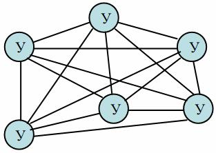
1>Полносвязная
2>Общая шина
3>Дерево
4>Звезда
5>Кольцо
6>Многосвязная
7>Смешанная
8>Амбивалентная
9>Робастная
10>Канальная
11>Стробоскопическая
Как называется представленная на рисунке топология?
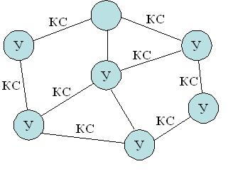
1>Многосвязная
2>Общая шина
3>Дерево
4>Звезда
5>Кольцо
6>Полносвязная
7>Смешанная
8>Амбивалентная
9>Робастная
10>Канальная
11>Стробоскопическая
Как называется представленная на рисунке топология?
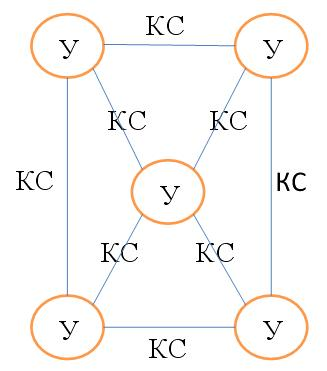
1>Многосвязная
2>Общая шина
3>Дерево
4>Звезда
5>Кольцо
6>Полносвязная
7>Смешанная
8>Амбивалентная
9>Робастная
10>Канальная
11>Стробоскопическая
Как называется представленная на рисунке топология?
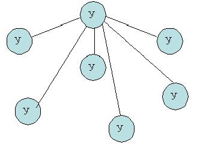
1>Звезда
2>Общая шина
3>Дерево
4>Полносвязная
5>Кольцо
6>Многосвязная
7>Смешанная
8>Амбивалентная
9>Робастная
10>Канальная
11>Стробоскопическая
Как называется представленная на рисунке топология?
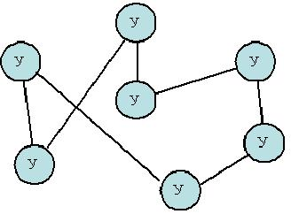
1>Кольцо
2>Общая шина
3>Дерево
4>Звезда
5>Полносвязная
6>Многосвязная
7>Смешанная
8>Амбивалентная
9>Робастная
10>Канальная
11>Стробоскопическая
Как называется представленная на рисунке топология?
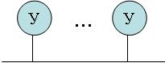
1>Общая шина
2>Полносвязная
3>Дерево
4>Звезда
5>Кольцо
6>Многосвязная
7>Смешанная
8>Амбивалентная
9>Робастная
10>Канальная
11>Стробоскопическая
В каких единицах обычно измеряется длина маршрута доставки сообщений при сравнении разных топологий?
* В качестве ответа введите одно слово с маленькой буквы в именительном падеже единственного числа.
1>хоп
2>хопы
3>в хопах
4>hop
Какие характеристики используются при сравнении разных топологий сети передачи данных?
1>производительность сети (возможное снижение эффективной скорости передачи данных из-за конфликтов)
2>время доставки сообщений (или длина маршрута)
3>стоимость, зависящая как от состава оборудования, так и от сложности реализации
4>надежность, определяемая наличием альтернативных путей
5>сложность (простота) структурной и функциональной организации
6>количество узлов связи
7>количество каналов связи
Какая топология обеспечивает минимальное время доставки сообщений?
1>Полносвязная
2>Общая шина
3>Дерево
4>Звезда
5>Кольцо
6>Многосвязная
7>Смешанная
8>Амбивалентная
9>Робастная
10>Канальная
11>Стробоскопическая
Какая топология СПД обладает максимальной надежностью?
1>Полносвязная
2>Общая шина
3>Дерево
4>Звезда
5>Кольцо
6>Многосвязная
7>Смешанная
8>Амбивалентная
9>Робастная
10>Канальная
11>Стробоскопическая
Какая топология является самой простой и дешевой?
1>Общая шина
2>Полносвязная
3>Дерево
4>Звезда
5>Кольцо
6>Многосвязная
7>Смешанная
8>Амбивалентная
9>Робастная
10>Канальная
11>Стробоскопическая
Выберите верные утверждения.
1>Физическая топология полностью определяется структурой связи узлов
2>Логическая топология зависит от последовательности передачи данных между узлами
3>Физическая топология сети "Кольцо" может совпадать с "Полносвязной" при некотором количестве узлов в сети
4>Физическая топология зависит от последовательности передачи данных между узлами
5>Физическая и логическая топологии всегда идентичны
6>Физическая и логическая топологии всегда отличаются
7>Логическая топология полностью определяется структурой связи узлов.
Чему равно количество каналов связи в сети с топологией "Дерево", состоящей из 10 узлов?
* В качестве ответа введите целое число
1>9
Чему равно количество каналов связи в сети с топологией "Дерево", состоящей из 15 узлов?
* В качестве ответа введите целое число
1>14
Чему равно количество каналов связи в сети с топологией "Звезда", состоящей из 10 узлов?
* В качестве ответа введите целое число
1>9
Чему равно количество каналов связи в сети с топологией "Звезда", состоящей из 15 узлов?
* В качестве ответа введите целое число
1>14
Чему равно количество каналов связи в сети с топологией "Кольцо", состоящей из 10 узлов?
* В качестве ответа введите целое число
1>10
Чему равно количество каналов связи в сети с топологией "Кольцо", состоящей из 15 узлов?
* В качестве ответа введите целое число
1>15
Чему равно количество каналов связи в сети с топологией "Полносвязная", состоящей из 10 узлов?
* В качестве ответа введите целое число
1>45
Чему равно количество каналов связи в сети с топологией "Полносвязная", состоящей из 15 узлов?
* В качестве ответа введите целое число
1>105
Чему равно количество каналов связи в сети с топологией "Полносвязная", состоящей из 20 узлов?
* В качестве ответа введите целое число
1>190
В сети с топологией "Кольцо" 24 компьютера. Чему равна средняя длина маршрута доставки сообщений в такой сети, если пакеты могут двигаться только в одном направлении?
* В качестве ответа укажите целое число хопов.
1>12
В сети с топологией "Кольцо" 12 компьютеров. Чему равна средняя длина маршрута доставки сообщений в такой сети, если пакеты могут двигаться только в одном направлении?
* В качестве ответа укажите целое число хопов.
1>6
В сети с топологией "Кольцо" 7 компьютеров. Чему равна средняя длина маршрута доставки сообщений в такой сети, если пакеты могут двигаться в обоих направлениях и всегда двигаются по кратчайшему маршруту?
* В качестве ответа укажите целое число хопов.
1>2
В сети с топологией "Кольцо" 23 компьютера. Чему равна средняя длина маршрута доставки сообщений в такой сети, если пакеты могут двигаться обоих направлениях и всегда двигаются по кратчайшему маршруту?
* В качестве ответа укажите целое число хопов.
1>6
Какие способы коммутации используются в компьютерных сетях?
1>коммутация пакетов
2>коммутация ячеек
3>коммутация каналов
4>коммутация сообщений
5>коммутация маршрутов
6>коммутация IP
7>коммутация фреймов
Какой способ коммутации используется в традиционных (аналоговых) телефонных сетях?
1>коммутация каналов
2>коммутация пакетов
3>коммутация сообщений
4>коммутация ячеек
5>коммутация маршрутов
6>коммутация линий
7>коммутация маршрутов
8>коммутация IP
Какие способы коммутации используют промежуточное хранение передаваемых данных?
1>коммутация сообщений
2>коммутация пакетов
3>коммутация ячеек
4>коммутация каналов
5>коммутация данных
6>коммутация маршрутов
7>коммутация линий
При каком способе коммутации каналы связи должны иметь одинаковые пропускные способности на всем пути передачи?
1>Коммутация каналов
2>Коммутация пакетов
3>Коммутация сообщений
4>Коммутация ячеек
5>Коммутация маршрутов
6>Коммутация кадров
7>Коммутация IP
8>Коммутация фреймов
Какой способ коммутации эффективен при передаче больших объемов данных?
1>коммутация каналов
2>коммутация сообщений
3>коммутация пакетов
4>коммутация ячеек
5>коммутация маршрутов
6>коммутация кадров
7>коммутация IP
Какой способ коммутации непременно требует установления соединения?
1>коммутация каналов
2>коммутация сообщений
3>коммутация пакетов
4>коммутация ячеек
5>коммутация маршрутов
6>коммутация кадров
7>коммутация IP
Что относится к достоинствам коммутации каналов?
1>возможность использования существующих телефонных каналов
2>не требуется память в транзитных узлах для хранения сообщений
3>высокая эффективность при передаче больших объемов данных
4>каналы связи должны иметь одинаковые пропускные способности на всем пути передачи
5>не требуется предварительное установление соединения
6>задержка в промежуточных узлах может оказаться значительной
7>высокая загрузка каналов связи
8>низкая загрузка каналов связи
Что относится к недостаткам коммутации каналов?
1>каналы связи должны иметь одинаковые пропускные способности на всем пути передачи
2>большие накладные расходы на установление соединения
3>необходимость хранения передаваемых сообщений в промежуточных узлах
4>задержка в промежуточных узлах может оказаться значительной
5>высокие накладные расходы на анализ заголовков
6>низкая загрузка каналов связи
7>высокая загрузка каналов связи
Какими преимуществами обладает коммутация сообщений по сравнению с коммутацией каналов?
1>не требуется предварительное установление соединения
2>каналы связи на всем пути передачи могут иметь разные пропускные способности
3>каналы связи на всем пути передачи должны иметь одинаковые пропускные способности
4>незначительные задержки в промежуточных узлах
5>не требует большой ёмкости памяти в промежуточных узлах
6>требуется предварительное установление соединения, что повышает надёжность передачи
Какими недостатками обладает коммутация сообщений по сравнению с коммутацией каналов?
1>необходимость хранения передаваемых сообщений в промежуточных узлах, что требует значительной ёмкости памяти при разных длинах передаваемых сообщений.
2>задержка в промежуточных узлах может оказаться значительной
3>значительные накладные расходы на установление соединения
4>требуется предварительное установление соединения
5>одинаковые пропускные способности на всем пути
6>низкая надёжность передачи данных
Какими недостатками обладает коммутация сообщений по сравнению с коммутацией пакетов?
1>большее время доставки сообщений
2>большие затраты буферной памяти в промежуточных узлах
3>менее эффективная организация надежной передачи данных
4>необходимость хранения передаваемых сообщений в промежуточных узлах
5>требуется предварительное установление соединения
6>необходимость сборки сообщения в конечном узле
7>высокая загрузка каналов связи
Какими преимуществами обладает коммутация сообщений по сравнению с коммутацией пакетов?
1>меньшие накладные расходы на анализ заголовков
2>не требуется сборка сообщения в узле назначения
3>меньше время доставки сообщений
4>более эффективное использование буферной памяти
5>более эффективная организация надежной передачи данных
6>не требуется предварительное установление соединения
Какими преимуществами обладает коммутация пакетов по сравнению с коммутацией сообщений?
1>меньше время доставки сообщений
2>более эффективное использование буферной памяти
3>более эффективная организация надежной передачи данных
4>меньше накладные расходы на анализ заголовков всех пакетов сообщения
5>не требуется сборка сообщения в узле назначения
6>не требуется предварительное установление соединения
Какими недостатками обладает коммутация пакетов по сравнению с коммутацией сообщений?
1>более высокие накладные расходы на анализ заголовков
2>необходимость сборки из пакетов в узле назначения
3>большее время доставки сообщений
4>менее эффективное использование буферной памяти
5>менее эффективная организация надежной передачи данных
6>требуется предварительное установление соединения
Чем обусловлен тот факт, что при коммутации пакетов буферная память используется более эффективно, чем при коммутации сообщений?
1>ограниченным размером пакетов
2>большим числом пакетов
3>разными маршрутами пакетов
4>небольшим числом пакетов
5>неограниченным размером пакетов
6>одинаковыми маршрутами пакетов
За счёт чего время доставки сообщений при коммутации пакетов меньше, чем при коммутации сообщений?
1>разные пакеты одного и того же собщения передаются параллельно по разным каналам
2>разные пакеты одного и разных собщений передаются быстрее по разным каналам
3>разные собщения передаются параллельно по разным каналам
4>разные пакеты одного и того же собщения передаются одновременно по одному и тому же каналу
5>скорость передачи пакетов выше, чем сообщений
6>меньше задержки в узлах связи
При каком способе коммутации затраты на буферную память в узлах оказываются наибольшими?
1>коммутация сообщений
2>коммутация каналов
3>коммутация пакетов
4>коммутация ячеек
5>коммутация маршрутов
6>коммутация кадров
7>коммутация IP
Почему коммутация пакетов обеспечивает более эффективную организацию надежной передачи данных, чем коммутация сообщений?
1>контроль передаваемых данных осуществляется для каждого пакета
2>в случае обнаружения ошибки переприему подлежит только один пакет
3>не осуществляется контроль передаваемых данных
4>пакеты не теряются в сети
5>используются более надёжные каналы связи
6>не требуется большая буферная память
7>пакеты передаются разными маршрутами
8>контроль передаваемых данных осуществляется для всего сообщения
Основные достоинства коммутации ячеек?
1>маленькие задержки ячеек в узлах
2>не монополизируется канал связи
3>быстрая обработка заголовка ячейки в узлах, поскольку местоположение заголовка строго фиксировано
4>более эффективная, по сравнению с коммутацией пакетов, организация буферной памяти и надежной передачи данных
5>задержка ячеек в узлах - величина постоянная
6>монополизируется канал связи
7>не требуется обработка заголовка ячейки в узлах
Основной недостаток коммутации ячеек?
1>большие накладные расходы на передачу заголовка
2>монополизируется канал связи
3>местоположение заголовка строго фиксировано
4>маленький размер ячейки
5>требуется большая буферная память в узлах
6>неовозможность установки соединения
Какой способ коммутации является основным в современных компьютерных сетях?
1>коммутация пакетов
2>коммутация сообщений
3>коммутация каналов
4>коммутация ячеек
5>коммутация маршрутов
6>коммутация кадров
7>коммутация IP
Какие способы коммутации являются основными и наиболее широко используемыми в компьютерных сетях?
1>каналов
2>пакетов
3>сообщений
4>маршрутов
5>линий
6>передач
7>фреймов
Какими способами в компьютерной сети может быть реализована коммутация пакетов?
1>дейтаграммный
2>виртуальный канал
3>программный
4>реальный канал
5>полносвязный
6>маршрутизация
Как называется способ передачи данных, при котором пакеты одного и того же сообщения могут передаваться между двумя взаимодействующими абонентами по разным маршрутам?
* В качестве ответа введите прилагательное в именительном падеже единственного числа с маленькой буквы
1>дейтаграммном
2>дейтаграммный
3>при дейтаграммном
4>Дейтаграммном
5>Дейтаграммный
6>При дейтаграммном
7>датаграммный
8>датаграммного
9>датаграмный
10>дейтаграмный
11>datagram
12>Дейтаграммный
Как называется способ передачи данных, при котором пакеты одного и того же сообщения приходят в конечный узел в произвольной последовательности?
* В качестве ответа введите прилагательное в именительном падеже единственного числа с маленькой буквы
1>дейтаграммном
2>дейтаграммный
3>при дейтаграммном
4>Дейтаграммном
5>Дейтаграммный
6>При дейтаграммном
7>датаграммный
8>датаграммного
9>датаграмный
10>дейтаграмный
11>datagram
12>Дейтаграммный
Какими достоинствами обладает дейтаграммный способ передачи пакетов?
1>простота организации и реализации передачи данных - каждый пакет сообщения передается независимо от других пакетов
2>каждый пакет выбирает наилучший путь
3>все пакеты передаются по одному и тому же пути
4>пакеты не теряются в процессе передачи
5>сообщение не может быть передано получателю, пока в конечном узле не соберутся все пакеты данного сообщения
6>в конечном узле не требуется собирать все пакеты сообщения
Какими недостатками обладает способ передачи пакетов "виртуальный канал"?
1>наличие накладных расходов на установление соединения
2>неэффективное использование ресурсов сети
3>требуется установление физического соединения между абонентами
4>пакеты передаются без промежуточного хранения в узлах сети
5>пакет двигаются разными маршрутами
Основной недостаток дейтаграммного способа передачи данных?
1>усложняется процесс сборки сообщения из пакетов, т.к. они могут приходить в конечный узел в произвольном порядке
2>каждый пакет сообщения передается независимо от других пакетов
3>пакет двигаются разными маршрутами
4>не требуется предварительно устанавливать соединение между абонентами
5>требуется предварительно устанавливать соединение между абонентами
6>пакеты могут иметь слишком большую длину
При каком способе передачи пакеты передаются в сети по одному и тому же маршруту?
1>Виртуальный канал
2>Дейтаграммный
3>Программный
4>Случайный
5>Лавинообразный
6>Однопутевой
7>Многопутевой
8>Статический
При каком способе передачи пакеты одного и того же сообщения передаются в сети по разным маршрутам?
1>Дейтаграммный
2>Виртуальный канал
3>Программный
4>Случайный
5>Системный
6>Многопутевой
7>Адаптивный
8>Динамический
Какие методы маршрутизации относятся к простым?
1>лавинообразные
2>по предыдущему опыту
3>случайные
4>однопутевые
5>многопутевые
6>локальные
7>распределённые
8>централизованные
Какие методы маршрутизации относятся к фиксированным?
1>однопутевые
2>многопутевые
3>по предыдущему опыту
4>локальные
5>распределённые
6>централизованные
7>случайные
8>лавинообразные
Какие методы маршрутизации относятся к адаптивным?
1>локальные
2>централизованные
3>распределённые
4>случайные
5>лавинообразные
6>однопутевые
7>многопутевые
8>по предыдущему опыту
В каком методе маршрутизации изменение маршрутной таблицы зависит от состояний выходных буферов данного узла (маршрутизатора) и не зависит от состояния соседних узлов?
1>локальный
2>по предыдущему опыту
3>распределённый
4>централизованный
5>случайный
6>фиксированный
7>лавинообразный
В каком методе маршрутизации изменение маршрутной таблицы зависит от состояний соседних узлов (маршрутизаторов)?
1>распределённый
2>локальный
3>по предыдущему опыту
4>централизованный
5>случайный
6>фиксированный
7>лавинообразный
В каком методе маршрутизации изменение маршрутной таблицы осуществляется на основе анализа адресов отправителей пакетов?
1>по предыдущему опыту
2>локальный
3>распределённый
4>централизованный
5>случайный
6>фиксированный
7>лавинообразный
Что изображено на рисунке?
*В качестве ответа введите два слова
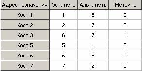
1>маршрутная таблица
2>таблица маршрутизации
3>Маршрутная таблица
4>Таблица маршрутизации
Интервал времени, в течение которого узел сети, передавший пакет, ожидает подтверждения - это…
1>Таймаут
2>Период
3>Время передачи
4>Задержка
5>Флуктуация
6>Дельта-тайм
7>Время ожидания
8>Время подтверждения
9>Время отсечки
10>Время окна
11>Ширина окна
Из какого условия обычно определяется величина тайм-аута при единичной ширине окна?
1>минимум вдвое больше, чем время передачи кадра
2>больше, чем время передачи кадра в прямом направлении
3>больше, чем время передачи кадра в обратном направлении
4>больше, чем время передачи квитанции
5>больше, чем время формирования квитанции
6>вдвое больше, чем время передачи квитанции
7>максимум вдвое больше, чем время передачи кадра
Какие особенности присущи сетевому компьютерному трафику?
1>неоднородность потока данных
2>разные требования к качеству передачи данных разных типов
3>возникновение периодов перегрузок
4>нестационарность трафика
5>стационарность трафика
6>одинаковые требования к качеству передачи данных разных типов
7>однородность потока данных
8>отсутствие перегрузок
Какие цели преследует управление трафиком?
1>обеспечение надежной передачи данных
2>повышение эффективости загрузки оборудования сети
3>обеспечение требуемого уровня задержек при передаче по сети
4>предотвращение перегрузок и блокировок
5>повышение помехоустойчивости
6>шифрование трафика
7>антивирусная защита
8>синхронизация передаваемых данных
Какая задача реализуется за счет механизмов квитирования и тайм-аута?
1>надежная передача данных
2>эффективная загрузка оборудования (каналов и узлов) сети
3>малые задержки при передаче по сети
4>предотвращение перегрузок и блокировок
5>выбор наилучшего маршрута
6>шифрация трафика на основе заданного алгоритма
7>безопасная передача данных
Какая из представленных на графике зависимостей отражает влияние числа пакетов на производительность сети?
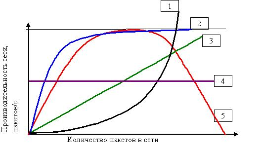
1>5
2>1
3>2
4>3
5>4
6>7
7>6
За счёт чего в телекоммуникационной сети обеспечивается надежная передача данных?
1>за счет механизма квитирования
2>за счет использования бит-стаффинга
3>за счёт введения приоритетов
4>за счёт маршрутизации
5>за счёт коммутации
6>за счёт применения виртуальных каналов
Как называется служебный кадр, подтверждающий, что данные переданы без ошибок?
1>положительная квитанция
2>пакет соглашения
3>отрицательная квитанция
4>безошибочная квитанция
5>кадр доставки
6>квитированный прием
7>положительный кадр
8>отрицательный кадр
Как называется служебный кадр, свидетельствующий, что переданные данные содержат ошибку?
1>отрицательная квитанция
2>положительная квитанция
3>ошибочная квитанция
4>контрольная квитанция
5>ошибочные данные
6>отрицательный кадр
7>ошибочный кадр
Какой вид после реализации процедуры бит-стаффинг примет кадр:10111110111111011111110?
1>10111110011111010111110110
Какой вид после реализации процедуры бит-стаффинга примет кадр:11111011110111111111111?
1>11111001111011111011111011
Восстановите кадр, переданный в соответствии с процедурой бит-стаффинга и имеющий вид11111001111011111011111011 ?
1>11111011110111111111111
Восстановите кадр, переданный в соответствии с процедурой бит-стаффинга и имеющий вид100110111110001111101 ?
1>1001101111100111111
Основное назначение "механизма скользящего окна"?
1>увеличить загрузку канала связи
2>увеличить загрузку узла связи
3>уменьшить загрузку канала связи
4>уменьшить загрузку узла связи
5>увеличить надёжность доставки кадров
6>уменьшить время доставки кадров
Что такое "ширина окна"?
1>максимальное число кадров, которые могут быть переданы без подтверждения
2>минимальное число кадров, которые могут быть переданы без подтверждения
3>минимальное время, в течение которого могут быть переданы кадры без подтверждения
4>минимальное время, в течение которого передающий узел ожидает подтверждения
5>максимальное время, в течение которого могут быть переданы кадры без подтверждения
6>максимальное время, в течение которого передающий узел ожидает подтверждения
7>максимальное число квитанций, которые должны быть переданы
8>минимальное число квитанций, которые должны быть переданы
Ширина окна равна 128. Передающий узел, передавший 36-й кадр, получил подтверждение о приёме 28-го кадра. Какое максимальное число кадров может ещё передать узел без подтверждения?
1>120
Ширина окна равна 128. Передающий узел, передавший 39-й кадр, получил подтверждение о приёме 38-го кадра. Какое максимальное число кадров может ещё передать узел без подтверждения?
1>127
Ширина окна равна 8. Передающий узел, передавший 5-й кадр, получил подтверждение о приёме 3-го кадра. Какое максимальное число кадров может ещё передать узел без подтверждения?
1>6
Ширина окна равна 16. Передающий узел, передавший 6-й кадр, получил подтверждение о приёме 5-го кадра. Какое максимальное число кадров может ещё передать узел без подтверждения?
1>15
Какая из перечисленных задач реализуется за счет применения механизма окна?
1>увеличение загрузки канала связи
2>надежная передача данных
3>малые задержки при передаче по сети
4>предотвращение перегрузок и блокировок при передаче данных
5>выбор наилучшего маршрута
6>шифрация трафика на основе заданного алгоритма
В каких единицах принято измерять пропускную способность каналов связи в сетях ЭВМ?
1>[bps]
2>[килобит*секунд]
3>[секунд/килобайт]
4>гигабайт в минуту
5>байт в секунду в квадрате
6>мегагерц в секунду
7>бод в секунду
Чему соответствует пропускная способность канала связи в 100 кбит/с?
1>100 000 бит/с
2>102 400 бит/с
3>800 000 бит/с
4>819 200 бит/с
5>12 800 байт/с
6>0.01 Мбит/с
7>правильный вариант отсутствует
Установите соответствие между значениями.
1>1 кбит/с ::: 1 000 бит/с
2>1 Мбит/с ::: 1 000 000 бит/с
3>1 Тбит/с ::: 1 000 000 000 000 бит/с
4>1 Гбит/с ::: 1 000 000 000 бит/с
5>1 Пбит/с ::: 1 000 000 000 000 000 бит/с
Выберите корректно заданные значения пропускных способностей канала связи в компьютерной сети?
1>128 кбит/с
2>10 Мбит/с
3>1 Гбит/с
4>64 Кбит/с
5>128 кбайт/с
6>200 Кбайт/с
7>256 гбит/с
8>512 мбит/с
Укажите некорректно заданные значения пропускных способностей канала связи в компьютерной сети?
1>100 Кбит/с
2>256 кбайт/с
3>512 Кбайт/с
4>10 мбит/с
5>100 Мбит/с
6>64 кбит/с
7>10 Гбит/с
Какой стек протоколов разработан компанией IBM и предназначен для удаленной связи с большими компьютерами?
1>SNA
2>TCP/IP
3> XNS
4>IPX
5>AppleTalk
6>DECnet
7>TCP
8>IP
Как называется множество протоколов разных уровней одной сетевой технологии?
1>стек
2>стек протоколов
3>Стек
4>Стек протоколов
Что являеся сетевыми стеками протоколов?
1>TCP/IP
2>XNS
3>IPX
4>AppleTalk
5>DECnet
6>SNA
7>LAN
8>WAN
9>ISO
Сколько уровней содержит стек протоколов TCP/IP?
1>4
Пусть некоторое приложение вот-вот получит сообщение из компьютерной сети.Что будет происходить с PDU, содержащим это сообщение, при продвижении PDU по интерфейсам между уровнями OSI-модели?
1>Размер PDU будет уменьшаться
2>PDU будет продвигаться от 1-го уровня к 7-му
3>Размер PDU будет увеличиваться
4>PDU будет продвигаться от 7-го уровня к 1-му
5>Размер PDU будет оставаться неизменным
6>PDU будет отправлен с 7-го уровня, минуя 1-й
7>PDU будет отправлен с 1-го уровня, минуя 7-й
Как называется преобразование данных в вид, позволяющий передавать их по выбранному каналу связи и обнаруживать ошибки, возникающие из-за помех при их передаче в этом канале связи?
1>кодирование
2>Кодирование
3>Кодированием
4>кодированием
Какие типы сигналов используются в компьютерных сетях для передачи данных?
1>электрические
2>электромагнитные
3>оптические
4>акустические
5>магнитные
6>гравитационные
7>инерционные
Какие типы сигналов для передачи данных не используются в компьютерных сетях ?
1>акустические
2>логические
3>электрические
4>радиоволны
5>оптические
Как называется способность системы противостоять воздействию помех?
1>помехоустойчивость
2>Помехоустойчивость
3>помехозащищенность
4>Помехозащищенность
Как называется количество данных, которое может быть передано по каналу связи за единицу времени?
1>пропускная способность канала связи
2>полоса пропускания канала связи
3>полоса пропускания сигнала
4>скорость модуляции
5>полоса частот
6>скорость кодирования
В каких единицах принято измерять пропускную способность канала связи в компьютерных сетях?
1>кбит/с
2>кбайт/с
3>Гц
4>дБ
5>бод
6>Кбит/с
7>Гц/с
8>гц/с
9>бод/с
bps - это единица измерения ...
1>пропускной способности канала
2>полосы пропускания канала
3>скорости модуляции
4>времени передачи данных
5>загрузки канала
6>спектра сигнала
BER - это ...
1>интенсивность битовых ошибок
2>единица измерения скорости модуляции
3>сетевой протокол
4>показатель помехозащищенности
5>единица измерения нагрузки в канале связи
6>единица измерения пропускной способности канала связи
Канал связи, предоставляемый на определённое время, называется ...
1>Коммутируемым
2>Выделенным
3>Общим
4>Частным
5>Постоянным
6>Переменным
7>Дискретным
Канал связи, существующий постоянно между двумя пользователями, называется ...
1>Выделенным
2>Коммутируемым
3>Большим
4>Двойным
5>Локальным
6>Групповым
Канал связи, по которому возможна передача только в одном направлении, называется ...
1>симплексным
2>симплексный
3>Симплексный
4>Симплексным
5>simplex
Канал связи, по которому возможна одновременная передача в обоих направлениях, называется ...
1>дуплексный
2>дуплексным
3>Дуплексный
4>Дуплексным
5>duplex
Канал связи, по которому возможна передача в обоих направлениях, но в разные моменты времени, называется ...
1>полудуплексным
2>полудуплексный
3>Полудуплексным
4>Полудуплексный
5>half-duplex
6>halfduplex
7>half duplex
Раскрыть обозначения элементов на схеме аналогового канала связи, предназначенного для передачи дискретных сообщений (на рисунке: ИС - источник сообщений, ПС - приёмник сообщений).
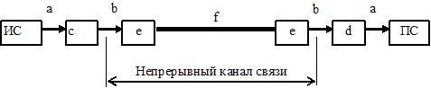
1> ::: дискретный (двоичный) сигнал
2> ::: непрерывный сигнал
3> ::: модулятор
4> ::: демодулятор
5> ::: фильтр
6> ::: линия связи
Раскрыть обозначения элементов на схеме дискретного (цифрового) канала связи (на рисунке: ИДС - источник дискретных сообщений; ПДС - приёмник дискретных сообщений).
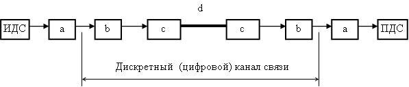
1> ::: устройство сопряжения с КС
2> ::: устройство защиты от ошибок
3> ::: устройство преобразования сигналов
4> ::: линия связи
Для обеспечения требуемых динамических и частотных свойств передаваемого сигнала в непрерывном канале связи используются ...
1>фильтры
2>устройства защиты от ошибок
3>модуляторы
4>демодуляторы
5>устройства сопряжения
6>устройства преобразования сигналов
В каких единицах измеряется усиление и ослабление сигнала?
1>дБ
2>Дб
3>кбит
4>Кбит
5>безразмерная
6>бод
7>бит/с
8>дм
Мощность сигнала уменьшилась в 100 раз. Чему равно изменение сигнала?
1>- 20 дБ
2>+ 20 дБ
3>- 5 дБ
4>+ 5 дБ
5>- 100 дБ
6>+ 100 дБ
7>- 50 дБ
8>+ 50 дБ
Мощность сигнала уменьшилась в 10000 раз. Чему равно изменение сигнала?
1>- 40 дБ
2>+ 40 дБ
3>- 30Дб
4>+ 30 дБ
5>- 10 Дб
6>+ 10 дБ
7>- 100 дБ
8>+ 100 дБ
Мощность сигнала уменьшилась в 1000 раз. Чему равно изменение сигнала?
1>-30 дБ
2>+30 дБ
3>-10 дБ
4>+10 дБ
5>-100 дБ
6>+100 дБ
7>-1000 дБ
8>+1000 дБ
Как называется отношение выходной мощности сигнала ко входной?
1>коэффициент передачи
2>коэффициентом передачи
3>Коэффициент передачи
4>Коэффициентом передачи
Во сколько раз уменьшится мощность сигнала на расстоянии 100 м, если его ослабление равно: d=100 дБ/км?
1>10
Во сколько раз уменьшится мощность сигнала на расстоянии 50 м, если его ослабление равно: d=20 дБ/100 м?
1>10
Во сколько раз уменьшится мощность сигнала на расстоянии 2000 м, если его ослабление равно: d=10 дБ/км?
1>100
Во сколько раз уменьшится мощность сигнала на расстоянии 3 км, если его ослабление равно: d=10 дБ/км?
1>1000
В чем состоит удобство вычисления затухания в децибелах?
1>при каскадном включении нескольких устройств затухания в децибелах складываются
2>при каскадном включении нескольких устройств затухания в децибелах умножаются
3>при каскадном включении нескольких устройств затухания в децибелах не изменяются
4>децибелы соответсвтуют международной системе единиц СИ
5>для длинных линий связи затухание в децибелах не изменяется
6>для коротких линий связи затухание в децибелах не изменяется
7>для длинных линий связи усиление в децибелах не изменяется
Гармоническое колебание задано уравнением F(t) = X*sin(Y*t + Z). Что такое Z?
1>фаза
Гармоническое колебание задано уравнением F(t) = X*sin(Y*t + Z). Что такое X?
1>амплитуда
Какой спектр частот имеют дискретные сигналы?
1>Бесконечный
2>Ограниченный
3>Низкий
4>Отрицательный
5>Маленький
6>Большой
В каких единицах измеряется линейная частота?
1>Гц
2>безразмерная
3>с
4>дБ
5>бод
6>градусы
7>бит/с
Единица измерения линейной частоты - это ...
1>Гц
2>Герц
3>Hz
4>Herz
5>герц
Как называется единица измерения линейной частоты?
1>Герц
2>Гц
3>Herz
4>Hz
Какие параметры гармонического сигнала могут нести информацию?
1>амплитуда
2>фаза
3>частота
4>затухание
5>коэффициент передачи
6>ослабление сигнала
Какие утверждения являются верными?
1>спектр - характеристика сигнала
2>полоса пропускания - характеристика среды передачи
3>для корректной передачи сигнала полоса пропускания должна быть шире спектра
4>спектр - характеристика среды передачи
5>полоса пропускания - характеристика сигнала
6>спектр должен быть больше полосы пропускания
7>спектр и полоса пропускания - понятия эквивалентные
8>спектр может быть как больше, так и меньше полосы пропускания
Какие утверждения являются неверными?
1>спектр - характеристика среды передачи
2>полоса пропускания - характеристика сигнала
3>для корректной передачи сигнала спектр должен быть больше полосы пропускания
4>для корректной передачи сигнала спектр может быть как больше, так и меньше полосы пропускания
5>спектр - характеристика сигнала
6>полоса пропускания - характеристика среды передачи
7>полоса пропускания должна быть больше спектра сигнала
Выберите правильные утверждения
1>Спектр - это характеристика сигнала.
2>Полоса пропускания - это характеристика канала связи.
3>Спектр - это характеристика канала связи
4>Полоса пропускания - это характеристика сигнала.
5>Спектр - это характеристика затухания сигнала.
6>Полоса пропускания - это характеристика дальности передачи сигнала.
7>Спектр - это характеристика пропускной способности канала связи.
8>Полоса пропускания - это характеристика затухания сигнала
Полоса пропускания - это характеристика ...
1>среды передачи
2>сигнала
3>передаваемых данных
4>узла связи
5>сети передачи данных
6>телекоммуникационной сети
В каких единицах измеряется спектр?
1>Гц
2>Герц
3>Hz
4>Herz
В каких единицах измеряется полоса пропускания?
1>Гц
2>Герц
3>Hz
4>Herz
При каком условии обеспечивается качественная передача сигнала?
1>Спектр сигнала меньше полосы пропускания
2>Спектр сигнала больше полосы пропускания
3>Спектр сигнала равен бесконечности
4>Спектр сигнала положительный
5>Спектр сигнала не ограничен
6>Спектр сигнала не зависит от полосы пропускания
7>Среди приведенных нет правильных ответов
Какую ширину полосы пропускания (в Гц) имеет телефонный канал? Ответ округлите до целых.
1>3100
Какую ширину полосы пропускания (в кГц) имеет телефонный канал? Ответ округлить до 1-го знака после запятой.
1>3,1
2>3.1
В каком интервале находится полоса пропускания телефонного канала?
1>От 300 до 3400 Гц
2>От 0 до 4000 Гц
3>От 100 до 3000 Гц
4>От 100 до 10000 Гц
5>От 0 до бесконечности
6>От 300 до 10000 Гц
Какие данные являются в исходном виде дискретными?
1>телеграфные
2>компьютерные
3>телефонные
4>аудио
5>видео
6>факсимильные
Какие данные являются в исходном виде непрерывными?
1>разговорная речь
2>видео
3>температура воздуха в помещении
4>уровень воды в Неве
5>компьютерные данные
6>цифровые данные
Какой спектр частот имеют аудиоданные / голосовые данные / видеоданные? В какой полосе частот передаются данные в каналах тональной частоты?
1>от 20 Гц до 20 кГц
2>от 10 кГц до 20 кГц
3>от 0 Гц до 100 кГц
4>от 100 Гц до 3400 Гц
5>от 0 Гц до 20000 Гц
6>от 300 Гц до 20000 кГц
7>от 300 Гц до 3400 Гц
8>от 80 Гц до 12000 Гц
9>от 40 Гц до 6000 кГц
В чём отличие аудиоданных от телефонных?
1>более широкий спектр
2>более узкий спектр
3>отличия нет
4>большая скорость передачи
5>меньшая скорость передачи
6>большая полоса пропускания
7>меньшая полоса пропускания
Рассчитать максимально возможную пропускную способность (кбит/с) канала связи при условии, что полоса пропускания равна 100 МГц, а мощность сигнала равна мощности шума.
1>100000
Какой английской аббревиатурой обозначается отношение мощности передаваемого сигнала к мощности шума на линии связи?
1>SNR
2>snr
Какая формула позволяет рассчитать максимально возможную пропускную способность канала связи, зная его полосу пропускания и SNR?
1>Формула Шеннона
2>Формула Найквиста
3>Формула Котельникова
4>Формула Ньютона
5>Формула Коши
6>Формула Чебышева
Рассчитать максимально возможную пропускную способность (кбит/с) канала связи при условии, что полоса пропускания равна 100 МГц, а отношение мощности сигнала к мощности шума равно 3.
1>200000
Рассчитать максимально возможную пропускную способность (Мбит/с) канала связи при условии, что полоса пропускания равна 100 МГц, а отношение мощности сигнала к мощности шума равно 3.
1>200
Рассчитать максимально возможную пропускную способность (бит/с) канала связи при условии, что полоса пропускания равна 100 МГц, а отношение мощности сигнала к мощности шума равно 3.
1>200000000
Рассчитать максимально возможную пропускную способность (бит/с) канала связи при условии, что полоса пропускания равна 20 МГц, а отношение мощности сигнала к мощности шума равно 3.
1>40000000
Рассчитать максимально возможную пропускную способность (кбит/с) канала связи при условии, что полоса пропускания равна 20 МГц, а отношение мощности сигнала к мощности шума равно 3.
1>40000
Рассчитать максимально возможную пропускную способность (Мбит/с) канала связи при условии, что полоса пропускания равна 20 МГц, а отношение мощности сигнала к мощности шума равно 3.
1>40
Рассчитать максимально возможную пропускную способность (Мбит/с) канала связи при условии, что полоса пропускания равна 100 МГц, а отношение мощности сигнала к мощности шума равно 7.
1>300
Рассчитать максимально возможную пропускную способность (кбит/с) канала связи при условии, что полоса пропускания равна 100 МГц, а отношение мощности сигнала к мощности шума равно 7.
1>300000
Рассчитать максимально возможную пропускную способность (бит/с) канала связи при условии, что полоса пропускания равна 100 МГц, а отношение мощности сигнала к мощности шума равно 7.
1>300000000
Рассчитать максимально возможную пропускную способность (бит/с) канала связи при условии, что полоса пропускания равна 10 МГц, а отношение мощности сигнала к мощности шума равно 15.
1>40000000
Рассчитать максимально возможную пропускную способность (кбит/с) канала связи при условии, что полоса пропускания равна 100 кГц, а отношение мощности сигнала к мощности шума равно 127.
1>700
Рассчитать максимально возможную пропускную способность (бит/с) канала связи при условии, что полоса пропускания равна 100 кГц, а отношение мощности сигнала к мощности шума равно 1023.
1>1000000
Изменение характеристик несущей в соответствии с информативным сигналом - это…
1>модуляция
2>Модуляция
Какие бывают методы модуляции?
1>Амплитудная
2>Фазовая
3>Частичная
4>Случайная
5>Сложная
6>Общая
Какие бывают методы модуляции?
1>Частотная
2>Амплитудная
3>Общая
4>Произвольная
5>Полная
6>Случайная
7>Частичная
Какие из перечисленных методов модуляции используются для представления непрерывных данных в виде непрерывных сигналов?
1>амплитудная
2>частотная
3>волновая
4>фазовая
5>импульсно-кодовая
6>амплитудно-импульсная
7>временная
Какие из перечисленных методов модуляции используются для представления непрерывных данных в виде дискретных сигналов?
1>импульсно-кодовая
2>амплитудно-импульсная
3>амплитудная
4>фазовая
5>частотная
6>волновая
7>временная
Какие из перечисленных методов модуляции используются для представления дискретных данных в виде непрерывных сигналов?
1>амплитудная
2>фазовая
3>частотная
4>импульсно-кодовая
5>амплитудно-импульсная
6>волновая
Какие методы модуляции представлены на рисунке?
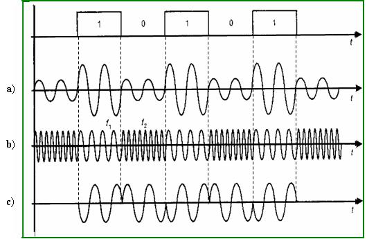
1>:: амплитудная
2>:: частотная
3>:: фазовая
От чего зависит спектр результирующего модулированного сигнала?
1>от метода модуляции
2>от скорости модуляции
3>от полосы пропускания
4>от пропускной способности
5>от коэффициента затухания
6>от типа канала связи
Как называется аналоговый высокочастотный сигнал, подвергаемый модуляции в соответствии с некоторым информативным сигналом?
1>несущая
2>несущей
3>Несущая
4>Несущей
Чему равна скорость передачи речевых данных при использовании адаптивной дифференциальной импульсно-кодовой модуляции?
1>32 кбит/с
2>32 Кбит/с
3>64 кбит/с
4>128 кбит/с
5>64 Кбит/с
6>128 Кбит/с
7>1,544 Мбит/с
8>2,048 Мбит/с
Чему равна скорость передачи речевых данных (бит/с) при использовании адаптивной дифференциальной импульсно-кодовой модуляции?
1>32000
Чему равна скорость передачи речевых данных (кбит/с) при использовании импульсно-кодовой модуляции?
1>64
Чему равна скорость передачи речевых данных (бит/с) при использовании импульсно-кодовой модуляции?
1>64000
При каком способе модуляции по каналу связи передается разность между текущим значением сигнала и предыдущим?
1>адаптивная дифференциальная импульсно-кодовая модуляция
2>импульсно-кодовая модуляция
3>амплитудно-импульсная модуляция
4>амплитудная модуляция
5>фазовая модуляция
6>частотная модуляция
Модуляция, при которой непрерывный сигнал представляется совокупностью дискретных сигналов с определенной амплитудой, называется ...
1>Амплитудно-импульсной модуляцией
2>Аналогово-импульсной модуляцией
3>Аналогово-информационной модуляцией
4>Амплитудно-информационной модуляцией
5>Импульсно-кодовой модуляцией
6>Амплитудно-кодовой модуляцией
7>Амплитудно-дискретной модуляцией
Что такое АИМ?
1>Амплитудно-импульсная модуляция
2>Биполярное кодирование с альтернативной инверсией
3>Амплитудная модуляция с инверсией
4>Аналоговый информационный модулятор
5>Аналогово-импульсный модулятор
6>Аналогово-индуктируемый мезонин
7>Амплитудно-импульсовая модальность
Как называется метод модуляции, показанный на рисунке?
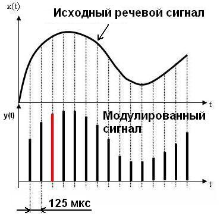
1>амплитудно-импульсная модуляция
2>амплитудно-импульсной модуляцией
3>амплитудно-импульсная
4>амплитудно-импульсной
5>АИМ
Чему равна частота квантования речевого сигнала в методе модуляции, показанном на рисунке? Ответ указать в Герцах.
1>8000
2>восемь тысяч
3>8 000
Что такое ИКМ?
1>Импульсно-кодовая модуляция
2>Информационно-кодовая модуляция
3>Импульсно-кодовый мультиплексор
4>Идентификационный корневой мультиплексор
5>Индивидуальный коммутатор-маршрутизатор
6>Информационно-коммутируемый модулятор
Модуляция, при которой аналоговый сигнал кодируется сериями импульсов, представляющими собой цифровые коды амплитуд в точках отсчета аналогового сигнала, называется ...
1>Импульсно-кодовой модуляцией
2>Амплитудно-импульсной модуляцией
3>Амплитудно-кодовой модуляцией
4>Дифференциальной кодовой модуляцией
5>Амплитудно-частотной модуляцией
6>Амплитудно-фазовой модуляцией
7>Цифро-аналоговой модуляцией
Как называется метод модуляции, показанный на рисунке?
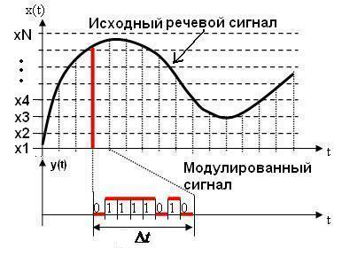
1>импульсно-кодовая модуляция
2>импульсно-кодовой модуляцией
3>импульсно-кодовая
4>импульсно-кодовой
5>ИКМ
6>PCM
Чему равен интервал Δt квантования по времени в методе модуляции, показанном на рисунке, при использовании этого метода в телефонии? Ответ укажите в микросекундах.
1>125
Чему равен интервал квантования по времени Δt в методе модуляции, показанном на рисунке, при использовании этого метода в телефонии? Ответ укажите в миллисекундах.
1>0,125
2>0.125
3>1/8
Чему равно количество N уровней квантования по значению сигнала в методе модуляции, показанном на рисунке, при использовании этого метода в телефонии?
1>256
Какая минимальная пропускная способность необходима для передачи речевого сигнала с использованием метода модуляции, показанного на рисунке, при условии, что количество уровней квантования по значению сигнала равно 256, а интервал квантования по времени равен 125 мкс? Ответ укажите в кбит/с
1>64
Чему равна частота квантования речевого сигнала в методе модуляции, показанном на рисунке, при использовании этого метода в телефонии? Ответ указать в кГц
1>8
2>восемь
Чему равна частота квантования речевого сигнала в методе модуляции, показанном на рисунке, при использовании этого метода в телефонии? Ответ указать в Гц
1>8000
Какие коды применяют при цифровом кодировании дискретных данных?
1>потенциальные
2>импульсные
3>аналоговые
4>непрерывные
5>симметричные
6>асиметричные
Какой метод кодирования изображен на рисунке?
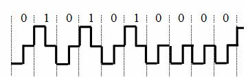
1>RZ
2>Манчестерский
3>NRZ
4>AMI
5>NRZI
6>MLT-3
7>PAM-5
Какие коды применяют при цифровом кодировании дискретных данных?
1>потенциальные
2>импульсные
3>аналоговые
4>непрерывные
5>симметричные
6>асиметричные
Какой метод кодирования изображен на рисунке?
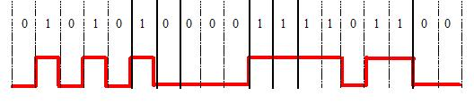
1>NRZ
2>RZ
3>АМI
4>Манчестерский
5>MLT-3
6>PAM-5
7>NRZI
Какой метод кодирования изображен на рисунке (англоязычная аббревиатура)?
1>NRZ
2>nrz
Какой метод кодирования изображен на рисунке (англоязычная аббревиатура)?
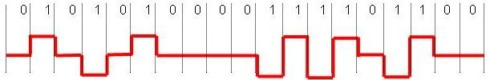
1>AMI
Какой метод кодирования изображен на рисунке?
1>AMI
2>RZ
3>NRZ
4>NRZI
5>MLT-3
6>PAM-5
7>Манчестер 2
Какой метод кодирования изображен на рисунке?
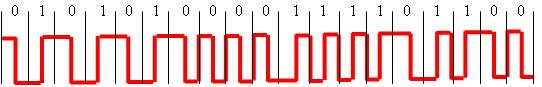
1>Манчестерский
2>RZ
3>NRZ
4>AMI
5>PAM-5
6>MLT-3
Какой метод кодирования изображен на рисунке?
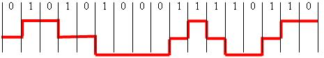
1>MLT-3
2>AMI
3>RZ
4>NRZ
5>NRZI
6>Манчестер 2
7>PAM-5
Какой метод кодирования изображен на рисунке (англоязычная аббревиатура)?
1>MLT-3
2>MLT3
3>ЬДЕ-3
4>ЬДЕ3
Какой метод кодирования изображен на рисунке (англоязычная аббревиатура)?
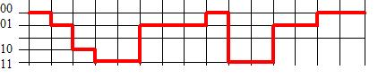
1>PAM-5
2>PAM5
3>PAM 5
Что не является методом физического кодирования?
1>ISDN
2>RZ
3>NRZ
4>NRZI
5>MLT-3
6>PAM-5
Что является методом физического кодирования?
1>MLT-3
2>NRZ
3>PDH
4>SDH
5>SONET
6>ATM
7>ISDN
Какой метод является методом логического кодирования?
1>4B/5B
2>MLT-3
3>PAM-5
4>RZ
5>NRZ
6>AMI
Какие методы не относятся к методам логического кодирования?
1>MLT-3
2>РАМ-5
3>NRZI
4>8B/10B
5>8B/6T
6>5B/6B
Какими достоинствами обладает метод кодирования NRZ?
1>наличие только двух уровней потенциала
2>низкая частота основной гармоники
3>простота реализации
4>обладает свойством самосинхронизации
5>наличие низкочастотной составляющей
6>нет постоянной составляющей
Какими недостатками обладает метод кодирования NRZ?
1>не обладает свойством самосинхронизации
2>наличие низкочастотной составляющей
3>отсутствие постоянной низкочастотной составляющей
4>низкая частота основной гармоники
5>наличие только двух уровней потенциала
6>сложность реализации
Какими достоинствами обладает метод кодирования RZ?
1>обладает свойством самосинхронизации
2>отсутствие постоянной низкочастотной составляющей
3>наличие только двух уровней потенциала
4>низкая частота основной гармоники
5>простота реализации
6>наличие постоянной низкочастотной составляющей
Какими недостатками обладает метод кодирования RZ?
1>наличие трех уровней сигнала
2>спектр сигнала шире, чем у потенциальных кодов NRZ
3>не обладает свойством самосинхронизации
4>наличие постоянной низкочастотной составляющей
5>отсутствие постоянной низкочастотной составляющей
6>наличие двух уровней сигнала
В каких методах кодирования используются только два уровня сигнала?
1>NRZ
2>NRZI
3>Манчестерское кодирование
4>RZ
5>AMI
6>MLT-3
7>PAM-5
В каких методах кодирования используются три уровня сигнала?
1>RZ
2>AMI
3>MLT-3
4>Манчестерское кодирование
5>PAM-5
6>NRZ
7>NRZI
В каких методах кодирования используется более двух уровней сигнала?
1>AMI
2>PAM-5
3>MLT-3
4>RZ
5>NRZ
6>NRZI
7>Манчестерское кодирование
Какими достоинствами обладает манчестерское кодирование?
1>обладает свойством самосинхронизации
2>наличие только двух уровней сигнала
3>нет постоянной составляющей
4>простота реализации
5>наличие трех уровней сигнала
Основной недостаток манчестерского кодирования?
1>спектр сигнала шире, чем у кода NRZ и кода AMI
2>наличие трех уровней сигнала
3>наличие постоянной низкочастотной составляющей
4>отсутствие постоянной низкочастотной составляющей
5>не обладает свойством самосинхронизации
6>наличие двух уровней сигнала
Какими недостатками обладает метод кодирования MLT-3?
1>наличие трех уровней сигнала
2>отсутствие самосинхронизации
3>отсутствие постоянной низкочастотной составляющей
4>низкая частота основной гармоники
5>высокая частота основной гармоники
Сколько уровней сигнала используется для передачи данных в методе кодирования PAM-5?
1>4
В каком методе используется двухбитовое кодирование?
1>PAM-5
2>RZ
3>NRZ
4>NRZI
5>AMI
6>MLT-3
7>Манчестерское кодирование
Какая битовая последовательность закодирована методом "Манчестер 2"?
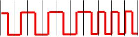
1>0101010000
2>1010101111
Какая битовая последовательность закодирована методом "Манчестер 2"?
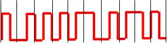
1>0111101100
2>1000010011
Какая битовая последовательность закодирована методом "Манчестер 2"?
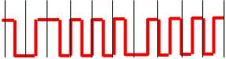
1>0100001111
2>1011110000
Какая битовая последовательность закодирована методом "Манчестер 2"?
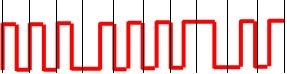
1>0001111011
2>1110000100
Какая битовая последовательность закодирована методом "MLT-3"?
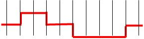
1>0101010001
Какая битовая последовательность закодирована методом "MLT-3"?
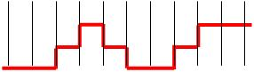
1>0011110110
Какая битовая последовательность закодирована методом "MLT-3"?
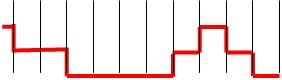
1>1010001111
Какая битовая последовательность закодирована методом "MLT-3"?
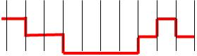
1>0101000111
Какая битовая последовательность закодирована методом "РАМ-5"?
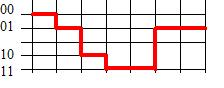
1>00011011110101
Какая битовая последовательность закодирована методом "РАМ-5"?
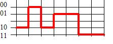
1>10001001011111
Какая битовая последовательность закодирована методом "РАМ-5"?
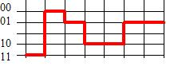
1>11000110100101
Выполнить скремблирование последовательности 10000001
с использованием сотношения:
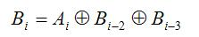
.
1>10111000
Выполнить скремблирование последовательности 11000001
с использованием сотношения:
.
1>11100100
Выполнить скремблирование последовательности 10010001
с использованием сотношения:
.
1>10101111
Выполнить скремблирование последовательности 11111001
с использованием сотношения:
.
1>11010110
Выполнить скремблирование последовательности 10011111
с использованием сотношения:
.
1>10100011
Выполнить скремблирование последовательности 01000010
с использованием сотношения:
.
1>01011110
Выполнить скремблирование последовательности 11111001
с использованием сотношения:
.
1>11010110
Выполнить скремблирование последовательности 01111110
с использованием сотношения:
1>01101001
Какими достоинствами обладает избыточное кодирование?
1>код становится самосинхронизирующимся
2>исчезает постоянная составляющая
3>увеличивается полезная пропускная способность канала связи
4>увеличивается скорость передачи данных
5>уменьшается пропускная способность канала связи
6>уменьшается спектр сигнала
Какими недостатками обладает избыточное кодирование?
1>уменьшается полезная пропускная способность канала связи
2>дополнительные затраты времени на реализацию кодирования
3>теряется самосинхронизация
4>исчезает постоянная составляющая
5>появляется постоянная составляющая
6>код становится самосинхронизирующимся
Как называется способ улучшения потенциальных кодов, основанный на предварительном "перемешивании" исходной информации по определенному алгоритму с целью исключения длинных последовательностей нулей или единиц?
1>скремблирование
2>скрэмблирование
3>scrambling
4>Скремблирование
5>Скрэмблирование
6>Scrambling
Каким преимуществом обладает скремблирование по сравнению с избыточным кодированием?
1>выше полезная пропускная способность канала связи
2>проще реализация
3>меньше временные затраты на реализацию
4>увеличивается недежность передачи данных
5>присутствует самосинхронизация
6>отсутствует самосинхронизация
7>увеличивается помехозащищенность
Каким недостатком обладает скремблирование по сравнению с избыточным кодированием?
1>нет гарантии исключения длинных последовательностей нулей или единиц
2>уменьшается полезная пропускная способность канала связи
3>уменьшается полоса пропускания канала связи
4>уменьшается скорость передачи данных
5>увеличивается число уровней сигнала
6>увеличивается полезная пропускная способность канала связи
Сколько избыточных (запрещённых) кодов содержится в методе логического кодирования 4В/5В?
1>16
Сколько избыточных (запрещённых) кодов содержится в методе логического кодирования 5В/6В?
1>32
Сколько избыточных (запрещённых) кодов содержится в методе логического кодирования 8В/10В?
1>768
Сколько избыточных (запрещённых) кодов содержится в методе логического кодирования 8В/6Т?
1>473
Чему равна избыточность (в процентах) логического кодирования 4В/5В?
1>25
Чему равна избыточность (в процентах) логического кодирования 5В/6В?
1>20
Чему равна избыточность (в процентах) логического кодирования 8В/10В?
1>25
Что такое FDM?
1>Частотное мультиплексирование
2>Временное мультиплексирование
3>Фазовое мультиплексирование
4>Волновое мультиплексирование
5>Дискретное мультиплексирование
6>Оптический цифровой модулятор
7>Фазовое дискретное мультиплексирование
Что такое TDM?
1>Временное мультиплексирование
2>Частотное мультиплексирование
3>Тройное мультиплексирование
4>Волновое мультиплексирование
5>Терминальное дискретное мультиплексирование
6>Троичная цифровая модуляция
7>Временная дискретная модуляция
Что такое WDM?
1>Волновое мультиплексирование
2>Частотное мультиплексирование
3>Временное мультиплексирование
4>Сложное мультиплексирование
5>Беспроводное мультиплексирование
6>Беспроводной цифровой мультиплексор
7>Удаленный цифровой мультиплексор
Какие методы мультиплексирования используются в современных вычислительных сетях?
1>частотное мультиплексирование
2>временное мультиплексирование
3>волновое мультиплексирование
4>амплитудное мультиплексирование
5>фазовое мультиплексирование
6>смешанное мультиплексирование
Какая англоязычная аббревиатура означает частотное мультиплексирование?
1>FDM
2>АВЬ
Какая англоязычная аббревиатура означает временно'е мультиплексирование?
1>TDM
2>ЕВЬ
Какая англоязычная аббревиатура означает волновое мультиплексирование?
1>WDM
2>ЦВЬ
Какие электрические кабели связи применяются в сетях передачи данных?
1>витая пара
2>коаксиальный кабель
3>многомодовый кабель
4>одномодовый кабель
5>информационный кабель
Что относится к характеристикам линии связи?
1>полоса пропускания
2>помехоустойчивость
3>удельная стоимость
4>пропускная способность
5>достоверность передачи данных
6>скорость модуляции
7>скорость передачи данных
8>спектр
В каких единицах измеряется затухание сигнала?
1>дБ
2>децибел
3>децибелы
В каких единицах измеряется импеданс?
1>Ом
2>ом
С какой целью применяется скручивание электрических проводников?
1>с целью уменьшения излучения и повышения помехозащищенности кабеля
2>с целью уменьшения импеданса и ёмкости
3>с целью увеличения долговечности кабеля
4>для удобства монтажа
5>для уменьшения диаметра кабеля
6>для увеличения плотности прокладки кабеля
Иерархическая кабельная система здания или группы зданий, разделенная на структурные подсистемы, называется ...
1>структурированной кабельной системой
2>иерархической кабельной системой
3>кабельной системой
4>структурной кабельной системой
5>локальной кабельной системой
6>линейной кабельной системой
7>структурно-иерархической кабельной системой
СКС - это ...
1>структурированная кабельная система
2>протокол Интернета
3>сетевая технология
4>скоростной канал связи
5>симметричный канал связи
6>контрольная сумма пакета
Какие недостатки присущи кабельным линиям связи (включая оптоволоконные)?
1>высокая стоимость арендуемых выделенных каналов
2>подверженность механическим воздействиям
3>невозможность организации мобильной связи
4>плохая помехозащищенность
5>большая вероятность перехвата передаваемых данных
6>низкая пропускная способность
Кабель витой пары какой категории (номер) применяется в настоящее время наиболее широко?
1>5
Какую полосу пропускания (в МГц) имеют электрические кабели 3-й категории?
1>16
Какую полосу пропускания (в МГц) имеют электрические кабели 5-й категории?
1>100
Расположите (пронумеруйте) кабели в порядке возрастания их качества для передачи данных.
1>неэкранированная витая пара
2>экранированная витая пара
3>тонкий коаксиальный кабель
4>толстый коаксиальный кабель
5>многомодовый кабель
6>одномодовый кабель
Расположите (пронумеруйте) кабели в порядке убывания их качества для передачи данных.
1>одномодовый
2>многомодовый
3>толстый коаксиальный
4>тонкий коаксиальный
5>экранированная витая пара
6>неэкранированная витая пара
Какая англоязычная аббревиатура используется для неэкранированной витой пары?
1>UTP
2>ГЕЗ
Какая англоязычная аббревиатура используется для электрического кабеля с одним общим экраном для всех витых пар?
1>FTP
Какая англоязычная аббревиатура используется для электрического кабеля с экранированием каждой витой пары и с общим экраном для всех пар?
1>STP
Какие кабели на основе витой пары относятся к экранированным?
1>FTP
2>STP
3>UTP
4>тонкий коаксиальный
5>толстый коаксиальный
6>одномодовый
7>многомодовый
Какие бывают типы коаксиального кабеля?
1>толстый
2>тонкий
3>UTP
4>STP
5>FTP
6>одномодовый
7>многомодовый
Что представляет собой кабель UTP?
1>Неэкранированная витая пара
2>Экранированная витая пара
3>Тонкий коаксиальный кабель
4>Толстый коаксиальный кабель
5>Волоконно-оптический кабель
6>Одномодовый кабель
7>Многомодовый кабель
Что представляет собой кабель STP?
1>Экранированная витая пара
2>Неэкранированная витая пара
3>Толстый коаксиальный кабель
4>Тонкий коаксиальный кабель
5>Волоконно-оптический кабель
6>Многомодовый кабель
7>Одномодовый кабель
Неэкранированная витая пара - это ...
1>UTP
2>FTP
3>STP
4>SDH
5>PDH
6>WAN
7>LAN
Экранированная витая пара - это ...
1>STP
2>FTP
3>SDH
4>PDH
5>ISO
6>OSI
7>STS
8>UTP
Оптическое волокно, в котором передается только один луч, называется ...
1>одномодовым
2>одномодовое
3>одномодовое волокно
Оптическое волокно, в котором передается несколько лучей, называется ...
1>многомодовым
2>многомодовое
Рассеяние во времени спектральных и модовых составляющих оптического сигнала называется ...
1>дисперсия
2>дисперсией
Как называется величина, обратная величине уширения импульса при прохождении им по оптическому волокну расстояния в 1 км?
*В качестве ответа введите два слова.
1>полоса пропускания
2>полосой пропускания
3>Полоса пропускания
4>Полосой пропускания
В каких единицах измеряется полоса пропускания оптического волокна?
1>МГц*км
2>МГц/км
3>МГц
4>Дб
5>Мбит/с
6>Мбайт/с
7>1/с
Какие достоинства присущи волоконно-оптическим кабелям?
1>высокая пропускная способность
2>отсутствие электромагнитного излучения
3>высокая помехоустойчивость
4>малый вес
5>высокое электрическое сопротивление, обеспечивающее гальваническую развязку
6>низкая стоимость сетевых устройств
7>простота монтажа
Какие недостатки присущи волоконно-оптическим кабелям?
1>трудоемкость монтажа, требующая специального оборудования
2>высокая стоимость сетевых устройств
3>низкая пропускная способность
4>наличие электромагнитного излучения
5>небольшое расстояние передачи
Какими достоинствами обладают одномодовые оптические волокна по сравнению с многомодовыми?
1>меньше затухание
2>больше полоса пропускания
3>меньше стоимость
4>проще ввести световой луч
5>более удобны при монтаже
Какими недостатками обладают одномодовые оптические волокна по сравнению с многомодовыми?
1>дороже многомодовых
2>труднее ввести световой луч
3>большое затухание
4>больший вес
5>меньше полоса попускания
Какими достоинствами обладают многомодовые оптические волокна по сравнению с одномодовыми?
1>более удобны при монтаже
2>дешевле
3>меньше затухание
4>больше полоса пропускания
5>меньше вес
Какими недостатками обладают многомодовые оптические волокна по сравнению с одномодовыми?
1>большое затухание
2>меньше полоса пропускания
3>дороже
4>труднее ввести световой луч
5>сложный монтаж
На каких длинах волн осуществляется передача сигналов по оптическому волокну?
1>0,85 мкм
2>1,31 мкм
3>1,55 мкм
4>0,55 мкм
5>2,40 мкм
6>5 мкм
На каких длинах волн не осуществляется передача сигналов по оптическому волокну?
1>2,95 мкм
2>1,85 мкм
3>0,55 мкм
4>0,85 мкм
5>1,31 мкм
6>1,55 мкм
Чему равен диаметр световодной жилы одномодового оптического волокна?
1>8-10 мкм
2>8-10 мм
3>8-10 нм
4>50-60 мкм
5>50-60 нм
6>125 мкм
7>125 нм
Чему равен диаметр световодной жилы многомодового оптического волокна?
1>50-60 мкм
2>50-60 нм
3>8-10 мкм
4>8-10 мм
5>8-10 нм
6>125 мкм
7>125 нм
В каких пределах находится затухание в оптических волокнах?
1>от 0,2 до 3 дБ/км
2>от 0,2 до 3 дБ/100 м
3>от 0,2 до 3 дБ/м
4>от 5 до 10 дБ/км
5>от 10 до 20 дБ/км
6>от 5 до 10 дБ/100 м
7>от 10 до 20 дБ/100 м
Чему равно значение длины волны L1 на графике, иллюстрирующем зависимость затухания от длины волны в оптическом волокне? Ответ укажите в микрометрах с точностью до второго знака после запятой.
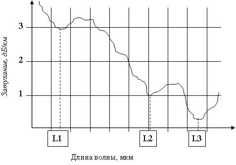
1>0,85
2>0.85
Чему равно значение длины волны L2 на графике, иллюстрирующем зависимость затухания от длины волны в оптическом волокне? Ответ укажите в микрометрах с точностью до первого знака после запятой.
1>1,31
2>1,3
3>1.3
4>1.31
5>1,30
6>1.30
Чему равно значение длины волны L3 на графике, иллюстрирующем зависимость затухания от длины волны в оптическом волокне? Ответ укажите в микрометрах с точностью до второго знака после запятой.
1>1.55
2>1,55
Чему равно значение длины волны L1 на графике, иллюстрирующем зависимость затухания от длины волны в оптическом волокне? Ответ укажите в нанометрах, округлив до целых
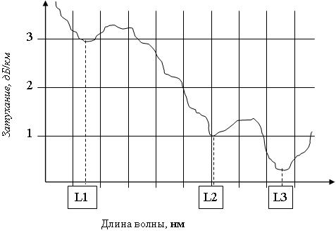
1>850
Чему равно значение длины волны L3 на графике, иллюстрирующем зависимость затухания от длины волны в оптическом волокне? Ответ укажите в нанометрах, округлив до целых.
1>1550
Чему равно значение длины волны L2 на графике, иллюстрирующем зависимость затухания от длины волны в оптическом волокне? Ответ укажите в нанометрах, округлив до целых.
1>1300
2>1310
ЭПИ в беспроводной системе связи - это ...
1>электромагнитное поле излучения
2>электрическая передача информации
3>электрическое поле индукции
4>электронный передатчик информации
5>эквивалентное преобразование информации
6>электрический первичный импульс
Какие фундаментальные физические процессы оказывают влияние на передачу ЭПИ?
1>отражение электромагнитного поля от Земли, зданий и т.п.
2>преломление его лучей в ионизированных слоях атмосферы
3>явление дифракции
4>явление дисперсии
5>изменение магнитного поля Земли
6>явление интерференции
7>апертура
Какое из утверждений является верным (f1, f2 - частота ЭПИ)?
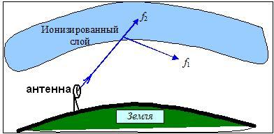
1> f1 < f2
2>f1 <= f2
3>f1 >= f2
4>f1 > f2
5>f1 = f2
6>f1 и f2 могут быть любыми
Как называется явление, показанное на рисунке?
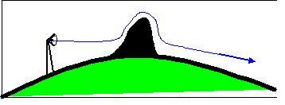
1>дифракция
2>дифракцией
Как называется луч, показанный на рисунке?
1>дифрагирующий
2>дифрагирующим
Как называется явление огибания препятствий ЭПИ?
1>дифракция
2>дифракцией
В каких случаях явление дифракции слабее (больше ослабление поля в точке приема)?
1>чем больше расстояние и чем больше частота
2>чем больше расстояние и чем меньше частота
3>чем меньше расстояние и чем больше частота
4>чем меньше расстояние и чем меньше частота
5>расстояние не влияет на дифракцию
6>частота не влияет на дифракцию
Как называется эффект замирания электромагнитного поля излучения?
1>фединг
2>федингом
3>fading
4>Fading
5>Фединг
6>Фейдинг
Что такое фединг (fading)?
1>эффект замирания электромагнитного поля излучения
2>эффект огибания препятствий электромагнитным полем излучения
3>эффект отражения электромагнитного поля излучения от Земли
4>эффект преломления электромагнитного поля излучения в ионизированных слоях атмосферы
5>эффект распространения электромагнитного поля излучения по дугам
6>эффект рассеяния электромагнитного поля излучения на малых неоднородностях атмосферы и ионосферы
7>эффект молекулярного поглощения электромагнитного поля излучения
Как называется явление распространения радиоволн не по прямым линиям, а по дугам?
1>рефракция
2>рефракцией
3>рефракции
Что такое рефракция?
1>эффект распространения электромагнитного поля излучения по дугам
2>эффект замирания электромагнитного поля излучения
3>эффект рассеяния электромагнитного поля излучения на малых неоднородностях атмосферы и ионосферы
4>эффект молекулярного поглощения электромагнитного поля излучения
5>эффект огибания препятствий электромагнитным полем излучения
6>эффект преломления электромагнитного поля излучения в ионизированных слоях атмосферы
7>эффект отражения электромагнитного поля излучения от Земли
Для каких радиоволн ионизированный слой атмосферы является практически "прозрачным"?
1>Для высокочастотных
2>Для среднечастотных
3>Для низкочастотных
4>Для длинных
5>Для любых
Какие радиоволны распространяются практически только в пределах прямой видимости?
1>Высокочастотные
2>Низкочастотные
3>Любые
4>Никакие
5>Среднечастотные
Какие достоинства присущи наземной радиосвязи?
1>невысокая стоимость передачи данных
2>возможность организации мобильной связи
3>возможность передачи данных на большие расстояния
4>хорошая защита передаваемых данных
5>высокая помехозащищённость
РРЛС - это ...
1>Радиорелейные линии связи
2>Разнораспределенные локальные сети
3>Радиораспостраненные локальныен сети
4>Районные радиальные линии связи
5>Радиально распределённые линии связи
На каких частотах работают цифровые радиорелейные линии связи?
1>От 30 ГГц до 300 ГГц
2>От 30 Гц до 300 Гц
3>От 30 кГц до 300 кГц
4>От 30 МГц до 300 МГц
5>От 30 Гц до 300 МГц
6>От 30 МГц до 300 ТГц
Какой принцип используют радиорелейные линии связи для передачи данных ?
1>ретрансляция
2>реляция
3>транслирование
4>дифракция
5>релейность
6>рефракция
На каком максимальном расстоянии (км) друг от друга могут быть расположены антенны РРЛС, высоты которых равны 100 м?
1>72
На каком максимальном расстоянии (км) друг от друга могут быть расположены антенны РРЛС, высоты которых равны 25 м?
1>36
На каком максимальном расстоянии (км) друг от друга могут быть расположены антенны РРЛС, высоты которых соответственно равны 100 м и 25 м?
1>54
На каком максимальном расстоянии (в метрах) друг от друга могут быть расположены антенны РРЛС, высоты которых соответственно равны 25 м и 100 м?
1>54000
На каком максимальном расстоянии (в метрах) друг от друга могут быть расположены антенны РРЛС, высоты которых соответственно равны 36 м и 16 м?
1>36000
На каком максимальном расстоянии (км) друг от друга могут быть расположены антенны РРЛС, высоты которых соответственно равны 9 м и 49 м?
1>36
На каком максимальном расстоянии (в метрах) друг от друга могут быть расположены антенны РРЛС, высоты которых соответственно равны 36 м и 25 м?
1>39600
Что означает аббревиатура VSAT в спутниковых системах связи?
1>Технология малоапертурных спутниковых терминалов
2>Системы с очень маленькими антеннами
3>Терминальное оборудование спутниковой связи
4>Виртуальные спутниковые сети
5>Высокоорбитальные космические станции
Чему равен радиус действия сетей на ИК-лучах?
1>Десятки метров
2>Несколько километров
3>Десятки километров
4>Не более одного метра
5>Сотни километров
6>Может быть любым
В каком диапазоне частот организована связь на ИК-лучах?
1>300-400 ТГц
2>300-400 МГц
3>300-400 кГц
4>30-40 кГц
5>30-40 МГц
6>1-10 ТГц
7>10-100 МГц
Как называется круговая экваториальная синхронная орбита с периодом обращения 24 ч?
1>геостационарная
2>геостационарной
Чему равен угол наклона плоскости геостационарной орбиты по отношению к плоскости экватора?
* Ответ укажите в градусах.
1>0
2>нулю
3>ноль
4>нуль
На какой высоте расположен геостационарный спутник?
1>36 000 км
2>36 км
3>300 км
4>3 600 км
5>1200 км
6>600 км
7>200 км
8>10 000 км
Чему равен период обращения геостационарного спутника?
1>24 часа
2>12 часов
3>1 час
4>6 часов
5>48 часов
6>36 часов
Связь с геостационарным спутником может осуществляться ...
1>Круглосуточно
2>12 часов в сутки
3>Только днём
4>Только ночью
5>В период его движения по видимой части орбиты
6>В период его движения по невидимой части орбиты
Основное достоинство высокоэллиптической орбиты.
1>Возможность организации радиосвязи в высоких широтах
2>Возможность организации радиосвязи на экваторе
3>Возможность организации круглосуточной радиосвязи
4>Возможность организации устойчивой радиосвязи
5>Не требуется отслеживать местонахождение спутника
6>Использование маломощного приёмопередающего оборудования
Как в спутниковых системах связи называется наиболее удаленная точка орбиты?
1>апогей
2>апогеем
3>Апогей
4>Апогеем
Как в спутниковых системах связи называется наименее удаленная точка орбиты?
1>перигей
2>перигеем
3>Перигей
4>Перигеем
На основе каких технологий могут быть реализованы цифровые транспортные системы?
1>PDH
2>SDH
3>АТМ
4>Ethernet
5>Token Ring
6>FDDI
7>X.25
8>MPLS
Какая англоязычная аббревиатура соответствует плезиохронной цифровой иерархии? (Английская раскладка клавиатуры)
1>PDH
2>pdh
Какая англоязычная аббревиатура соответствует синхронной цифровой иерархии? (Английская раскладка клавиатуры)
1>SDH
2>sdh
Что в PDH означает термин "плезиохронная"?
1>почти синхронная
2>асинхронная
3>многосинхронная
4>сохраняемая
5>изменяемая
6>несохраняемая
7>синхронизированная
Каково назначение аппаратуры Т1 в технологии PDH?
1>мультиплексирование, коммутирование и передача данных 24-х абонентов в цифровом виде
2>мультиплексирование, коммутирование и передача данных 24-х абонентов в аналоговом виде
3>мультиплексирование, коммутирование и передача данных 30-и абонентов в цифровом виде
4>мультиплексирование, коммутирование и передача данных 30-и абонентов в аналоговом виде
5>маршрутизация, кодирование и передача данных 24-х абонентов в цифровом виде
6>маршрутизация, кодирование и передача данных 30-и абонентов в цифровом виде
7>маршрутизация, кодирование и передача данных 24-х абонентов в аналоговом виде
8>маршрутизация, кодирование и передача данных 30-и абонентов в аналоговом виде
Сколько уровней мультиплексирования потоков реализовано в технологии PDH?
1>4
Какие каналы технологии PDH используются обычно на практике?
1>Т1/Е1
2>Т3/Е3
3>Т2/Е2
4>Т4/Е4
5>Т5/Е5
6>Т3/Е4
7>Т1/Е2
Какие функции реализуются аппаратурой Т1?
1>мультиплексирование цифровых данных
2>коммутация цифровых данных
3>передача цифровых данных
4>мультиплексирование аналоговых данных
5>коммутация аналоговых данных
6>дешифрация цифровых данных
7>кодирование цифровых данных
Какие недостатки присущи PDH?
1>сложность операций мультиплексирования и демультиплексирования
2>отсутствие встроенных процедур контроля и управления сетью, а также процедур поддержки отказоустойчивости
3>низкие по современным понятиям скорости передачи данных
4>большие задержки в каналах связи
5>низкая достоверность передачи
6>большая загрузка каналов
7>маленькая загрузка каналов
Что такое АТС?
1>Автоматическая телефонная станция
2>Асинхронные территориальные сети
3>Автоматические территориальные сети
4>Асинхронные телефонные сети
5>Асинхронные телефонные станции
6>Автоматизированные транспортные сети
7>Автоматические транспортные сети
Какие АТС относятся к электромеханическим?
1>декадно-шаговые
2>координатные
3>с программным управлением
4>квазиэлектронные
5>цифровые
6>импульсные
Что относится к АТС с программным управлением?
1>цифровые
2>квазиэлектронные
3>электромеханические
4>декадно-шаговые
5>координатные
6>частотные
Назначение модемов.
1>Модуляция и демодуляция сигналов
2>Мультиплексирование и демультиплексирование данных
3>Модуляция и кодирование данных
4>Преобразование последовательности байт в последовательность битов
5>Моделирование сигналов
Что из перечисленного не относится к модемам?
1>транспортные
2>магистральные
3>телеграфные
4>сотовые
5>кабельные
6>факс-модемы
7>телефонные
Какая максимальная скорость передачи обеспечивается при модемной связи?
1>56 кбит/с
2>12 кбит/с
3>24 кбит/с
4>48 кбит/с
5>560 кбит/с
6>512 кбит/с
7>1 Мбит/с
Что такое ISDN?
1>Цифровая сеть с интегральным обслуживанием
2>Цифровая сеть с интенсивным потоком данных
3>Интегративная сеть с цифровыми данными
4>Международная система цифровых сетей
5>Международная серверная сеть данных
6>Международная система доменных имён
Какая скорость обеспечивается в одном канале В в ISDN-сетях?
1>64 кбит/с
2>56 кбит/с
3>128 кбит/с
4>144 кбит/с
5>2048 кбит/с
6>1024 кбит/с
ISDN по сравнению с обычной модемной связью обеспечивает:
1>более высокую скорость передачи данных
2>более высокую надежность
3>более низкую стоимость
4>более высокую загрузку оборудования
5>меньшую загрузку оборудования
ISDN целесообразно применять в тех случаях, когда необходимо ...
1>периодически передавать средние и большие объемы данных на любые расстояния с высокой скоростью и надежностью
2>постоянно передавать средние и большие объемы данных на любые расстояния с высокой скоростью и надежностью
3>периодически передавать небольшие объемы данных на большие расстояния
4>периодически передавать большие объемы данных на маленькие расстояния
5>постоянно передавать небольшие объемы данных на любые расстояния
6>постоянно передавать небольшие объемы данных на большие расстояния с невысокой скоростью
Какие интерфейсы доступа к ISDN определяют стандарты?
1>BRI
2>PRI
3>B-ISDN
4>PDH
5>SDH
6>ATM
Какие интерфейсы доступа к ISDN определяют стандарты?
1>базовый
2>первичный
3>широкополосный
4>синхронный
5>асинхронный
6>цифровой
7>аналоговый
Какую пропускную способность (кбит/с) обеспечивает в ISDN интерфейс BRI?
1>144
Какую пропускную способность обеспечивает в ISDN интерфейс BRI?
1>144 кбит/с
2>144 Кбит/с
3>2048 Кбит/с
4>2048 кбит/с
5>64 кбит/с
6>64 Кбит/с
Какую пропускную способность обеспечивает в ISDN интерфейс РRI?
1>2048 кбит/с
2>2048 Кбит/с
3>144 кбит/с
4>64 кбит/с
5>144 Кбит/с
6>64 Мбит/с
Какие скорости передачи данных обеспечивает B-ISDN?
1>155 Мбит/с
2>622 Мбит/с
3>2,048 Мбит/с
4>2048 Мбит/с
5>2048 Кбит/с
6>144 Кбит/с
Что такое ADSL?
1>Асимметричная цифровая абонентская линия
2>Асинхронная цифровая абонентская линия
3>Асимметричная цифровая станция
4>Асимметричный поток данных
5>Асинхронная цифровая системная линия
6>Асимметричная двойная синхронная линия
Что такое xDSL?
1>цифровая абонентская линия
2>цифровая синхронная линия
3>цифровая асинхронная линия
4>цифровая симметричная линия
5>дуплексная симметричная линия
6>дуплексная синхронная линия
7>удалённый мультиплексор
Какая англоязычная аббревиатура означает асимметричную цифровую абонентскую линию, позволяющую передавать данные по телефонным каналам? (Переключить клавиатуру на английскую раскладку!)
1>ADSL
2>adsl
Какая технология обеспечивает по одной телефонной линии связи передачу цифровых данных со скоростями до нескольких десятков Мбит/с?
1>xDSL
2>обычная модемная
3>ISDN
4>Ethernet
5>Token Ring
6>TCP/IP
Какие протоколы канального уровня разработаны для выделенных линий связи?
1>SLIP
2>протоколы семейства HDLC
3>РРР
4>TCP
5>IP
6>UDP
7>CSMA/CD
8>CSMA/CA
Реализация какого протокола канального уровня показана на рисунке? (Англоязычная аббревиатура)
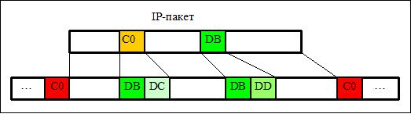
1>SLIP
2>slip
Какой протокол канального уровня для выделенных линий наиболее широко используется в современных сетях? (Англоязычная аббревиатура)
1>PPP
2>ppp
Какая англоязычная аббревиатура соответствует протоколу "точка-точка" канального уровня для выделенных линий?
1>PPP
2>ppp
3>РРР
Какая англоязычная аббревиатура соответствует мобильному коммутационному центру? (Английская раскладка клавиатуры)
1>MSC
2>msc
Какое поколение мобильной сотовой связи относится к аналоговой связи?
1>1G
2>1g
3>1 G
4>1 g
Укажите поколения мобильной сотовой связи. относящиеся к цифровой связи
1>2G
2>3G
3>4G
4>1G
Укажите стандарты мобильной сотовой связи первого поколения
1>AMPS
2>NMT
3>D-AMPS
4>GSM
5>CDMA
6>GPRS
7>EDGE
Укажите стандарты мобильной сотовой связи второго поколения
1>D-AMPS
2>GSM
3>CDMA
4>AMPS
5>NMT
6>GPRS
7>EDGE
Укажите стандарты мобильной сотовой связи 2.5G поколения
1>GPRS
2>EDGE
3>1xRTT
4>AMPS
5>NMT
6>D-AMPS
7>GSM
Укажите стандарты мобильной сотовой связи третьего поколения
1>UMTS
2>CDMA2000
3>WCDMA
4>AMPS
5>NMT
6>GSM
7>HSDPA
Укажите стандарт мобильной сотовой связи 3.5G поколения
1>HSDPA
2>WCDMA
3>CDMA
4>GPS
5>GPRS
6>UMTS
7>AMPS
Укажите стандарты мобильной сотовой связи четвертого поколения
1>WiMAX
2>LTE
3>GSM
4>GPRS
5>NMT
6>AMPS
7>EDGE
Какие компоненты содержит подсистема сетевой коммутации?
1>центр коммутации
2>домашний реестр местоположения
3>гостевой реестр местоположения
4>реестр идентификации оборудования
5>центр аутентификации
6>контроллер базовых станций
7>центр маршрутизации
Какие из перечисленных особенностей присущи ЛВС?
1>высокая пропускная способность
2>немодулированная передача данных
3>отсутствует маршрутизация
4>простые типовые топологии
5>низкая пропускная способность
6>используются статические алгоритмы маршрутизации
7>полносвязная или распределенные топологии
8>используются динамические алгоритмы маршрутизации
9>используется частотное мультиплексирование
Какие из перечисленных особенностей присущи ЛВС?
1>высокая пропускная способность
2>используется основополосная передача данных (baseband)
3>отсутствует маршрутизация
4>используется широкополосная передача данных (broadband)
5>низкая пропускная способность
6>используются распределенные алгоритмы маршрутизации
7>используетя распределенная топология с обязательным наличием альтернативных путей
8>используется модулированная передача данных
9>используются методы мультиплексирования
Какие из перечисленных особенностей не присущи ЛВС?
1>полносвязная или распределенная топологии
2>наличие разных видов маршрутизации
3>наличие аппаратуры передачи данных для модуляции сигнала
4>используется широкополосная передача
5>отсутствует маршрутизация
6>высокая пропускная способность
7>используется основополосная передача
8>не используется аппаратура передачи данных для модуляции сигнала
Какие функциии не относятся к магистральным функциям сетевого адаптера?
1>подсчет контрольной суммы кадра
2>кодирование и декодирование сигналов
3>преобразование кода из параллельного в последовательный и наоборот
4>обработка стробов обмена на магистрали (выработка внутренних управляющих сигналов)
5>электрическое буферирование сигналов магистрали
6>селекция (дешифрация) адреса
Какие функциии не относятся к сетевым функциям сетевого адаптера?
1>электрическое буферирование сигналов магистрали
2>обработка стробов обмена на магистрали (выработка внутренних управляющих сигналов)
3>кодирование сигналов
4>распознавание своего кадра при приеме
5>подсчет контрольной суммы кадра
Какие функциии относятся к сетевым функциям сетевого адаптера?
1>кодирование и декодирование сигналов
2>распознавание своего кадра при приеме
3>подсчет контрольной суммы кадра
4>преобразование кода из параллельного в последовательный и наоборот
5>обработка стробов обмена на магистрали (выработка внутренних управляющих сигналов)
6>электрическое буферирование сигналов магистрали
7>селекция или дешифрация адреса
В какой последовательности реализуются сетевым адаптером перечисленные функции при передаче кадра?
1>передача данных из ОЗУ ПК в буфер сетевого адаптера
2>разделение сообщения на кадры и добавление заголовка и концевика
3>доступ к среде передачи
4>преобразование данных из параллельной формы в последовательную
5>кодирование данных
6>передача импульсов
В какой последовательности реализуются сетевым адаптером перечисленные функции при приёме кадра?
1>прием импульсов
2>декодирование данных
3>преобразование данных из последовательной формы в параллельную
4>объединение кадров и формирование сообщения
5>передача данных из адаптера в память ПК
Как называется электрическое устройство, осуществляющее физическую передачу и прием сигналов в телекоммуникационной среде?
1>трансивер
2>ресивер
3>мультиплексор
4>терминатор
5>транслятор
6>синтезатор
7>концентратор
8>модулятор
9>кодек
Какие названия соответствуют методу передачи данных, при котором вся полоса пропускания используется для передачи только одного цифрового сигнала?
1>Основополосная передача
2>Немодулированная передача
3>Baseband networking
4>Широкополосная передача
5>Broadband networking
6>Модулированная передача
7>Передача несущей
8>Косвенная передача
9>Импульсная передача
Какие названия соответствуют методу передачи данных, основанному на частотном, временном или волновом уплотнении?
1>Broadband networking
2>Широкополосная передача данных
3>Baseband networking
4>Основополосная передача данных
5>Монополосная передача данных
6>Многопотоковая передача данных
7>Мультиполосная передача данных
8>Многопутевая передача данных
Какой метод физического кодирования используется в ЛВС Ethernet 10 Мбит/с?
1>Манчестерский
2>NRZ
3>RZ
4>MLT-3
5>PAM-5
6>AMI
7>NRZI
Какие методы физического кодирования используются в ЛВС Fast Ethernet?
1>NRZI
2>MLT-3
3>4B/5B
4>NRZ
5>Манчестерский
6>РАМ-5
7>RZ
Какие методы логического кодирования используются в ЛВС Fast Ethernet?
1>4В/5В
2>8В/6Т
3>8В/10В
4>Скремблирование
5>64В/65В
6>5В/6В
Какой метод физического кодирования используется в ЛВС Gigabit Ethernet?
1>PAM-5
2>AMI
3>Манчестерский
4>RZ
5>MLT-3
6>NRZ
Какие методы логического кодирования используются в ЛВС 10Gigabit Ethernet?
1>8B/10B
2>64B/66B
3>4B/5B
4>Скремблирование
5>5B/6T
6>8B/6T
Укажите методы кодирования, используемые в каждой из приведенных технологий ЛВС:
1>Ethernet:::Манчестерский
2>Fast Ethernet:::NRZI
3>Gigabit Ethernet:::PAM-5
4>10Gigabit Ethernet:::64B/66B
Укажите методы кодирования, используемые в каждой из приведенных технологий ЛВС:
1>Ethernet:::Манчестерское
2>Fast Ethernet:::8B/6T
3>Gigabit Ethernet:::PAM-5
4>10Gigabit Ethernet:::8B/10B
Укажите методы кодирования, используемые в каждой из приведенных технологий ЛВС:
1>Ethernet:::Манчестерское
2>Fast Ethernet:::MLT-3
3>Gigabit Ethernet:::PAM-5
4>10G Ethernet:::8B/10B
Какие топологии ЛВС получили наибольшее распространение?
1>Общая шина
2>Звезда
3>Кольцо
4>Полносвязная
5>Точка-точка
6>Распределённая
Какую топологию имеет сеть Ethernet в соответствии со спецификацией 10Base2?
1>Общая шина
2>Кольцо
3>Звезда
4>Дерево
5>Полносвязная
6>Распределная
Какую топологию имеет сеть Ethernet в соответствии со спецификацией 10Base5?
1>Общая шина
2>общая шина
Какую логическую топологию имеет сеть Token Ring?
1>Кольцо
2>кольцо
3>кольцевую
Какую физическую топологию имеет сеть FDDI?
1>Кольцо
2>Распределенную
3>Полносвязную
4>Звезда
5>Дерево
6>Произвольную
Для какого кабеля обеспечивается наименьшая длина сегмента ЛВС?
1>Неэкранированная витая пара
2>Экранированная витая пара
3>Тонкий коаксиальный кабель
4>Толстый коаксиальный кабель
5>Волоконно-оптический кабель
Для какого кабеля обеспечивается наибольшая длина сегмента ЛВС?
1>Волоконно-оптический кабель
2>Толстый коаксиальный кабель
3>Тонкий коаксиальный кабель
4>Экранированная пара
5>Неэкранированная витая пара
Для какого кабеля обеспечивается наибольшая длина сегмента ЛВС?
1>Толстый коаксиальный кабель
2>Тонкий коаксиальный кабель
3>UTP
4>STP
5>FTP
Для какого кабеля обеспечивается наименьшая длина сегмента ЛВС?
1>UTP
2>STP
3>FTP
4>Тонкий коаксиальный кабель
5>Толстый коаксиальный кабель
Для предотвращения отражения электрических сигналов в общей шине на каждом конце коаксиального кабеля устанавливают ...
1>Терминаторы
2>Концентраторы
3>Коммутаторы
4>Повторители
5>Разъёмы
6>Заглушки
Какое сетевое устройство используется в ЛВС типа 10Base-T и 100Base-TХ?
1>концентратор
2>терминатор
3>маршрутизатор
4>AUI
5>шлюз
6>активный монитор кольца
Какая сетевая технология может передавать кадры Ethernet и кадры Token Ring?
1>100VG-AnyLAN
2>Fast Ethernet
3>FDDI
4>Token Ring
5>Gigabit Ethernet
6>Frame Relay
7>X.25
Что означает слово "Base" в обозначении ЛВС 100Base-TX?
1>Данные при передаче не модулируются
2>В качестве базовой технологии испльзуется Ethernet
3>Используется широкополосная передача
4>Полоса пропускания используется для передачи нескольких сигналов с помощью одного из видов мультиплексирования
5>Несущая частота для сигнала выбирается так, чтобы обеспечить базовую скорость передачи 100 Мбит/с
6>В качестве базовой кабельной системы используется витая пара
Что означает слово "Base" в обозначении ЛВС 10Base-5?
1>Используется основополосная (монополосная) передача данных
2>Применяется принцип широкополосной передачи
3>По каналу связи передаются 5 сигналов, уплотненных с помощью TDM
4>Модулированный сигнал получен после выполнения частотного мультиплексирования
5>По каналу связи передаются 10 сигналов, уплотненных с помощью TDM
6>Несущая частота имеет значение 5МГц
Какую ЛВС описывает обозначение "10Base-2"?
1>Пропускная способность 10 Мбит/с
2>Используется тонкий коаксиальный кабель
3>Используется толстый коаксиальный кабель
4>Используется неэкранированная витая пара
5>Используется толстый оптоволоконный кабель
6>Пропускная способность 10 Гбит/с
7>Используется витая пара
8>Используется экранированная витая пара
Какую ЛВС описывает обозначение "10Base-5"?
1>Пропускная способность 10 Мбит/с
2>Используется толстый коаксиальный кабель
3>Используется трансиверный кабель
4>Используется неэкранированная витая пара
5>Используется толстый оптоволоконный кабель
6>Пропускная способность 10 Гбит/с
7>Используется витая пара
8>Используется экранированная витая пара
9>Используется тонкий коаксиальный кабель
Какую ЛВС описывает обозначение "10Base-T"?
1>Пропускная способность 10 Мбит/с
2>Используется витая пара
3>Используется тонкий коаксиальный кабель
4>Применяются Т-образные терминаторы
5>Используется оптоволоконный кабель
6>Пропускная способность 10 Гбит/с
7>Используется толстый коаксиальный кабель
Какую ЛВС описывает обозначение "100Base-FX"?
1>Пропускная способность 100 Мбит/с
2>Передача данных ведется по двум волокнам многомодового ВОК.
3>Используется тонкий коаксиальный кабель
4>Применяются Т-образные терминаторы
5>Используется витая пара
6>Пропускная способность 100 кбит/с
7>Используется толстый коаксиальный кабель
8>Пропускная способность 100 Гбит/с
Какую ЛВС описывает обозначение "100Base-ТX"?
1>Пропускная способность 100 Мбит/с
2>Используется витая пара
3>Используется тонкий коаксиальный кабель
4>Передача данных ведется по двум волокнам многомодового ВОК.
5>Используется оптоволоконный кабель
6>Пропускная способность 100 Гбит/с
7>Используется толстый коаксиальный кабель
8>Пропускная способность 100 кбит/с
Какую ЛВС описывает обозначение "100Base-Т4"?
1>Пропускная способность 100 Мбит/с
2>Используется витая пара
3>Используется тонкий коаксиальный кабель
4>Передача данных ведется по двум волокнам многомодового ВОК.
5>Используется оптоволоконный кабель
6>Пропускная способность 100 Гбит/с
7>Используется толстый коаксиальный кабель
Какую ЛВС описывает обозначение "1000Base-SX"?
1>Пропускная способность 1 Гбит/с
2>Используется оптоволоконный кабель
3>Используется тонкий коаксиальный кабель
4>Применена SX-развязка оптоволоконного кабеля
5>Используется толстый коаксиальный кабель
6>Пропускная способность 1000 кбит/с
7>Пропускная способность 1024 Мбит/с
8>Пропускная способность 1024 кбит/с
Какие технологии физического уровня обозначаются "Fast Ethernet"
1>100Base-ТX
2>100Base-Т4
3>100Base-FX
4>100VG-AnyLAN
5>10Base-FOIRL
6>10Base-Т
7>100Base-5
8>100Base-2
9>1000Base-SX
10>1000Base-LX
11>10Base-FX
Чему равно максимальное расстояние (в метрах) от рабочей станции до концентратора в стандартах 10Base-T и 100Base-TX?
1>100
Чему равно максимальное число рабочих станций в одном сегменте кабеля в соответствии со стандартом 10Base2?
1>30
2>10
3>20
4>50
5>100
6>1024
Чему равно максимальное число рабочих станций в одном сегменте кабеля в соответствии со стандартом 10Base5?
1>100
2>10
3>20
4>30
5>50
6>500
7>1024
Чему равна максимальная длина одного сегмента кабеля ЛВС в соответствии со стандартом 10Base2?
1>185 м
2>100 м
3>500 м
4>1000 м
5>2000 м
6>Не ограничена
7>200 м
Чему равна максимальная длина кабеля (в метрах) одного сегмента ЛВС в соответствии со стандартом 10Base5?
1>500
Чему равно максимальное число рабочих станций в одном домене коллизий ЛВС (Fast) Ethernet?
1>1024
2>10
3>100
4>185
5>500
6>1000
7>2048
За счет чего в ЛВС Gigabit Ethernet удалось обеспечить максимальный диаметр сети 200 м (при использовании одного повторителя)?
1>Минимальная длина кадра увеличена до 512 байт
2>Изменился метод доступа к среде передачи
3>Используются более мощные повторители
4>Используются более мощные коммутаторы
5>Используются новые методы кодирования
6>Реализуется поддержка только полнодуплексных каналов связи
7>Максимальная длина кадра увеличена до 8192 байт
Расстояние между двумя наиболее удаленными (крайними) станциями ЛВС называется ...
1>диаметр сети
2>диаметр
3>диаметром
4>диаметром сети
5>диаметром ЛВС
6>диаметр ЛВС
Какие называния используются для ЛВС с равноправными компьютерами, которые могут использовать общие ресурсы?
1>одноранговые
2>peer-to-peer
3>P2P
4>пиринговые
5>ранжированные
6>клиент-ориентированные
7>point-to-point
8>клиент-серверные
9>сервер-ориентированные
Какими достоинствами обладают одноранговые ЛВС?
1>умеренная стоимость
2>простота построения
3>нет необходимости в сетевом администрировании
4>удобство поддержки большого размера сети
5>нет необходимости обеспечиватьзащиту информации
6>хорошие возможности для расширения
Какие недостатки присущи одноранговым ЛВС?
1>небольшой размер сети
2>трудно обеспечить должную защиту информации
3>большая стоимость сети
4>сложность администрирования
5>сложность построения и эксплуатации
6>невозможность использования общих ресурсов
Какими достоинствами обладают ЛВС типа "клиент-сервер"?
1>высокая производительность за счет разделения ресурсов сети
2>эффективная организация резервного копирования данных
3>способность поддерживать работу в сети сотен и тысяч пользователей
4>хорошие возможности для расширения
5>возможность организации эффективной защиты данных
6>низкая стоимость
7>не требуется администрирование
8>простота построения
Какими недостатками обладают ЛВС типа "клиент-сервер"?
1>требуются постоянное квалифицированное обслуживание (администрирование)
2>высокая стоимость по сравнению с одноранговыми ЛВС
3>низкая производительность
4>невозможность организации эффективной защиты данных
5>небольшой размер сети
6>невозможность расширения сети
Какой метод доступа используется в сетях Ethernet 802.3?
1>CSMA/CD
2>CSMA/CА
3>CDMA
4>Маркерный
5>ETR
6>Тактированный
Сколько пакетов может передаваться в сегменте ЛВС с методом доступа CSMA/CD в один момент времени?
1>1
2>2
3>Равное количеству станций
4>Много
5>Не более 10
6>1024
CSMA/CD - это метод ...
1>множественного доступа с контролем несущей и обнаружением конфликтов
2>множественного случайного доступа
3>множественного доступа с контролем несущей и предотвращением конфликтов
4>множественного доступа тактированный
5>маркерного (управляемого) доступа
6>статической маршрутизации
7>динамической маршрутизации
CSMA/CА - это метод ...
1>множественного доступа с контролем несущей и предотвращением конфликтов
2>множественного доступа с контролем несущей и обнаружением конфликтов
3>множественного случайного доступа
4>множественного доступа тактированный
5>маркерного (управляемого) доступа
6>статической маршрутизации
7>динамической маршрутизации
Какой метод доступа используется в ЛВС Token Ring?
1>Маркерный
2>Случайный
3>CSMA/CD
4>CSMA/CA
5>FIFO
6>LIFO
Какой метод доступа используется в ЛВС FDDI?
1>Маркерный
2>CSMA/CD
3>CSMA/CA
4>CDMA
5>Случайный
6>FIFO
Что такое маркер в сетях Token Ring?
1>Кадр специального типа.
2>Повторитель.
3>Высокоскоростная технология Ethernet.
4>Быстродействующий компьютер.
5>Топология локальных вычислительных сетей.
6>Активный монитор кольца.
Какие пропускные способности обеспечиваются в ЛВС Token Ring?
1>4 Мбит/с
2>16 Мбит/с
3>25 Мбит/с
4>10 Мбит/с
5>100 Мбит/с
6>40 Мбит/с
7>4 Гбит/с
8>16 Гбит/с
Что представляет собой устройство множественного доступа MSAU?
1>Концентратор
2>Коммутатор
3>Маршрутизатор
4>Повторитель
5>Сетевой адаптер
6>Маркер
В каких сетях используются MSAU?
1>Token Ring
2>Ethernet
3>FDDI
4>X.25
5>Frame Relay
6>ATM
7>MPLS
Что используется в качестве среды передачи в сетях FDDI?
1>Волоконно-оптический кабель
2>Неэкранированная витая пара
3>Экранированная витая пара
4>Тонкий коаксиальный кабель
5>Толстый коаксиальный кабель
6>Любой кабель
Какая пропускная способность обеспечивается в ЛВС FDDI?
1>100 Мбит/с
2>10 Мбит/с
3>1 Мбит/с
4>16 Мбит/с
5>4 Мбит/с
6>1000 Мбит/с
7>1 Гбит/с
Чему равен межкадровый интервал в ЛВС Ethernet (в битовых интервалах)?
1>96
Чему равен межкадровый интервал (в микросекундах) в ЛВС Ethernet с пропускной способностью 10 Мбит/с?
1>9,6
2>9.6
Чему равен межкадровый интервал (в наносекундах) в ЛВС Ethernet с пропускной способностью 10 Мбит/с?
1>9600
Чему равен межкадровый интервал (в микросекундах) в ЛВС Ethernet с пропускной способностью 100 Мбит/с?
1>0,96
2>0.96
Чему равен межкадровый интервал (в наносекундах) в ЛВС Ethernet с пропускной способностью 100 Мбит/с?
1>960
Зачем нужен межкадровый интервал в семействе технологий Ethernet?
1>Для приведения сетевых адаптеров в исходное состояние
2>Для предотвращения монопольного захвата среды одной станцией
3>Для синхронизации кадров
4>Для отделения кадров друг от друга
5>Для подсчета контрольной суммы
6>Для предотвращения коллизий
7>Для синхронизации сетевых адаптеров
Кадр ЛВС (Fast) Ethernet остается не переданным рабочей станцией после ...
1>16 коллизий
2>2-й коллизии
3>10 коллизий
4>32 коллизий
5>Всегда будет передан
6>Не известно
Часть сети Ethernet, все узлы которой распознают коллизию, независимо от того, в какой части этой сети коллизия возникла, называется ... коллизий.
1>домен
2>доменом
Как называется кадр ЛВС Ethernet, вовлеченный в коллизию?
1>фрагмент кадра
2>испорченный кадр
3>коллизионный кадр
4>backoff-кадр
5>error-кадр
6>csma-кадр
7>MAC-кадр
8>неотправленный кадр
Станция ЛВС Ethernet считает, что она управляет сегментом кабеля, если ею уже передано более ... байт.
*В ответе укажите число
1>64
На какое максимальное время (мкс) может быть отложена передача кадра в ЛВС Fast Ethernet после второй коллизии?
1>20,48
2>20.48
На какое максимальное время (нс) может быть отложена передача кадра в ЛВС Fast Ethernet после второй коллизии?
1>20480
На какое максимальное время (мкс) может быть отложена передача кадра в ЛВС Fast Ethernet после третьей коллизии?
1>40,96
2>40.96
На какое максимальное время (нс) может быть отложена передача кадра в ЛВС Fast Ethernet после третьей коллизии?
1>40960
На какое максимальное время (мкс) может быть отложена передача кадра в ЛВС Fast Ethernet после четвертой коллизии?
1>81,92
2>81.92
На какое максимальное время (нс) может быть отложена передача кадра в ЛВС Fast Ethernet после четвертой коллизии?
1>81920
На какое максимальное время (мкс) может быть отложена передача кадра в ЛВС Ethernet (10 Мбит/с) после четвертой коллизии?
1>819,2
2>819.2
На какое максимальное время (нс) может быть отложена передача кадра в ЛВС Ethernet (10 Мбит/с) после четвертой коллизии?
1>819200
На какое максимальное время (мкс) может быть отложена передача кадра в ЛВС Ethernet (10 Мбит/с) после третьей коллизии?
1>409,6
2>409.6
На какое максимальное время (нс) может быть отложена передача кадра в ЛВС Ethernet (10 Мбит/с) после третьей коллизии?
1>409600
На какое максимальное время (мкс) может быть отложена передача кадра в ЛВС Ethernet (10 Мбит/с) после второй коллизии?
1>204,8
2>204.8
На какое максимальное время (нс) может быть отложена передача кадра в ЛВС Ethernet (10 Мбит/с) после второй коллизии?
1>204800
Чему равна длина поля адреса источника в кадре Ethernet 802.3? Ответ укажите в битах
1>48
Чему равна длина поля адреса назначения в кадре Ethernet 802.3? Ответ укажите в байтах
1>6
Чему равна длина поля адреса источника в кадре Gigabit Ethernet? Ответ укажите в байтах
1>6
Чему равна длина поля адреса источника в кадре Fast Ethernet? Ответ укажите в байтах
1>6
Чему равна длина поля адреса назначения в кадре Fast Ethernet? Ответ укажите в битах
1>48
Адрес назначения в кадре Ethernet имеет вид: 0C-21-00-04-B2-30. Этот адрес ...
1>уникальный
2>глобальный
3>может быть адресом отправителя
4>индивидуальный
5>локальный
6>групповой
7>не может быть адресом отправителя
8>ошибочный
9>широковещательный
Какие адреса являются групповыми глобальными?
1>21-A3-01-00-2B-CD
2>A9-D0-31-11-FF-00
3>FD-00-01-16-2C-57
4>12-A3-01-00-2B-CD
5>0A-03-21-00-5C-11
6>2E-F0-00-00-FF-D3
7>3F-00-02-00-77-12
8>07-BC-B1-05-99-16
Какие адреса являются групповыми локальными?
1>А3-00-12-48-С0-22
2>С7-01-00-53-00-02
3>АB-01-10-98-65-02
4>EF-BA-C0-55-00-14
5>А5-01-C2-D8-00-05
6>АA-BB-CC-DD-EE-FF
7>01-0D-00-58-00-14
8>0D-00-00-11-25-00
9>C9-44-88-D1-1A-20
Какие адреса являются уникальными глобальными?
1>20-00-02-17-С1-FE
2>C4-12-77-4D-00-09
3>A8-11-00-41-B0-00
4>CC-22-00-0D-00-50
5>02-52-71-4A-0B-0C
6>15-00-70-0D-01-33
7>77-00-77-01-00-77
8>0D-12-27-4B-04-04
9>0E-01-59-44-05-5A
Признаком чего является первый бит поля "адрес назначения" кадра Ethernet?
1>Адрес индивидуальный или групповой
2>Адрес универсвльный или локальный
3>Адрес физический или сетевой
4>IP-адрес или МАС-адрес
5>Адрес двоичный или восьмеричный
6>Контрольная сумма CRC-8 или CRC-32
Что указывается во втором бите поля "адрес назначения" кадра Ethernet?
1>Адрес универсальный или локальный
2>Адрес индивидуальный или групповой
3>Адрес локальный или сетевой
4>Адрес сетевой или транспортный
5>IP или МАС адрес
6>Реальный адрес или loopback
Адрес назначения в кадре 802.3 в шестнадцатеричном выражении равен FF-FF-FF-FF-FF-FF. Что это означает?
1>Кадр адресован всем компьютерам данной ЛВС
2>Адрес отправителя неизвестен
3>Адрес назначения неизвестен
4>Кадр адресован компьютеру, который его отправил
5>Кадр является локальным
6>Адрес назначения является универсальным
7>Не может быть адресом назначения
Какие поля содержит кадр ЛВС Ethernet II?
1>тип протокола
2>адрес назначения
3>адрес источника
4>контрольная сумма кадра
5>контрольная сумма заголовка
6>время жизни
7>приоритет
8>длина заголовка
9>преамбула
Чему равна максимальная длина поля данных кадра Ethernet (байт)?
1>1500
Каково назначение преамбулы кадра Ethernet?
1>Синхронизация рабочих станций ЛВС перед началом передачи
2>Начальная настройка ЛВС
3>Указание типа передаваемых кадров
4>Указание завершения передачи кадра
5>Разделение передаваемых кадров
6>Проверка кадра на наличие ошибок
7>Настройка сетевого адаптера
8>Заполнение интервала между передаваемыми кадрами
В каком диапазоне находится длина кадра Ethernet 802.3?
1>64 - 1518 байт
2>46 -1500 байт
3>46 -1518 байт
4>64 - 1500 байт
5>0 - 1500 байт
6>0 - 1518 байт
7>18 - 1518 байт
Для каких полей кадра Ethernet вычисляется значение CRC?
1>Адрес назначения
2>Адрес источника
3>Тип / Длина
4>Данные
5>Концевик
6>Преамбула
7>Межкадровый интервал
8>Контрольная сумма
9>Поле расширения
Чему равна длина контрольной суммы в кадре Ethernet 802.3? Ответ укажите в байтах.
1>4
На каком уровне (название) OSI-модели работают повторители?
1>физическом
2>на физическом
3>физический
4>Физический
На каком уровне (номер) OSI-модели работают повторители?
1>1
На каком уровне OSI-модели работают концентраторы?
1>Физическом
2>Канальном
3>Сетевом
4>Сеансовом
5>Прикладном
6>Представления
7>Транспортном
На каком уровне OSI-модели работают концентраторы?
1>1
2>2
3>3
4>4
5>5
6>6
7>7
На каком уровне OSI-модели реализуются методы управления доступом в ЛВС?
1>2
2>1
3>3
4>4
5>5
6>6
7>7
На каком уровне OSI-модели реализуются методы управления доступом в ЛВС?
1>Канальном
2>Физическом
3>Прикладном
4>Сетевом
5>Представления
6>Транспортном
7>Сеансовом
На каких уровнях OSI-модели работают коммутаторы ЛВС?
1>Физический
2>Канальный
3>Сетевой
4>Сеансовый
5>Прикладной
6>Представления
7>Транспортный
На каких уровнях OSI-модели работают мосты?
1>Физический
2>Канальный
3>Сетевой
4>Сеансовый
5>Прикладной
6>Представления
7>Транспортный
На каких уровнях OSI-модели работают маршрутизаторы?
1>Физический
2>Канальный
3>Сетевой
4>Сеансовый
5>Прикладной
6>Представления
Repeater - это ...
1>повторитель
2>Повторитель
Router - это ...
1>маршрутизатор
2>Маршрутизатор
Hub - это ...
1>концентратор
2>Концентратор
Switch - это...
1>коммутатор
2>Коммутатор
Nibble - это
1>полубайт (4 бит)
2>адрес скрытой сети
3>полубит
4>усеченный кадр
5>фрагмент кадра
6>служебный пакет
7>слово длиной 32 бита
8>часть пакета
9>часть кадра
Token в сетях Token Ring - это ...
1>маркер
2>Маркер
Назовите преимущества беспроводных ЛВС по сравнению с проводными
1>проще и дешевле разворачивать и модифицировать
2>обеспечивается мобильность пользователей
3>высокая помехоустойчивость
4>четко определенная зона покрытия
5>отсутствует проблема "скрытого терминала"
6>высокая надежность
7>невозможность несанкционированного доступа
8>равномерная зона покрытия
Какая беспроводная технология наиболее эффективна при построении персональных сетей?
1>Bluetooth
2>bluetooth
3>Идгуещщер
Укажите методы расширения спектра, применяемые в беспроводных ЛВС
1>FHSS
2>DSSS
3>CSMA/CD
4>CSMA/CA
5>OFDN
6>OFOM
7>FSSS
8>DHSS
9>FDMA
В чем суть технологии OFDM?
1>Битовый поток разделяется на подпотоки, каждый из которых модулируется своей несущей частотой
2>Несколько битовых потоков объединяются в один поток, который передается на заданной частоте
3>Частота несущей меняется случайным образом на основе псевдослучайной последовательности
4>Каждый "единичный" бит заменяется двоичной последовательностью из N бит, а каждый "нулевой" бит кодируется инверсным значением расширяющей последовательности.
5>Несколько потоков объединяются на основе одной несущей
6>Каждый узел использует некоторую расширяющую последовательность, которая позволяет выделить данные из суммарного сигнала.
7>Частота несущей меняется на основе известной для отправителя и получателя последовательности
8>Каждый "нулевой" бит заменяется двоичной последовательностью из N бит, а каждый "единичный" бит кодируется инверсным значением расширяющей последовательности.
При передаче данных в беспроводной сети через один канал связи каждый узел сети использует собственную расширяющую последовательность, которая выбирается так, чтобы принимающий узел мог выделить данные из суммарного сигнала. В какой технологии используется этот принцип?
1>CDMA
2>OFDM
3>FHSS
4>DSSS
5>CSMA
6>UGRS
7>DHSP
8>PPTP
При передаче данных в беспроводной сети частота несущей меняется случайным образом на основе псевдослучайной последовательности. В какой технологии используется этот принцип?
1>FHSS
2>DSSS
3>CDMA
4>CSMA
5>TDM
6>OFDM
7>TDMA
8>DHSS
9>FDSS
Каждый "единичный" бит заменяется двоичной последовательностью из N бит, а каждый "нулевой" бит кодируется инверсным значением расширяющей последовательности. В какой технологии используется этот принцип?
1>DSSS
2>OFDM
3>CDMA
4>CSMA
5>TDM
6>FHSS
7>DHSS
8>DFSS
9>TDMA
10>FDMA
Какую технологию иллюстрирует рисунок?
*В качестве ответа введите англоязычную аббревиатуру.
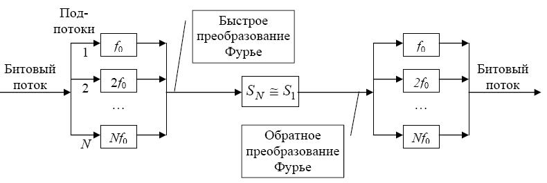
1>OFDM
2>ofdm
3>Ofdm
4>ЩАВЬ
Какую технологию иллюстрирует рисунок?
*В качестве ответа введите англоязычную аббревиатуру.
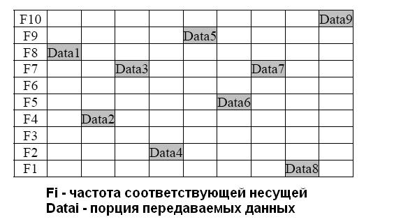
1>FHSS
2>fhss
3>Fhss
4>АРЫЫ
Выберите правильные утверждения?
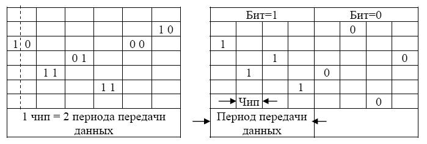
1>Рисунок иллюстрирует технологию расширения спектра
2>На левом рисунке показана реализация медленного расширения спектра, а на правом - быстрого расширения спектра
3>Это метод FHSS
4>Рисунок иллюстрирует технологию увеличения полосы пропускания
5>На левом рисунке показана реализация быстрого расширения спектра, а на правом - медленного расширения спектра
6>На левом рисунке показана реализация медленного увеличения полосы пропускания, а на правом - быстрого увеличения полосы пропускания
7>На левом рисунке показана реализация быстрого увеличения полосы пропускания, а на правом - медленного увеличения полосы пропускания
8>Это метод DSSS
9>Это метод OFDM
10>Это метод FDSS
Какую технологию иллюстрирует рисунок?
*В качестве ответа введите англоязычную аббревиатуру.
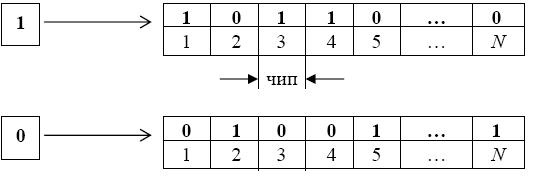
1>DSSS
2>dsss
3>Dsss
4>ВЫЫЫ
Перечислите особенности технологии Bluetooth (IEEE 802.15.1)
1>кадры имеют длину до 343 байт;
2>одновременно взаимодействовать могут не более 8 устройств
3>диапазон частот в районе 2.4 ГГц
4>количество устройств в сети до 255
5>Bluetooth – это технология для построения персональных сетей
6>количество устройств в сети не ограничено
7>количество активных устройств - до 255
8>скорость передачи - 723 Мбит/с
9>диапазон частот в районе 2.4 МГц
10>диапазон частот от 10 до 60 ГГц
11>область покрытия до 1000 м
12>Bluetooth – это технология для построения сенсорных сетей
13>Bluetooth – это технология для построения ЛВС
Как назвается семейство стандартов IEEE 802.11?
1>WiFi
2>WiMAX
3>Token Ring
4>Bluetooth
5>PAN
6>Ethernet
7>FHSS
8>DSSS
9>OFDM
10>CDMA
11>ZigBee
Как назвается семейство стандартов IEEE 802.15.1?
1>Bluetooth
2>WiMAX
3>Token Ring
4>WiFi
5>PAN
6>Ethernet
7>FHSS
8>DSSS
9>OFDM
10>CDMA
11>ZigBee
Как назвается семейство стандартов IEEE 802.15.4?
1>ZigBee
2>WiMAX
3>Token Ring
4>Bluetooth
5>PAN
6>Ethernet
7>FHSS
8>DSSS
9>OFDM
10>CDMA
11>WiFi
Как назвается семейство стандартов IEEE 802.16?
1>WiMAX
2>ZigBee
3>Token Ring
4>Bluetooth
5>PAN
6>Ethernet
7>FHSS
8>DSSS
9>OFDM
10>CDMA
11>WiFi
Основное преимущество коммутатора по сравнению с маршрутизатором.
1>Меньшая задержка блоков данных
2>Большой буфер
3>Большая скорость записи в буфер
4>Большая надёжность
5>Маленький буфер
6>Высокая эффективность маршрутизации
В чем состоят недостатки сетевых мостов по сравнению с маршрутизаторами?
1>мосты не могут использовать несколько маршрутов для доставки кадров
2>мосты не могут предотвращать "широковещательные штормы"
3>мосты не могут работать на канальном уровне OSI-модели
4>мосты существенно дороже маршрутизаторов
5>мосты не могут объединять сети, работающие с разными протоколами сетевого уровня
Какие типы сетевых мостов существуют?
1>прозрачные
2>транслирующие
3>инкапсулирующие
4>транспонирующие
5>призрачные
6>с маршрутизацией без источника
7>ингибирующие
8>инспирирующие
Какие мосты предназначены для непосредственного объединения сетей с идентичными протоколами на канальном и физическом уровнях?
1>Прозрачные.
2>Инкапсулирующие.
3>С маршрутизацией вне источника.
4>Транслирующие.
5>Транспонирующие.
6>С маршрутизацией по TCP.
7>Инспирирующие.
8>Призрачные.
Какие мосты предназначены для объединения сетей с разными протоколами на канальном и физическом уровнях.
1>Транслирующие.
2>Призрачные.
3>С маршрутизацией к источнику.
4>Прозрачные.
5>Транспонирующие.
6>С маршрутизацией по TCP.
7>Инспирирующие.
Какие мосты предназначены для объединения сетей с одинаковыми протоколами канального и физического уровня через высокоскоростную магистральную сеть с другими протоколами.
1>Инкапсулирующие.
2>Транслирующие.
3>С маршрутизацией через источник.
4>Прозрачные.
5>Транспонирующие.
6>С маршрутизацией по TCP.
7>Инспирирующие.
8>Призрачные.
Для чего используется алгоритм покрывающего дерева (Spanning Tree Algorithm - STA) в ЛВС на основе мостов или коммутаторов?
1>Для исключения зацикливания кадров в сети при наличии в ней нескольких марштутов.
2>Для построения покрывающего дерева, исключающего петли в топологии сети
3>Для предотвращения зацикливания кадров в сети при отсутствии в ней нескольких марштутов.
4>Для построения покрывающего дерева, использующего петли в топологии сети для передачи данных
5>Для обеспечения зацикливания кадров в сети при наличии в ней нескольких марштутов.
6>Для построения циклической топологии из покрывающего дерева исходной топологии.
Отметьте присущие маршрутизатору свойства.
1>Маршрутизатор работает на сетевом уровне OSI-модели
2>У каждого интерфейса маршрутизатора есть IP-адрес
3>У каждого интерфейса маршрутизатора есть МАС-адрес
4>Маршрутизатор имеет один МАС-адрес вне зависимости от количества интерфейсов
5>Маршрутизатор имеет один IP-адрес вне зависимости от количества интерфейсов
6>Марштутизатор не имеет MAC-адреса
7>Марштутизатор не имеет IP-адреса
Укажите отличительные особенности магистральных марштутизаторов с распределенной архитектурой (по сравнению с другими видами маршрутизаторов)
1>имеют модульную конструкцию, и каждый модуль маршрутизатора снабжен собственным процессором
2>возможна замена модулей марштутизатора в "горячем" режиме (без выключения питания)
3>используются избыточные источники питания
4>используются для объединения удаленных локальной сети офиса некоторой компании с центральной сетью этой компании
5>имеют один резервный порт для коммутируемого соединения
Выбор наиболее подходящего пути передачи пакетов - это...
1>Маршрутизация.
2>Ранее освобождение маркера.
3>Коллизия.
4>Инкапсуляция.
5>Девиация.
6>Верификация
Как называется вид маршрутизации, при котором устройство-источник инициализирует обнаружение маршрута, посылая специальный исследовательский кадр, который по достижении станции назначения содержит в специальном конверте все промежуточные точки маршрута.
1>Марштутизация от источника
2>Статическая маршрутизация
3>Динамическая маршрутизация
4>Внутренняя маршрутизация
5>Внешняя маршрутизация
6>Маршрутизация типа "вектор-длина" (DVA)
7>Маршрутизация с информацией о состоянии каналов (LSA)
Как называется вид маршрутизации, при котором пакеты передаются по определенному пути, установленному администратором и не изменяемому в течение длительного времени
1>Статическая маршрутизация
2>Марштутизация от источника
3>Динамическая маршрутизация
4>Внутренняя маршрутизация
5>Внешняя маршрутизация
6>Маршрутизация типа "вектор-длина" (DVA)
7>Маршрутизация с информацией о состоянии каналов (LSA)
Как называется вид маршрутизации, при котором маршрутные таблицы строятся в пределах так называемой автономной системы (autonomous system).
1>Внутренняя маршрутизация
2>Марштутизация от источника
3>Динамическая маршрутизация
4>Статическая маршрутизация
5>Внешняя маршрутизация
6>Маршрутизация типа "вектор-длина" (DVA)
7>Маршрутизация с информацией о состоянии каналов (LSA)
Как называется вид маршрутизации, который используется для обмена маршрутной информацией между различными автономными системами (autonomous system).
1>Внешняя маршрутизация
2>Марштутизация от источника
3>Динамическая маршрутизация
4>Статическая маршрутизация
5>Внутренняя маршрутизация
6>Маршрутизация типа "вектор-длина" (DVA)
7>Маршрутизация с информацией о состоянии каналов (LSA)
Как называется вид маршрутизации, при котором маршрутизаторы периодически (даже если в сети не происходит изменений) посылают широковещательные пакеты с таблицами маршрутизации, содержащими иноформацию об адресах подключенных сетей и расстояниях до них.
1>Маршрутизация по алгоритму DVA
2>Марштутизация от источника
3>Марштутизация к источнику
4>Статстическая маршрутизация
5>Марштутизация по протоколоу OSPF
6>Марштутизация по протоколоу IS-IS
7>Маршрутизация с информацией о состоянии каналов (LSA)
Как называется вид маршрутизации, при котором при изменении состояния своих каналов маршрутизатор немедленно распространяет соответствующую информацию по сети всем остальным маршрутизаторам, которые, получив сообщения, обновляют свои карты сети и заново вычисляют кратчайшие пути во все точки назначения.
1>Маршрутизация по алгоритму LSA
2>Марштутизация от источника
3>Вероятностная маршрутизация
4>Статистическая маршрутизация
5>Маршрутизация по протоколу RIP
6>Маршрутизация типа "вектор-длина" (DVA)
7>Марштутизация к источнику
Как называется совокупность сетей и/или маршрутизаторов с единым административным подчинением, которые используют для марштутизации один протокол IGP?
1>Автономная система (аutonomous system)
2>Административная система (administrative system)
3>Независимая система (independent system)
4>Независимая сеть (Autonomous network)
5>Подчиненная сеть (dependent network)
6>Административная сеть (administrative network)
7>Корпоративная сеть (corporate network)
Сколько IP-адресов может иметь компьютер?
1>По числу ЛВС, к которым подсоединен компьютер
2>Только 1
3>Не более двух
4>По числу компьютеров в сети
5>По числу серверов
6>По числу коммутаторов в сети
Что не является корректным IPv4-адресом?
1>192.164.265.34
2>127.1.2.3
3>245.11.25.2
4>199.255.255.2
5>5.64.111.255
6>13.0.0.13
7>145.1.0.1
8>126.14.65.3
Что не является корректным IPv4-адресом?
1>01-05-64-А1-В0-99
2>220.22.291.17
3>112.3А.64.77
4>124.45.56.67
5>7.17.71.77
6>15.15.15.15
7>1.2.3.4
8>9.0.0.1
Какую длину в байтах имеет адрес IPv4?
1>4
Какую длину в битах имеет адрес IPv4?
1>32
Чему равен минимальный размер заголовка IPv4-пакета? Ответ укажите в байтах.
1>20
Чему равен минимальный размер заголовка IPv4-пакета? Ответ укажите в битах.
1>160
Чему равен максимальный размер заголовка IPv4-пакета? Ответ укажите в байтах.
1>60
Чему равен максимальный размер заголовка IPv4-пакета? Ответ укажите в битах.
1>480
Чему равен максимальный размер IPv4-пакета?
1>65535 байт
2>32768 байт
3>64 кбайт
4>32 кбайт
5>16 кбайт
6>8 кбайт
7>Не ограничен
8>16383
Какой метод адресации в настоящее время наиболее распространен и используется в Интернет?
1>бесклассовая адресация (CIDR)
2>адресация по классу 'A'
3>адресация по классу 'B'
4>классовая адресация
5>адресация по классу 'C'
6>вариативная адресация
Чему равна минимальная длина заголовка пакета IPv4 (в байтах)?
1>20
Чему равна минимальная длина заголовка пакета IPv4 (в 32-битовых словах)?
1>5
Чему равна максимальная длина заголовка пакета IPv4 (в байтах)?
1>60
Чему равна максимальная длина заголовка пакета IPv4 (в 32-битовых словах)?
1>15
Сколько уровней приоритета может иметь пакет IPv4?
1>8
Чему равна максимальная длина пакета IPv4 (в байтах)?
1>65535
Чему равно максимальное время жизни пакета IPv4 (выраженное в единицах, задаваемых полем TTL)?
1>255
Чему равно максимальное количество маршрутизаторов на пути пакета IPv4?
1>255
Сколько бит отведено в заголовке пакета IPv4 под поле "Время жизни (TTL)"?
1>8
Сколько байт отведено в заголовке пакета IPv4 под поле "Время жизни (TTL)"?
1>1
Сколько бит отведено в заголовке пакета IPv4 под поле "Адрес источника"?
1>32
Сколько байт отведено в заголовке пакета IPv4 под поле "Адрес источника"?
1>4
Сколько бит отведено в заголовке пакета IPv4 под поле "Адрес назначения"?
1>
Сколько байт отведено в заголовке пакета IPv4 под поле "Адрес назначения"?
1>4
Какое утверждение по отношению к пакету IPv4 является правильным?
1>Контрольная сумма рассчитывается только для заголовка пакета
2>Контрольная сумма рассчитывается для всего пакета
3>Контрольная сумма рассчитывается только для поля данных пакета
4>Контрольная сумма не рассчитывается
5>Контрольная сумма рассчитывается для первых 20 байтов заголовка пакета, за исклюением поля TTL
6>Контрольная сумма рассчитывается только для заголовка пакета, за исключением адресов источника и назначения
Какое утверждение по отношению к пакету IPv4 является правильным?
1>Контрольная сумма заголовка пересчитывается в каждом маршрутизаторе
2>Контрольная сумма заголовка пересчитывается только в начальном и конечном маршрутизаторах
3>Контрольная сумма заголовка не рассчитывается
4>Контрольная сумма заголовка пересчитывается только в начальном и конечном хостах (компьютерах)
5>Контрольная сумма заголовка пересчитывается только в конечном маршрутизаторе
Какие утверждения по отношению к пакету IPv4 являются правильными?
1>Контрольная сумма рассчитывается только для заголовка пакета
2>Контрольная сумма заголовка пересчитывается в каждом маршрутизаторе
3>В каждом маршрутизаторе из поля "время жизни" вычитается по единице
4>Контрольная сумма рассчитывается для всего пакета
5>Контрольная сумма заголовка пересчитывается только в конечном маршрутизаторе
6>В каждом маршрутизаторе в поле "время жизни" добавляется по единице
Чему равно максимальное количество сетей класса 'A' (без учета loopback)?
1>126
Чему равно максимальное количество хостов в сети класса 'C'?
1>254
Чему равно максимальное количество хостов в сети класса 'B'?
1>65534
Установите соответствие между IP-адресом хоста и классом сети, к которому он относится
1>13.2.0.10:::класс 'A'
2>140.0.101.34:::класс 'B'
3>192.168.3.5:::класс 'C'
4>224.1.1.7:::Multicast
5>127.0.0.1:::loopback
Установите соответствие между IP-адресом хоста и классом сети, к которому он относится
1>100.54.11.69:::класс 'A'
2>188.92.81.14:::класс 'B'
3>202.255.4.19:::класс 'C'
4>230.56.3.103:::Multicast
5>127.34.205.100:::loopback
Какой вид может иметь маска для сетей класса 'А'?
1>255.0.0.0
2>/8
3>FF00000016
4>111111111000000000000000000000002
5>255.255.0.0
6>FF.FF.00.00
7>/16
8>1F.00.00.00
9>F1.00.00.00
Какой вид может иметь маска для сетей класса 'А'?
1>111111110000000000000000000000002
2>/8
3>77.00.00.00
4>256.0.0.0
5>255.255.0.0
6>FFFF000016
7>/24
Какой вид может иметь маска для сетей класса 'B'?
1>255.255.0.0
2>/16
3>FFFF000016
4>111111111111110000000000000000002
5>256.256.0.0
6>FFFFFF0016
7>/8
Какой вид может иметь маска для сетей класса 'B'?
1>111111111111111100000000000000002
2>/16
3>FFFFFF0016
4>256.256.0.0
5>256.0.0.0
6>FFFF800016
7>/8
Какой вид может иметь маска для сетей класса 'C'?
1>255.255.255.0
2>FFFFFF0016
3>111111111111111111111111000000002
4>FFFF000016
5>255.255.0.0
6>/16
7>/8
Какой вид может иметь маска для сетей класса 'C'?
1>FFFFFF0016
2>/24
3>111111111111111100000000000000002
4>256.256.256.0
5>256.256.0.0
6>FFFF000016
7>/8
Сколько узлов (хостов) может иметь сеть с адресом 128.0.0.0 при классовой адресации?
1>65534
Сколько узлов (хостов) может иметь сеть с адресом 190.0.0.0 при классовой адресации?
1>65534
Сколько узлов (хостов) может иметь сеть с адресом 192.168.0.0 при классовой адресации?
1>254
Сколько узлов (хостов) может иметь сеть с адресом 222.65.0.0 при классовой адресации?
1>254
Чему равно максимальное количество хостов в сети с маской 255.255.255.252?
1>2
Чему равно максимальное количество хостов в сети с маской 255.255.255.248?
1>6
Чему равно максимальное количество хостов в сети с маской 255.255.255.240?
1>14
Чему равно максимальное количество хостов в сети с маской 255.255.255.224?
1>30
Чему равно максимальное количество хостов в сети с маской 255.255.255.192?
1>62
Чему равно максимальное количество хостов в сети с маской 255.255.255.128?
1>126
Чему равно максимальное количество хостов в сети с маской 255.255.255.0?
1>254
Чему равно максимальное количество хостов в сети с маской 255.255.254.0?
1>510
Чему равно максимальное количество хостов в сети с маской 255.255.252.0?
1>1022
Чему равно максимальное количество хостов в сети с маской 255.255.248.0?
1>2046
Чему равно максимальное количество хостов в сети с маской 255.255.240.0?
1>4094
Чему равно максимальное количество хостов в сети с маской 255.255.224.0?
1>8190
Чему равно максимальное количество хостов в сети с маской 255.255.192.0?
1>16382
Чему равно максимальное количество хостов в сети с маской 255.255.128.0?
1>32766
Чему равно максимальное количество хостов в сети с маской 255.255.0.0?
1>65534
Чему равно максимальное количество хостов в сети с маской /30?
1>2
Чему равно максимальное количество хостов в сети с маской /29?
1>6
Чему равно максимальное количество хостов в сети с маской /28?
1>14
Чему равно максимальное количество хостов в сети с маской /27?
1>30
Чему равно максимальное количество хостов в сети с маской /26?
1>62
Чему равно максимальное количество хостов в сети с маской /25?
1>126
Чему равно максимальное количество хостов в сети с маской /24?
1>254
Чему равно максимальное количество хостов в сети с маской /23?
1>510
Чему равно максимальное количество хостов в сети с маской /22?
1>1022
Чему равно максимальное количество хостов в сети с маской /21?
1>2046
Чему равно максимальное количество хостов в сети с маской /20?
1>4094
Чему равно максимальное количество хостов в сети с маской /19?
1>8190
Чему равно максимальное количество хостов в сети с маской /18?
1>16382
Чему равно максимальное количество хостов в сети с маской /17?
1>32766
Чему равно максимальное количество хостов в сети с маской /16?
1>65534
Укажите корректные адреса подсетей при использовании беcклассовой адресации (CIDR) с соответствующими масками.
1>192.168.255.0/24
2>192.168.0.0/16
3>192.168.207.0/16
4>192.168.56.100/24
5>192.168.0.0/8
6>192.168.8.0/24
7>192.168.13.0/8
Укажите корректные адреса подсетей при использовании беcклассовой адресации (CIDR) с соответствующими масками.
1>192.168.254.0/23
2>192.168.192.0/18
3>192.168.207.224/29
4>192.168.253.0/20
5>192.168.88.0/17
6>192.168.8.100/28
7>192.168.100.100/13
Укажите корректные адреса подсетей при использовании беcклассовой адресации (CIDR) с соответствующими масками.
1>10.56.12.4/30
2>10.0.128.0/19
3>10.11.117.0/22
4>10.0.0.1/8
5>10.0.1.0/17
6>10.168.5.200/25
Укажите корректные адреса подсетей при использовании беcклассовой адресации (CIDR) с соответствующими масками.
1>10.0.0.16/29
2>10.0.0.0/9
3>10.59.192.0/19
4>10.62.5.109/30
5>10.233.0.0/10
6>10.168.100.0/20
Укажите корректные адреса подсетей при использовании беcклассовой адресации (CIDR) с соответствующими масками.
1>172.16.24.0/13
2>172.30.0.0/15
3>172.21.0.100/25
4>172.17.0.0/10
5>172.27.41.0/20
6>172.30.0.0/11
Укажите корректные адреса подсетей при использовании беcклассовой адресации (CIDR) с соответствующими масками.
1>172.22.0.0/18
2>172.25.8.8/30
3>172.17.0.192/28
4>172.17.0.0/9
5>172.19.3.0/22
6>172.31.237.0/19
Какой подсети принадлежит узел с ip-адресом 192.168.11.30 при использовании CIDR c маской 255.255.254.0?
* Ответ укажите в виде "A.B.C.D" (без кавычек), где A, B, C и D - десятичные числа.
1>192.168.10.0
Какой подсети принадлежит узел с ip-адресом 192.168.239.30 при использовании CIDR c маской 255.255.128.0?
* Ответ укажите в виде "A.B.C.D" (без кавычек), где A, B, C и D - десятичные числа.
1>192.168.128.0
Какой подсети принадлежит узел с ip-адресом 172.18.0.30 при использовании CIDR c маской 255.255.255.192?
* Ответ укажите в виде "A.B.C.D" (без кавычек), где A, B, C и D - десятичные числа.
1>172.18.0.0
Какой подсети принадлежит узел с ip-адресом 172.30.255.130 при использовании CIDR c маской 255.240.0.0?
* Ответ укажите в виде "A.B.C.D" (без кавычек), где A, B, C и D - десятичные числа.
1>172.16.0.0
Какой подсети принадлежит узел с ip-адресом 10.4.56.11 при использовании CIDR c маской 255.255.255.252?
* Ответ укажите в виде "A.B.C.D" (без кавычек), где A, B, C и D - десятичные числа.
1>10.4.56.8
Какой подсети принадлежит узел с ip-адресом 10.211.68.113 при использовании CIDR c маской 255.224.0.0?
* Ответ укажите в виде "A.B.C.D" (без кавычек), где A, B, C и D - десятичные числа.
1>10.192.0.0
Какие адреса в Интернете используются автономно в локальных сетях и не обрабатываются маршрутизаторами для отправки пакетов в Интернет?
1>от 10.0.0.0 до 10.255.255.255
2>от 172.16.0.0 до 172.31.255.255
3>от 192.168.0.0 до 192.168.255.255
4>от 100.0.0.0 до 100.255.255.255
5>от 172.0.0.0 до 172.255.255.255
6>от 192.168.1.0 до 162.168.1.255
7>от 172.16.1.0 до 182.16.1.255
8>от 1.0.0.0 до 1.255.255.255
C помощью какого механизма удается частично решить проблему дефицита IPv4-адресов?
1>NAT
2>OSPF
3>RIP
4>IS-IS
5>TCP
6>UDP
7>ARP
8>DHCP
Какой механизм позволяет компьютерам в локальной сети с адресами вида 192.168.1.Х выходить в Интернет, используя один предоставленный провайдером внешний IPv4-адрес?
1>NAT
2>OSPF
3>BGP
4>EGP
5>TCP/IP
6>IEEE
7>ATM
8>DHCP
9>ICMP
Какой механизм позволяет компьютерам в локальной сети с адресами вида 10.5.X.Х выходить в интернет, используя один предоставленный провайдером внешний IPv4-адрес?
1>NAT
2>EGP
3>BGP
4>TCP
5>OSPF
6>RIP
7>IS-IS
Протокол для автоматического назначения IP-адресов хостам - это ...
1>DHCP
2>TCP
3>ARP
4>OSPF
5>RIP
6>UDP
7>RTP
8>RARP
9>ICMP
Укажите наиболее распространенный протокол, используемый для автоматического назначения IP-адресов хостам в сети?
1>DHCP
2>dhcp
3>ВРСЗ
Какой протокол используется для определения физического МАС-адреса устройства по его известному IP-адресу?
1>ARP
2>arp
3>ФКЗ
Какой протокол используется для определения IP-адреса устройства по его известному физическому МАС-адресу?
1>RARP
2>ARP
3>DHCP
4>ICMP
5>SNMP
6>IMAP
7>MAC
8>IP
Что такое DNS?
1>Система доменных имён
2>Сервис цифровой сети
3>Цифровая сетевая система
4>Цифровой сетевой сервис
5>Доменная сеть серверов
6>Сервер динамических имен
7>Динамическая сеть серверов
Какой протокол используется для определения IP-адреса устройства по его известному символьному адресу (имени)?
1>DNS
2>dns
3>ВТЫ
Чем занимается корпорация ICANN?
1>Регистрация глобальных IP-адресов и доменных имен, испльзуемых в Интернет
2>Разработка стандартов в области вычислительной техники и связи
3>Разработка стандартов в области связи
4>Обсуждение технических проблем развития Интернет и разработка рекомендаций
5>Решение проблем, связанных с физическими основами передачи данных
6>Стандартизация работы локальных вычислительных сетей
Чему равен IP-адрес порта П3 маршрутизатора Мш 2?
*В качестве ответа введите IP-адрес в десятичной записи без маски.
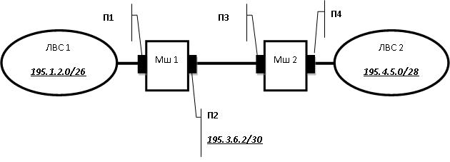
1>195.3.6.1
2>195.3.6.1/30
Из какого диапазона должен быть выбран IP-адрес порта П1 маршрутизатора Мш 1?
1>195.1.2.1 - 195.1.2.62
2>195.1.2.1 - 195.1.2.63
3>195.3.6.3 - 195.3.6.4
4>195.3.6.0 - 195.3.6.4
5>195.1.2.0 - 195.1.2.63
6>195.1.2.1 - 195.1.2.254
7>195.1.2.1 - 195.1.2.255
8>195.1.2.0 - 195.1.2.14
9>любой
Из какого диапазона должен быть выбран IP-адрес порта П4 маршрутизатора Мш 2?
1>195.4.5.1 - 195.4.5.14
2>195.4.5.1 - 195.4.5.15
3>195.4.5.1 - 195.4.5.255
4>195.4.5.1 - 195.4.5.254
5>195.3.6.1 - 195.3.6.3
6>195.3.6.1 - 195.3.6.4
7>любой
8>195.1.2.1 - 195.3.6.63
Какие из нижеперечисленных IP-адресов могут быть назначены порту П1 маршрутизатора Мш 1, если известно, что в ЛВС 1 уже заняты и используются адреса 195.1.2.1 - 195.1.2.25, в ЛВС 2 уже заняты и используются адреса 195.4.5.1 - 195.4.5.5?
1>195.1.2.52
2>195.1.2.62
3>195.1.2.30
4>195.1.2.26
5>195.1.2.63
6>195.3.6.1
7>195.3.6.3
8>195.4.5.14
9>195.4.5.3
10>195.1.2.13
Какие из нижеперечисленных IP-адресов могут быть назначены порту П4 маршрутизатора Мш 2, если известно, что в ЛВС 1 уже заняты и используются адреса 195.1.2.1 - 195.1.2.15, в ЛВС 2 уже заняты и используются адреса 195.4.5.1 - 195.4.5.9?
1>195.4.5.10
2>195.4.5.11
3>195.4.5.14
4>195.4.5.15
5>195.4.5.16
6>195.3.6.1
7>195.1.2.16
8>195.4.5.17
9>195.1.2.7
10>195.4.5.3
Чему равен IP-адрес порта П3 маршрутизатора Мш 2?
*В качестве ответа введите IP-адрес в десятичной записи без маски.
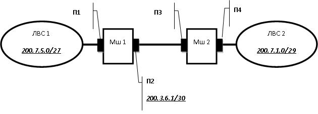
1>200.3.6.2
2>200.3.6.2/30
Из какого диапазона должен быть выбран IP-адрес порта П1 маршрутизатора Мш 1?
1>200.7.5.1 - 200.7.5.30
2>200.7.5.1 - 200.7.5.31
3>200.7.5.1 - 200.7.5.32
4>200.7.5.1 - 200.7.5.255
5>200.3.6.2 - 200.3.6.3
6>200.3.6.2 - 200.3.6.4
7>200.3.6.2 - 200.3.6.255
8>200.7.1.1 - 200.7.1.7
Из какого диапазона должен быть выбран IP-адрес порта П4 маршрутизатора Мш 2?
1>200.7.1.1 - 200.7.1.6
2>200.7.1.1 - 200.7.1.7
3>200.7.1.1 - 200.7.1.255
4>200.3.6.1 - 200.3.6.3
5>200.3.6.1 - 200.3.6.255
6>200.7.1.1 - 200.7.1.29
7>200.7.5.1 - 200.7.5.27
8>200.7.5.1 - 200.7.5.30
Какие из нижеперечисленных IP-адресов могут быть назначены порту П1 маршрутизатора Мш 1, если известно, что в ЛВС 1 уже заняты и используются адреса 200.7.5.10 - 200.7.5.20, в ЛВС 2 уже заняты и используются адреса 200.7.1.1 - 200.7.1.5?
1>200.7.5.1
2>200.7.5.5
3>200.7.5.21
4>200.7.5.31
5>200.7.5.255
6>200.3.6.2
7>200.3.6.3
8>200.7.1.6
9>200.7.1.7
10>200.7.5.15
11>200.7.1.1
Какие из нижеперечисленных IP-адресов могут быть назначены порту П4 маршрутизатора Мш 2, если известно, что в ЛВС 1 уже заняты и используются адреса 200.7.5.3 - 200.7.5.15, в ЛВС 2 уже заняты и используются адреса 200.7.1.1 - 200.7.1.4?
1>200.7.1.6
2>200.7.1.5
3>200.7.1.7
4>200.3.6.2
5>200.3.6.3
6>200.3.6.4
7>200.7.5.1
8>200.7.5.2
9>200.7.5.16
10>200.7.5.15
11>200.7.1.4
Какую длину в байтах имеет адрес IPv6?
1>16
Какую длину в битах имеет адрес IPv6?
1>128
Какая из записей является корректным адресом IPv6?
1>36::a1:bb:23
2>91-03-24-56-16-44--01
3>00-a3-24-bb-16-cc
4>ip:v4:12:26:44:36
5>16:ax::bd:23
6>16:17:18:19:20:215:255
7>2f::4:9b::c3
Какие записи не могут быть адресами IPv6?
1>16::96:34::cb
2>c1:2d:3c:4h::55
3>2b::a1:bb:23
4>2056:0:30:0:ААВС:0:0:СDС1
5>21:А2:В3:99::С4
6>3f56:50:30:a0bc:aabd:0:f0:dcd1
Какие записи могут быть адресами IPv6?
1>2456:50:30:a0cb:aabc:0:b0:cda1
2>3ae6:0:0:45bc:0:0:5a:0
3>2abc:d::e
4>ce00:1:30:a0:bc:cba:0:b0:cd
5>c1::45:30:a0fc:bbfd:0:0:c0:ddc1
6>ff::50:30::cc:db1
Чему равна длина основного заголовка пакета IPv6 (в 32-битовых словах)?
1>10
Чему равна длина основного заголовка пакета IPv6 (в байтах)?
1>40
Чему равна длина основного заголовка пакета IPv6 (в битах)?
1>320
Сколько уровней приоритета может иметь пакет IPv6?
1>64
Сколько уровней приоритета может иметь пакет IPv4?
1>16
2>15
3>7
4>8
5>256
6>255
7>2
8>1
Сколько байт отведено в заголовке пакета IPv6 под поле "Адрес назначения"?
1>16
Сколько бит отведено в заголовке пакета IPv6 под поле "Адрес назначения"?
1>128
Сколько байт отведено в заголовке пакета IPv6 под поле "Адрес источника"?
1>16
Сколько бит отведено в заголовке пакета IPv6 под поле "Адрес источника"?
1>128
Сколько байт отведено в заголовке пакета IPv6 под адреса?
1>32
Сколько бит отведено в заголовке пакета IPv6 под адреса?
1>256
Сколько 32-разрядных слов отведено в заголовке пакета IPv6 под адреса?
1>8
Сколько 32-разрядных слов отведено в заголовке пакета IPv6 под адрес источника?
1>4
Сколько 32-разрядных слов отведено в заголовке пакета IPv6 под адрес назначения?
1>4
Какие типы адресов используются в протоколе IPv6?
1>индивидуальный
2>групповой
3>произвольной рассылки
4>локальный
5>уникальный
6>адресной рассылки
7>универсальный
Какие типы адресов не используются в протоколе IPv6?
1>условный
2>универсальный
3>адресной рассылки
4>локальный
5>индивидуальный
6>групповой
7>произвольной рассылки
Как называются поля глобального агрегируемого уникального адреса IPv6, показанного на рисунке?
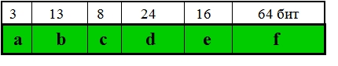
1> ::: Format Prefix
2> ::: Top-Level Aggregation
3> ::: Reserved
4> ::: Next-Level Aggregation
5> ::: Site-Level Aggregation
6> ::: Local (MAC) adress
Какой вид имеет адрес обратной петли в протоколе IPv6?
1>0:0:0:0:0:0:0:1
2>::1
Как в сокращённом виде выглядит адрес обратной петли в протоколе IPv6?
1>::1
Какое поле (a, b, c, d, e, f) глобального агрегируемого уникального адреса IPv6, показанного на рисунке, называется "агрегированием верхнего уровня"?
1>b
2>B
3>и
Какое поле (a, b, c, d, e, f) глобального агрегируемого уникального адреса IPv6, показанного на рисунке, называется "агрегированием следующего уровня"?
1>d
2>D
3>в
Какое поле (a, b, c, d, e, f) глобального агрегируемого уникального адреса IPv6, показанного на рисунке, называется "агрегированием местного уровня"?
1>e
2>е
3>Е
4>E
5>у
В каком поле (a, b, c, d, e, f) глобального агрегируемого уникального адреса IPv6, показанного на рисунке, указывается МАС-адрес?
1>f
2>F
3>а
Какой протокол обеспечивает надежную передачу данных между прикладными процессами c установлением логического соединения между взаимодействующими процессами?
1>TCP
2>tcp
3>ЕСЗ
Что представляет собой сокет?
1>Двойка параметров: (IP-адрес, номер порта)
2>Двойка параметров: (МАС-адрес, номер порта)
3>IP-адрес
4>МАС-адрес
5>Номер порта
6>Двойка параметров: (IP-адрес, МАС-адрес)
Сколько сокетов необходимо для описания логического соединения?
1>2
Какое максимальное значение может иметь UDP-порт?
1>65535
Какое максимальное значение может иметь ТСР-порт?
1>65535
Какой порт по умолчанию использует почтовый протокол SMTP?
1>25
Какой порт по умолчанию использует терминальный протокол telnet?
1>23
Какой порт по умолчанию использует файлообменный протокол FTP?
1>21
2>20
Какой порт по умолчанию использует система DNS?
1>53
Какой порт по умолчанию использует протокол HTTP?
1>80
В каком случае рационально использовать протокол ТСР вместо UDP?
1>Требуется установка соединения перед передачей пакетов
2>Источнику пакетов требуется знать о правильной доставке пакетов
3>Требуется гибко управлять скоростью соединения с помощью механизма окна
4>Требуется обеспечить низкий уровень BER
5>Требуется высокая пропускная способность
6>Требуется обеспечить небольшую загрузку каналов связи
Сколько бит используется в заголовке UDP-дейтаграммы под поле "Порт источника"?
1>16
Сколько байт используется в заголовке UDP-дейтаграммы под поле "Порт назначения"?
1>2
Что такое TCP/IP?
1>Набор протоколов.
2>Протокол канального уровня.
3>Глобальная сеть.
4>Терминальный доступ.
5>Протокольный блок данных.
6>Протоколы сетевого уровня
Сколько уровней содержит стек протоколов TCP/IP?
1>4
Как называется блок данных протокола ТСР?
1>сегмент
2>сегменгтом
3>Сегмент
4>Сегментом
Как называется блок данных протокола ТСР?
1>сегмент
Как называется блок данных протокола UDР?
1>дейтаграмма
2>датаграмма
3>Дейтаграмма
4>Датаграмма
Как называется блок данных протокола UDР?
1>дейтаграмма
2>пакет
3>сегмент
4>сообщение
5>кадр
6>блок
Как называется блок данных протокола IР?
1>пакет
2>Пакет
Как называется блок данных протокола IР?
1>пакет
2>сегмент
3>дейтаграмма
4>сообщение
5>блок данных
6>кадр
К какому уровню OSI-модели относится протокол IP?
1>Сетевому
2>Транспортному
3>Прикладному
4>Сеансовому
5>Канальному
6>Физическому
7>Представления
Какой из протоколов принадлежит сетевому уровню?
1>IP
2>TCP
3>UDP
4>FTP
5>SMTP
6>PPP
7>SLIP
Какие протоколы относятся к протоколам сетевого уровня?
1>IP
2>RIP
3>OSPF
4>SLIP
5>UDP
6>TCP
Какие протоколы относятся к протоколам транспортного уровня?
1>TCP
2>UDP
3>IP
4>OSPF
5>RIP
6>PPP
7>FTP
Какие протоколы относятся к протоколам прикладного уровня?
1>FTP
2>SMTP
3>SNMP
4>IP
5>TCP
6>RIP
7>UDP
Что такое АТМ?
1>Технология асинхронной передачи данных
2>Технология автоматической передачи данных
3>Технология асимметричной передачи данных
4>Протокол прикладного уровня OSI-модели
5>Плезиохронная передача данных
6>Протокол транспортного уровня OSI-модели
7>Протокол сессионного уровня OSI-модели
8>Автоматическая передача сообщений
9>Автоматизированная передача сообщений
Назначение АТМ-технологии.
1>Передача компьютерного и мультимедийного трафика.
2>Иерархия скоростей передачи данных.
3>Общие транспортные протоколы для локальных и глобальных сетей.
4>Сохранение имеющейся инфраструктуры физических каналов.
5>Передача только мультимедийного трафика.
6>Разные транспортные протоколы для локальных и глобальных сетей.
7>Специфическая инфраструктура физических каналов или физических протоколов.
8>Передача только компьютерного трафика.
Какие скорости передачи данных предусмотрены в АТМ-технологии?
1>155 Мбит/с
2>622 Мбит/с
3>10 Мбит/с
4>10 Гбит/с
5>100 Гбит/с
6>1 Гбит/с
7>25 Гбит/с
Чему равен размер ячейки ATM? Ответ укажите в битах.
1>424
Чему равен размер заголовка ячейки ATM? Ответ укажите в битах.
1>40
Чему равен размер заголовка ячейки ATM? Ответ укажите в байтах.
1>5
Чему равен размер ячейки ATM? Ответ укажите в байтах.
1>53
Что является центральным элементом в АТМ-сетях?
1>Коммутатор
2>Концентратор
3>Маршрутизатор
4>Шлюз
5>Мост
6>Повторитель
7>Мультиплексор
8>Генератор
Почему размер ячейки в АТМ-сетях сделан таким маленьким?
1>Чтобы уменьшить задержку при передаче
2>Чтобы увеличить задержку при передаче
3>Чтобы увеличить надежность передачи
4>Чтобы увеличить пропускную способность сети
5>Чтобы уменьшить буферную память в узлах
6>Чтобы увеличить скорость передачи
7>Чтобы уменьшить потери данных
8>Чтобы обеспечить безошибочную передачу данных
Максимальное число виртуальных путей в АТМ-сети равно ...
1>255
2>1024
3>16
4>32
5>65535
6>127
7>2048
Максимальное число виртуальных каналов в пределах одного виртуального пути в АТМ-сети равно ...
1>65535
2>255
3>1024
4>512
5>2048
6>виртуальный путь не может содержать виртуальных каналов
7>64
Максимальное число виртуальных путей в пределах одного виртуального канала в АТМ-сети равно ...
1>виртуальный канал не может содержать виртуальных путей
2>16
3>256
4>128
5>1
6>65535
7>1024
8>512
Какие из перечисленных параметров относятся к показателям качества передачи данных в АТМ-сетях?
1>пиковая скорость передачи ячеек
2>средняя скорость передачи ячеек
3>максимальная величина пульсаций
4>доля потерянных ячеек
5>минимальная скорость передачи ячеек
6>минимальная величина пульсаций
7>максимальная интенсивность передачи ячеек
8>минимальная интенсивность передачи ячеек
Какие из перечисленных параметров относятся к показателям качества передачи данных в АТМ-сетях?
1>доля потерянных ячеек
2>задержка ячеек
3>вариация задержек ячеек
4>вариация потерянных ячеек
5>мгновенная скорость передачи ячеек
6>вариация скорости передачи ячеек
7>загрузка АТМ-сети
Какие из перечисленных параметров не относятся к показателям качества передачи данных в АТМ-сетях?
1>минимальная величина пульсаций
2>количество потерянных ячеек
3>вариация скорости передачи
4>задержка ячеек
5>пиковая скорость передачи ячеек
6>минимальная скорость передачи ячеек
7>средняя задержка ячеек
Какие из перечисленных параметров не относятся к показателям качества передачи данных в АТМ-сетях?
1>средняя вариация потери заявок
2>скорость задержки заявок
3>пропускная способность передачи ячеек
4>минимальная задержка ячеек
5>максимальная величина пульсаций
6>доля потерянных ячеек
7>вариация задержек ячеек
Какой трафик является альтернативой пульсирующему трафику?
1>потоковый
2>неоднородный
3>приоритетный
4>олднородный
5>мультимедийный
6>простейший
Какой трафик является альтернативой потоковому трафику?
1>пульсирующий
2>однородный
3>неоднородный
4>приоритетный
5>простейший
6>детерминированный
Какие из перечисленных параметров соответствуют голосовому и видео трафику в АТМ-сетях?
1>скорость передачи постоянная
2>чувствителен к задержке
3>с установлением соединения
4>скорость передачи переменная
5>не чувствителен к задержке
6>без установленя соединения
Какие из перечисленных параметров не соответствуют голосовому и видео трафику в АТМ-сетях?
1>скорость передачи переменная
2>без установления соединения
3>не чувствительны к задержке
4>скорость передачи постоянная
5>с установлением соединения
6>чувствительны к задержке
Какие из перечисленных параметров соответствуют трафику компьютерных данных в АТМ-сетях?
1>скорость передачи переменная
2>с установлением соединения
3>не чувствительны к задержке
4>скорость передачи постоянная
5>без установления соединения
6>чувствительны к задержке
Что такое X.25?
1>Сетевая технология.
2>Вид оптоволоконного кабеля.
3>Уровень OSI-модели.
4>Формат кадра Token Ring.
5>Коммутатор.
6>Протокол доступа к среде передачи
7>Универсальный 25-ступенчатый трансивер
Какие особенности присущи сетям Х.25?
1>Наличие "сборщика-разборщика пакетов".
2>Трехуровневый стек протоколов
3>С установлением соединения
4>Сетевой уровень рассчитан на работу только с одним протоколом канального уровня
5>Наличие маршрутизаторов
6>Двухуровневый стек протоколов
7>Без установления соединения
8>Сетевой уровень рассчитан на работу только с разными протоколами канального уровня
Какие особенности не присущи сетям Х.25?
1>Наличие маршрутизаторов
2>Двухуровневый стек протоколов
3>Сетевой уровень рассчитан на работу только с разными протоколами канального уровня
4>Без установления соединения
5>Трехуровневый стек протоколов
6>С установлением соединения
7>Сетевой уровень рассчитан на работу только с одним протоколом канального уровня
8>Наличие коммутаторов
Что такое PAD в сетях Х.25,
1>сборщик-разборщик пакетов
2>протокол сетевого уровня
3>протокол канального уровня
4>путь доступа в сеть
5>персональный адаптер
6>способ адресации
Сколько уровней содержит стек протоколов Х.25?
1>3
Чему равна максимальная скорость (кбит/с) передачи данных в сети Х.25?
1>64
Чему равна максимальная скорость (бит/с) передачи данных в сети Х.25?
1>64000
Что такое QoS?
1>Качество обслуживания
2>Очередь на обслуживание
3>Качество протоколов
4>Очередь сегментов
5>Очередь системная
6>Стандарт качества
В какой сетевой технологии впервые появилась поддержка качества обслуживания?
1>Frame Relay
2>X.25
3>ATM
4>TCP/IP
5>FDDI
6>Ethernet
7>Token Ring
Какая максимальная скорость передачи данных в сетях Frame Relay?
1>2 Мбит/с
2>1 Мбит/с
3>10 Мбит/с
4>100 Мбит/с
5>64 кбит/с
6>1024 кбит/с
7>1 Гбит/с
Какие из ниже перечисленных особенностей присущи сетям Frame Relay?
1>более высокая пропускная способность по сравнению с Х.25
2>обеспечивает поддержку качества обслуживания
3>не обеспечивает надежную передачу кадров
4>не обеспечивает поддержку качества обслуживания
5>обеспечивает надежную передачу кадров
6>более низкая пропускная способность по сравнению с Х.25
Какие из ниже перечисленных особенностей не присущи сетям Frame Relay?
1>не обеспечивает поддержку QoS
2>обеспечивает надежную передачу кадров
3>более низкая пропускная способность по сравнению с Х.25
4>обеспечивает поддержку QoS
5>не обеспечивает надежную передачу кадров
6>более высокая пропускная способность по сравнению с Х.25
Какие параметры качества обслуживания поддерживаются с сетях Frame Relay?
1>согласованная скорость передачи данных
2>согласованная величина пульсации
3>дополнительная величина пульсации
4>пиковая скорость передачи данных
5>максимальная величина пульсации
6>задержка передачи данных
7>вариация задержки
Какие параметры качества обслуживания не поддерживаются с сетях Frame Relay?
1>максимальная величина пульсации
2>задержка передачи данных
3>вариация задержки
4>согласованная скорость передачи данных
5>согласованная величина пульсации
6>дополнительная величина пульсации
Какие параметры качества обслуживания поддерживаются с сетях Frame Relay?
1> CIR (Committed Information Rate)
2>Bс (Committed Burst Size)
3>Be (Excess Burst Size)
4> АIR (Average Information Rate)
5>Ba (Average Burst Size)
6>SIR ( (Super Information Rate))
Многопротокольная коммутация на основе меток - это ... (англоязычная аббревиатура)
1>MPLS
2>mpls
3>ЬЗДЫ
Что такое MPLS?
1>многопротокольная коммутация по меткам
2>многоуровневый протокол коммутации
3>многопроцессорная большая система
4>протокол маршрутизации
5>протокол прикладного уровня
6>многопроцессорный коммутатор
Что такое LSR в MPLS-сетях?
1>коммутирующий по меткам маршрутизатор
2>алгоритм маршрутизации по состоянию
3>пограничный коммутатор
4>протокол маршрутизации
5>технология передачи данных
6>пограничный коммутирующий по меткам маршрутизатор
Что такое LЕR в MPLS-сетях?
1>пограничный коммутирующий по меткам маршрутизатор
2>коммутирующий по меткам маршрутизатор
3>алгоритм маршрутизации по состоянию
4>метод кодирования
5>протокол маршрутизации в IP-сетях
6>коммутатор в АТМ-сетях
7>технология передачи данных
Что такое LDP в MPLS-сетях?
1>протокол распределения меток
2>пограничный коммутирующий по меткам маршрутизатор
3>коммутирующий по меткам маршрутизатор
4>путь с коммутацией по меткам
5>путь с маршрутизацией по меткам
6>маршрутизирующий коммутатор по меткам
Запишите англоязычную аббревиатуру, обозначающую технологию многопротокольной коммутации по меткам?
1>MPLS
2>mpls
Запишите англоязычную аббревиатуру, соответствующую коммутирующему по меткам маршрутизатору
1>LSR
2>lsr
Запишите англоязычную аббревиатуру, соответствующую пограничному коммутирующему по меткам маршрутизатору
1>LER
2>ler
Запишите англоязычную аббревиатуру, соответствующую протоколу распределения меток в MPLS-сетях
1>LDP
2>ldp
В чем основное отличие MPLS-сетей от ATM-сетей?
1>отсутствие предварительного установления соединения
2>наличие предварительного установления соединения
3>наличие виртуального канала
4>отсутствие виртуального канала
5>наличие мультиплексирования
6>отсутствие мультиплексирования
Какие данные содержат таблицы продвижения в MPLS-сетях?
1>входной интерфейс
2>метка
3>следующий хоп
4>действие
5>выходной протокол
6>следующий хост
7>адрес
8>метрика
Чему равна длина заголовка MPLS в битах?
1>32
Чему равна длина заголовка MPLS в байтах?
1>4
Какие поля содержит MPLS-заголовок?
1>класс сервиса
2>признак дна стека меток
3>время жизни
4>метка
5>метрика
6>приоритет
7>признак начала стека меток
8>тип протокола верхнего уровня
9>адрес назначения
Какие поля не содержит MPLS-заголовок?
1>метрика
2>приоритет
3>признак начала стека меток
4>тип MPLS
5>CoS
6>признак дна стека меток
7>Time To Live
8>метка
Чему равна длина поля метки (в битах) в MPLS-заголовке?
1>20
В каком месте кадра расположен MPLS-заголовок?
1>между заголовками второго и третьего уровней
2>в начале кадра
3>между заголовками первого и второго уровней
4>между заголовками третьего и четвертого уровней
5>после заголовков всех уровней
6>в любом месте
7>вместо заголовка второго уровня
8>вместо заголовка третьего уровня
Для чего используется стек меток в MPLS-сетях?
1>для передачи кадра через несколько MPLS-сетей
2>для передачи нескольких кадров одного и того же сообщения
3>для повышения надежности передачи данных
4>для передачи пакета через несколько IP-сетей
5>для устранения фрагментации
6>для повышения помехоустойчивости
Какие операции с метками используются в MPLS-сетях?
1>поместить метку в стек
2>заменить текущую метку новой
3>удалить верхнюю метку
4>переместить метку
5>добавить метку
6>проверить метку
7>удалить нижнюю метку
8>инвертировать метку
Как называется поле "А" MPLS-заголовка, показанного на рисунке?
1>метка
2>Метка
3>label
4>Label
Как называется поле "B" MPLS-заголовка, показанного на рисунке?
1>CoS
2>cos
3>class of service
4>Class of Service
5>класс сервиса
6>класс обслуживания
Как называется поле "С" MPLS-заголовка, показанного на рисунке?
1>признак дна стека меток
2>признак дна
3>Признак дна стека меток
4>Признак дна
5>признак дна стека
6>Признак дна стека
Как называется поле "D" MPLS-заголовка, показанного на рисунке?
1>TTL
2>Time To Live
3>время жизни
4>Время жизни
5>ttl
6>time to live
7>Time to live
Установить соответствие между элементами сети, представленной на рисунке, и их наименованиями.
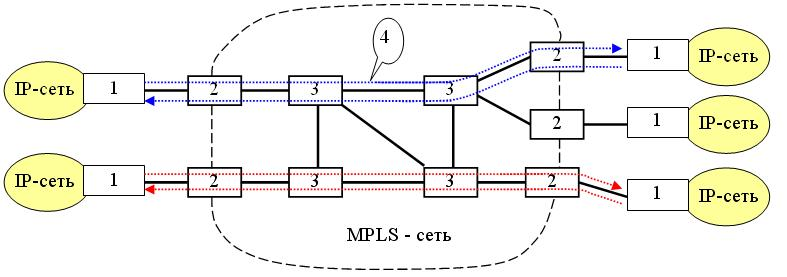
1>1:::пограничный маршрутизатор
2>2:::Label switch Edge Router
3>3:::Label Switch Router
4>4:::Label Switching Path
Какими свойствами должна обладать безопасная информационная система?
1>конфиденциальность
2>доступность
3>целостность
4>организованность
5>интегративность
6>адекватность
7>простота
Гарантия того, что секретные данные будут доступны только авторизованным пользователям, которым этот доступ разрешен, называется ...?
1>конфиденциальность
2>целостность
3>доступность
4>адекватность
5>организованность
6>интегративность
7>гарантированность
Гарантия того, что авторизованные пользователи всегда получат доступ к данным, называется ...?
1>доступность
2>конфиденциальность
3>целостность
4>адекватность
5>интегративность
6>системность
7>гарантированность
Гарантия сохранности данных, которая обеспечивается запретом для неавторизованных пользователей каким-либо образом изменять, модифицировать, разрушать или создавать данные, называется ...?
1>целостность
2>конфиденциальность
3>доступность
4>адекватность
5>интегративность
6>системность
7>организованность
Что относится к основным сервисам сетевой безопасности?
1>шифрование
2>аутентификация
3>идентификация
4>авторизация
5>автоматизация
6>интенсификация
7>адресация
Что не относится к основным сервисам сетевой безопасности?
1>адресация
2>интенсификация
3>автоматизация
4>аудит
5>идентификация
6>аутентификация
7>авторизация
Как называется набор протоколов, позволяющих обеспечить защиту данных, передаваемых по межсетевому протоколу IP за счёт подтверждения подлинности и шифрования IP-пакетов?
1>IPSec
2>IPsec
3>ipsec
4>ШЗЫус
Каких полей нет в заголовке пакета IPv4?
1>Длина поля данных
2>Номер порта назначения
3>Контрольная сумма пакета
4>Номер версии
5>Длина заголовка
6>Идентификатор пакета
7>Время жизни
8>Смещение фрагмента
Какие поля имеются в заголовке пакета IPv4?
1>Время жизни
2>Длина заголовка
3>Идентификатор пакета
4>Смещение фрагмента
5>Длина поля данных
6>Контрольная сумма пакета
7>Длина фрагмента
8>Количество фрагментов
9>Тип пакета
Сколько уровней приоритета может иметь пакет IPv4?
1>8
Чему равен максимальный уровень приоритета пакета IPv4?
1>7
2>
Чему равен минимальный уровень приоритета пакета IPv4?
1>0
Что означает тип сервиса D=1 в заголовке пакета IPv4?

1>минимальная задержка пакета
2>максимальная надежность передачи пакета
3>предоставление максимальной пропускной способности
4>уровень приоритета равен 1
5>не фрагментировать
6>промежуточный пакет
7>фрагмент
8>максимально допустимая задержка пакета
9>минимально необходимая пропускная способность
Что означает тип сервиса Т=1 в заголовке пакета IPv4?
1>предоставление максимальной пропускной способности
2>минимальная задержка пакета
3>максимальная надежность доставки пакета
4>не фрагментировать
5>промежуточный фрагмент
6>последний фрагмент
7>уровень приоритета равен 1
8>максимально допустимая задержка пакета
Что означает тип сервиса R=1 в заголовке пакета IPv4?
1>максимальная надежность передачи пакета
2>минимальная задержка пакета
3>предоставление макимальной пропускной способности
4>не фрагментировать
5>промежуточный фрагмент
6>последний фрагмент
7>уровень приоритета равен 1
8>рейтинг пакета
9>максимально допустимая задержка пакета
Что означает флаг DF=1 в заголовке пакета IPv4?
1>пакет не фрагментировать
2>пакет фрагментировать
3>минимальная задержка пакета
4>максимальная надежность доставки
5>предоставление максимальной пропускной способности
6>промежуточный фрагмепнт
7>последний фрагмент
8>дополнительный фрагмент
Что означает флаг МF=1 в заголовке пакета IPv4?
1>промежуточный фрагмент
2>последний фрагмент
3>минимальная задержка фрагмента
4>максимальная надежность доставки фрагмента
5>предоставление максимальной пропрускной способности
6>уровень приоритета равен 1
7>не фрагментировать
8>можно фрагментировать
9>максимальный кадр
Чему равно максимальное значение времени жизни пакета IPv4?
1>255
Сколько двоичных разрядов отводится в заголовке пакета IPv4 под поле "Время жизни "?
1>8
Сколько двоичных разрядов отводится в заголовке пакета IPv4 под поле "Длина заголовка "?
1>4
Какие значения может иметь поле "Длина заголовка" пакета IPv4?
1>20
2>24
3>40
4>52
5>22
6>46
7>50
8>54
9>34
10>10
11>15
Какие значения не может иметь длина заголовка пакета IPv4?
1>22
2>34
3>64
4>54
5>25
6>45
7>48
8>52
9>60
10>28
11>48
Каких полей нет в заголовке пакета IPv4?
1>Длина поля данных
2>Номер порта назначения
3>Контрольная сумма пакета
4>Номер версии
5>Длина заголовка
6>Идентификатор пакета
7>Время жизни
8>Смещение фрагмента
Какие поля имеются в заголовке пакета IPv4?
1>Время жизни
2>Длина заголовка
3>Идентификатор пакета
4>Смещение фрагмента
5>Длина поля данных
6>Контрольная сумма пакета
7>Длина фрагмента
8>Количество фрагментов
9>Тип пакета
Сколько уровней приоритета может иметь пакет IPv4?
1>8
Чему равен максимальный уровень приоритета пакета IPv4?
1>7
2>
Чему равен минимальный уровень приоритета пакета IPv4?
1>0
Что означает тип сервиса D=1?
1>минимальная задержка пакета
2>максимальная надежность передачи пакета
3>предоставление максимальной пропускной способности
4>уровень приоритета равен 1
5>на фрагментировать
6>промежуточный пакет
7>фрагмент
Что означает тип сервиса Т=1?
1>предоставление максимальной пропускной способности
2>минимальная задержка пакета
3>максимальная надежность доставки пакета
4>не фрагментировать
5>промежуточный фрагмент
6>последний фрагмент
7>уровень приоритета равен 1
Что означает тип сервиса R=1?
1>максимальная надежность передачи пакета
2>минимальная задержка пакета
3>предоставление макимальной пропускной способности
4>не фрагментировать
5>промежуточный фрагмент
6>последний фрагмент
7>уровень приоритета равен 1
Что означает флаг DF=1?
1>пакет не фрагментировать
2>пакет фрагментировать
3>минимальная задержка пакета
4>максимальная надежность доставки
5>предоставление максимальной пропускной способности
6>промежуточный фрагмепнт
7>последний фрагмент
Что означает флаг МF=1?
1>промежуточный фрагментировать
2>последний фрагмент
3>минимальная задержка пакета
4>максимальная надежность доставки пакета
5>предоставление максимальной пропрускной способности
6>уровень приоритета равен 1
7>не фрагментировать
8>можно фрагментировать
Чему равно максимальное значение времени жизни пакета IPv4?
1>255
Сколько двоичных разрядов отводится в заголовке пакета IPv4 под поле "Время жизни "?
1>8
Сколько двоичных разрядов отводится в заголовке пакета IPv4 под поле "Длина заголовка "?
1>4
Какие значения может иметь длина заголовка пакета IPv4?
1>20
2>24
3>40
4>52
5>22
6>46
7>50
8>54
9>34
Какие значения не может иметь длина заголовка пакета IPv4?
1>22
2>34
3>64
4>54
5>28
6>32
7>48
8>52
9>60
Какой протокол (аббревиатура) предназначен для передачи файлов в сети и доступа к удалённым хостам?
1>FTP
2>ftp
3>АЕЗ
Какой протокол (аббревиатура) предназначен для обмена информацией о маршрутах между автономными системами?
1>BGP
2>bgp
3>ИПЗ
Какой протокол (аббревиатура) предназначен для передачи гипертекста?
1>HTTP
2>http
3>РЕЕЗ
Какой протокол (аббревиатура) предназначен для автоматического распределения между компьютерами IP-адресов?
1>DHCP
2>dhcp
3>ВРСЗ
Какой протокол (аббревиатура) предназначен для управления сетью?
1>SNMP
2>snmp
3>ЫТЬЗ
Простой протокол передачи почты - это ...? (АББРЕВИАТУРА)
1>SMTP
2>smtp
3>ЫЬЕЗ
Какой протокол (аббревиатура) предназначен для передачи трафика реального времени?
1>RTP
2>rtp
3>КЕЗ
Межсетевой протокол управляющих сообщений - это ... ? (АББРЕВИАТУРА)
1>ICMP
2>icmp
3>ШСЬЗ
Какой протокол (аббревиатура) предназначен для определения физического адреса устройства по его IP-адресу?
1>ARP
2>arp
3>ФКЗ
Какие протоколы предназначены для определения IP-адреса устройства по его физическому адресу?
1>RARP
2>InARP
3>ARP
4>DHCP
5>MAC
6>SMTP
7>SNMP
8>PPTP
9>ICMP
Что из перечисленного является протоколом маршрутизации?
1>RIP
2>OSPF
3>BGP
4>RARP
5>ARP
6>IP
7>DHCP
8>RTP
9>ICMP
Что из перечисленного не является протоколом маршрутизации?
1>RTP
2>ARP
3>DHCP
4>OSTP
5>ICMP
6>RIP
7>BGP
8>OSPF
Какой из протоколов является протоколом маршрутизации типа DVA?
1>RIP
2>OSPF
3>BGP
4>RTP
5>FTP
6>ARP
7>RARP
Какой из протоколов является протоколом маршрутизации типа LSA?
1>OSPF
2>BGP
3>EGP
4>RIP
5>ARP
6>DHCP
7>TCP
Какой протокол (аббревиатура) канального уровня для выделенных линий разработан специально для стека протоколов TCP/IP?
1>SLIP
2>slip
3>ЫДШЗ
Высокоуровневый протокол управления каналом, являющийся стандартом ISO для выделенных линий - это ...? (АББРЕВИАТУРА)
1>HDLC
2>hdlc
3>РВДС
Протокол двухточечного соединения, пришедший на смену протоколу SLIP, - это ...? (АББРЕВИАТУРА)
1>PPP
2>ppp
3>ЗЗЗ
Какие IP-адреса предназначены для автономного использования?
1>10.0.0.0
2>172.20.0.0
3>192.168.255.0
4>10.1.0.0
5>172.1.0.0
6>192.255.255.0
7>1.0.0.0
8>172.255.0.0
Какие IP-адреса предназначены для автономного использования?
1>172.30.0.0
2>172.31.0.0
3>192.168.168.0
4>192.168.255.0
5>10.16.0.0
6>171.16.0.0
7>172.32.0.0
8>176.16.0.0
9>168.191.0.0
Какие IP-адреса не предназначены для автономного использования?
1>172.168.0.0
2>10.1.0.0
3>192.168.256.0
4>171.16.0.0
5>10.0.0.0
6>172.17.0.0
7>192.168.0.0
8>192.168.255.0
Какие IP-адреса не предназначены для автономного использования?
1>1.0.0.0
2>172.168.0.0
3>196.168.0.0
4>172.30.0.0
5>172.21.0.0
6>192.168.1.0
7>192.168.255.0
Как выглядит в двоичной системе счисления первый байт адреса "loopback" в IPv4?
1>01111111
Как выглядит в десятичной системе счисления первый байт адреса "loopback" в IPv4?
1>127
Как выглядит в двоичной системе первый байт адреса обратной петли в IPv4?
1>01111111
Сколько адресов IPv4 в классе А выделено для автономного использования?
1>1
Сколько адресов IPv4 в классе В выделено для автономного использования?
1>16
Сколько адресов IPv4 в классе С выделено для автономного использования?
1>256
Сколько адресов IPv4 в классе С выделено для автономного использования?
1>256
2>255
3>16
4>128
5>1
6>32
7>31
Сколько адресов IPv4 в классе В выделено для автономного использования?
1>16
2>15
3>1
4>31
5>32
6>255
7>256
Какие IP-адреса предназначены для автономного использования?
1>10.0.0.0
2>172.20.0.0
3>192.168.255.0
4>172.32.0.0
5>172.1.0.0
6>192.255.255.0
7>1.0.0.0
8>172.255.0.0
9>100.0.0.0
Какие IP-адреса предназначены для автономного использования?
1>172.30.0.0
2>172.31.0.0
3>192.168.168.0
4>192.168.255.0
5>10.16.0.0
6>171.16.0.0
7>172.32.0.0
8>176.16.0.0
9>168.191.0.0
Какие IP-адреса не предназначены для автономного использования?
1>172.168.0.0
2>10.1.0.0
3>192.168.256.0
4>171.16.0.0
5>10.0.0.0
6>172.17.0.0
7>192.168.0.0
8>192.168.255.0
Какие IP-адреса не предназначены для автономного использования?
1>1.0.0.0
2>172.168.0.0
3>196.168.0.0
4>172.30.0.0
5>172.21.0.0
6>192.168.1.0
7>192.168.255.0
Как выглядит в двоичной системе счисления первый байт адреса "loopback" в IPv4?
1>01111111
Как выглядит в десятичной системе счисления первый байт адреса "loopback" в IPv4?
1>127
Как выглядит в двоичной системе первый байт адреса обратной петли в IPv4?
1>01111111
Сколько адресов IPv4 в классе А выделено для автономного использования?
1>1
Сколько адресов IPv4 в классе В выделено для автономного использования?
1>16
Сколько адресов IPv4 в классе С выделено для автономного использования?
1>256
Сколько адресов IPv4 в классе С выделено для автономного использования?
1>256
2>255
3>16
4>128
5>1
6>32
7>31
Сколько адресов IPv4 в классе В выделено для автономного использования?
1>16
2>15
3>1
4>31
5>32
6>255
7>256
Какие адреса являются корректными адресами IPv6?
1>АА::ВВ
2>С100:22:АВВА:1:2:3:4:55D0
3>::1234:ВА:192.168.6.1
4>СА45::6724:5::479А:Е1Е2
5>16С1:4321:АС7H::В5С1:90С
6>ЕВ5:212:А1В2А:0:1:2:3:55D0
Заголовок пакета какого протокола показан на рисунке? (Англоязычная аббревиатура)
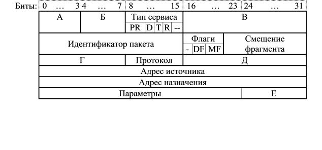
1>IPv4
2>ipv4
3>IPV4
4>ШЗм4
Как называется поле А в заголовке пакета IPv4?
1>Версия
2>версия
В каком поле заголовка пакета указывается версия протокола IP?
1>А
2>а
В каком поле заголовка пакета протокола IP указывается длина заголовка?
1>Б
2>А
3>В
4>Г
5>Д
6>Е
7>нет такого поля
Поле "Длина заголовка" пакета IPv4 имеет вид: 1001. Чему равна длина заголовка в байтах?
1>36
Поле "Длина заголовка" пакета IPv4 имеет вид: 1101. Чему равна длина заголовка в байтах?
1>52
Поле "Длина заголовка" пакета IPv4 имеет вид: 1110. Чему равна длина заголовка, измеренная в 32-битовых словах?
1>14
Поле "Длина заголовка" пакета IPv4 имеет вид: 1011. Чему равна длина заголовка, измеренная в 32-битовых словах?
1>11
В каком поле заголовка пакета протокола IP указывается общая длина пакета?
1>В
2>А
3>Б
4>Г
5>Д
6>Е
7>нет такого поля
В каком поле заголовка пакета протокола IP указывается длина поля данных?
1>нет такого поля
2>А
3>Б
4>В
5>Г
6>Д
7>Е
В каком поле заголовка пакета протокола IP указывается время жизни?
1>Г
2>г
В каком поле заголовка пакета протокола IP указывается длина заголовка?
1>Б
2>б
В каком поле заголовка пакета протокола IP указывается контрольная сумма пакета?
1>нет такого поля
2>А
3>Б
4>В
5>Г
6>Д
7>Е
В каком поле заголовка пакета протокола IP указывается контрольная сумма заголовка?
1>Д
2>д
В каком поле заголовка пакета протокола IP указывается контрольная сумма заголовка?
1>Д
2>нет такого поля
3>А
4>Б
5>В
6>Г
7>Е
Какое поле заголовка пакета протокола IP называется "Наполнение"?
1>Е
2>нет такого поля
3>А
4>Б
5>В
6>Г
7>Д
В каком поле заголовка пакета IP указывается признак промежуточного фрагмента?
1>MF
2>mf
3>ЬА
Назначение поля "Наполнение" в заголовке пакета протокола IPv4?
1>для дополнения длины заголовка до значения, кратного 4-м байтам
2>для дополнительных параметров
3>для контрольной суммы пакета
4>для дополнения длины заголовка до значения, кратного байту
5>для дополнения длины заголовка до значения, кратного 2-м байтам
6>резерв для новых параметров
7>для контрольной суммы поля данных
8>для дополнения длины пакета до значения, кратного 4-м байтам
9>для дополнения длины пакета до значения, кратного 2-м байтам
Сколько уровней приоритета может иметь пакет IPv4?
1>8
Какой протокол обеспечивает надежную передачу данных между прикладными процессами c установлением логического соединения между взаимодействующими процессами?
1>TCP
2>tcp
3>ТСР
4>ЕСЗ
Какой протокол реализует передачу данных между прикладными процессами без установления логического соединения между взаимодействующими процессами?
1>UDP
2>udp
3>ГВЗ
Какую длину в байтах имеет заголовок UDP-дейтаграмма?
1>8
Какую длину в битах имеет заголовок UDP-дейтаграмма?
1>64
Сколько полей содержит заголовок UDP-дейтаграмма?
1>4
Какие поля содержит заголовок UDP-дейтаграмма?
1>Порт источника
2>Порт назначения
3>Длина сегмента
4>Контрольная сумма
5>IP-адрес источника
6>IP-адрес назначения
7>Длина заголовка
8>Размер окна
9>Указатель на срочные данные
Какие поля не содержит заголовок UDP-дейтаграмма?
1>Указатель на срочные данные
2>Размер окна
3>Длина заголовка
4>IP-адрес назначения
5>IP-адрес источника
6>Порт назначения
7>Порт источника
8>Контрольная сумма
9>Длина сегмента
Какие утверждения справедливы для протокола ТСР?
1>ориентирован на дуплексную передачу
2>использует механизм скользящего окна переменного размера
3>отрицательные квитанции не посылаются
4>подтверждает получение байтов
5>подтверждает получение пакетов
6>посылаются положительные и отрицательные квитанции
7>использует механизм скользящего окна размером 7 или 127
8>ориентирован на полудуплексную передачу
9>посылаются только отрицательные квитанции
Какие утверждения не справедливы для протокола ТСР?
1>ориентирован на полудуплексную передачу
2>использует механизм скользящего окна с постоянным размером
3>посылаются отрицательные квитанции
4>подтверждает получение пакетов
5>подтверждает получение байтов
6>не посылаются отрицательные квитанции
7>использует механизм скользящего окна с переменным размером
8>ориентирован на дуплексную передачу
Для чего нужен псевдозаголовок протоколов TCP и UDP?
1>Для передачи на транспортный уровень IP-адресов отправителя и получателя
2>Для передачи на транспортный уровень МАС-адресов отправителя и получателя
3>Для передачи на транспортный уровень номеров портов отправителя и получателя
4>Для передачи на транспортный уровень сокетов отправителя и получателя
5>Для повышения надежности передачи данных
6>Для передачи контрольной суммы
7>Для передачи на канальный уровень МАС-адресов отправителя и получателя
8>Для передачи на сетевой уровень IP-адресов отправителя и получателя
9>Для передачи на сетевой уровень номеров портов отправителя и получателя
Какие утверждения справедливы?
1>Псевдозаголовок располагается перед заголовком ТСР-сегмента
2>Псевдозаголовок располагается перед заголовком UDP-дейтаграммы
3>Длина псевдозаголовка 12 байт
4>Псевдозаголовок располагается перед заголовком IР-пакета
5>Длина псевдозаголовка 16 байт
6>Длина псевдозаголовка 20 байт
7>Псевдозаголовок располагается после заголовка ТСР-сегмента
8>Псевдозаголовок располагается после заголовка UDP-дейтаграммы
9>Псевдозаголовок располагается после заголовка IР-пакета
10>Длина псевдозаголовка от 20 до 60 байт
Чему равна длина псевдозаголовка (в байтах) в стеке протоколов TCP/IP?
1>12
Чему равна длина псевдозаголовка (в битах) в стеке протоколов TCP/IP?
1>96
Чему равна длина псевдозаголовка (32-разрядных слов) в стеке протоколов TCP/IP?
1>3
Какие поля содержит псевдозаголовок стека протоколов TCP/IP?
1>IP-адреса отправителя и получателя
2>номер протокола транспортного уровня
3>длину UDP-дейтаграммы или ТСР-сегмента
4>длину IP-пакета
5>номер протокола сетевого уровня
6>номера портов отправителя и получателя
7>МАС-адреса отправителя и получателя
8>контрольную сумму
Какие утверждения справедливы?
1>Узел-отправитель при формировании ТСР-сегмента рассчитывает контрольную сумму сегмента с учётом псевдозаголовка
2>При передаче по сети псевдозаголовок не включается в сегмент
3>В узле-получателе протокол IP формирует псевдозаголовок и вставляет его в поступивший сегмент и передаёт транспортному уровню
4>Узел-отправитель при формировании ТСР-сегмента рассчитывает контрольную сумму сегмента без учёта псевдозаголовка
5>Узел-отправитель при формировании ТСР-сегмента рассчитывает контрольную сумму только псевдозаголовка
6>Псевдозаголовок передается вместе с ТСР-сегментом
7>В узле-получателе протокол IP удаляет псевдозаголовок
8>В узле-получателе протокол IP передаёт псевдозаголовок сетевому уровню
Какие утверждения неверны?
1>В узле-получателе протокол IP передаёт псевдозаголовок сетевому уровню
2>В узле-получателе протокол IP удаляет псевдозаголовок
3>Псевдозаголовок передается вместе с ТСР-сегментом
4>Узел-отправитель при формировании ТСР-сегмента рассчитывает контрольную сумму только псевдозаголовка
5>Узел-отправитель при формировании ТСР-сегмента рассчитывает контрольную сумму сегмента без учёта псевдозаголовка
6>Узел-отправитель при формировании ТСР-сегмента рассчитывает контрольную сумму сегмента с учётом псевдозаголовка
7>При передаче по сети псевдозаголовок не включается в сегмент
8>В узле-получателе протокол IP формирует псевдозаголовок и вставляет его в поступивший сегмент и передаёт транспортному уровню
Какой протокол канального уровня для выделенных каналов используется в стеке протоколов TCP/IP?
1>PPP
2>HDLC
3>LAP-B
4>LAP-D
5>LAP-F
6>LAP-M
Какой протокол канального уровня в стеке протоколов TCP/IP пришел на смену протоколу SLIP? (Англоязычная аббревиатура)
1>PPP
2>ppp
3>ЗЗЗ
Какой пакет может располагаться в поле данных кадра SLIP?
1>IP
2>ip
3>ШЗ
Какой пакет может располагаться в поле данных кадра SLIP?
1>IP
2>TCP
3>UDP
4>OSPF
5>SLIP
6>PPP
7>HDLC
8>ARP
Какие пакеты не могут располагаться в поле данных кадра SLIP?
1>TCP
2>UDP
3>PPP
4>X.25
5>FrameRelay
6>RIP
7>OSPF
8>IP
Какой протокол канального уровня в стеке протоколов TCP/IP предшествовал протоколу РРP? (Англоязычная аббревиатура)
1>SLIP
2>slip
3>ЫДШЗ
Какие недостатки присущи протоколу SLIP?
1>отсутствие возможности обмениваться адресной информацией
2>использование только IP-пакетов в качестве содержимого SLIP-кадра
3>отсутствие процедур обнаружения и коррекции ошибок
4>низкая надежность передачи данных
5>использование процедуры байт-стаффинга
6>сложность реализации
7>большие накладные расходы
Какие особенности присущи протоколу PPP?
1>переговорное принятие параметров соединения
2>многопротокольная поддержка
3>расширяемость протокола
4>поддержка только IP-пакетов
5>протокол бит-ориентированный
6>возможность многоадресной рассылки
Что является корректным МАС-адресом?
1>1F-00-AA-47-01-02
2>00-10-02-07-77-11
3>12-23-34-45-56-67
4>01-91-44-55-16-12-11
5>10-FC-A2-5K-16-00
6>11.24.43.16.AA.7X
7>192.25.255.1
8>A5-CC-12-45-CF-01
Что не может являться МАС-адресом?
1>192-255-64-32-00-04
2>21-AA-BC-50-DE-FG
3>198.192.164.2
4>05-00-AA-25-01
5>03-05-12-45-6A-9C
6>FF-EE-00-09-90-00
7>12-01-02-03-04-DF
8>0E-E0-1D-D2-C4-01
Чему равен межкадровый интервал в ЛВС Fast Ethernet (в наносекундах)?
1>960
2>960 нс
Чему равен межкадровый интервал в ЛВС Token Ring?
1>0
2>96 битовых интервалов
3>9 или 6 битовых интервалов
4>960 нс
5>96 мкс
6>9,6 мс
7>64 мкс
8>16 мкс
Чему равен межкадровый интервал в ЛВС FDDI?
1>0
В каких ЛВС при передаче данных между кадрами используется межкадровый интервал?
1>Ethernet 10 Мбит/с
2>Fast Ethernet
3>Ethernet 10 Гбит/с
4>Ethernet 100 Гбит/с
5>Token Ring
6>FDDI
7>100 VG-AnyLAN
В каких ЛВС при передаче данных между кадрами не используется межкадровый интервал?
1>FDDI
2>Token Ring
3>Ethernet 10 Gbit/s
4>Ethernet 100 Gbit/s
5>100 VG-AnyLAN
6>Ethernet 40 Gbit/s
7>Fast Ethernet
8>Ethernet 10 Mbit/s
Чему равно время жизни пакета IPv4, устанавливаемое по умолчанию в Windows?
1>128
Какая англоязычная аббревиатура соответствует технологии трансляции сетевых адресов?
1>NAT
2>nat
3>ТФЕ
Какая англоязычная аббревиатура соответствует технологии, ограничивающей доступа извне к ресурсам некоторой сети при сохранении возможности выхода во внешнюю сеть?
1>NAT
2>nat
3>ТФЕ
Какие протоколы относятся к транспортному уровню стека TCP/IP?
1>UDP
2>TCP
3>RDP
4>DCCP
5>ARP
6>RIP
7>OSPF
8>ICMP
9>SNMP
10>IP
11>DHCP
Какие протоколы относятся к межсетевому уровню стека TCP/IP?
1>IP
2>RIP
3>OSPF
4>ICMP
5>SNMP
6>TCP
7>PPP
8>SMTP
9>RTP
10>DNS
Какие протоколы не относятся к транспортному уровню стека TCP/IP?
1>IP
2>RIP
3>OSPF
4>ICMP
5>SNMP
6>UDP
7>TCP
Выберите корректные утверждения.
1>Протокол IP не гарантирует доставку пакетов
2>Протокол IP не гарантирует сохранение последовательности пакетов
3>Протокол IP не гарантирует целостность пакетов
4>Протокол IP не различает логические объекты (процессы), порождающие поток данных
5>Протокол IP не гарантирует передачу пакетов
6>Протокол IP различает логические объекты (процессы), порождающие поток данных
7>Протокол IP гарантирует доставку пакетов
8>Протокол IP сохраняет последовательность пакетов
Выберите корректные утверждения.
1>Протокол UDP передает пакеты без установления соединения
2>Протокол TCP передает пакеты с установлением соединения
3>Протокол TCP сохраняет последовательность пакетов
4>Протокол UDP не сохраняет последовательность пакетов
5>Протокол TCP не сохраняет последовательность пакетов
6>Протокол TCP обеспечивает ненадежную доставку
7>В поле данных сегмента TCP размещается пакет IP
8>Протокол TCP может передавать пакеты как с установлением, так и без установления соединения
9>Протокол UDP обеспечивает надежную доставку
10>Протокол UDP сохраняет последовательность пакетов
Выберите корректные утверждения.
1>В поле данных пакета IP может находиться TCP-сегмент
2>В поле данных пакета IP может находиться UDP-дейтаграмма
3>В поле данных дейтаграммы UDP могут находиться IP-пакеты
4>В поле данных сегмента TCP могут находиться IP-пакеты
5>В поле данных дейтаграммы UDP могут находиться сегменты TCP
6>В поле данных сегмента TCP могут находиться дейтаграммы UDP
Укажите допустимые IP-адреса при классовой адресации.
1>1.2.3.4
2>121.121.121.121
3>222.255.255.254
4>172.45.16.1
5>6.12.45.9.1
6>185.265.98.33
7>127.3.67.5
8>254.199.132.166
Что не является корректным IPv4-адресом?
1>192.164.265.22
2>127.1.2.3.4
3>245.15.52.1
4>199.255.254.5
5>5.64.111.255
6>13.0.0.13
7>145.1.0.1
8>126.14.56.3
Что не является корректным IPv4-адресом?
1>01-05-64-25-89-06
2>220.20.256.48
3>112.64.77.5с
4>252.12.34.1
5>124.45.65.13
6>7.17.71.77
7>25.25.25.25
8>1.2.3.4
Что является корректным IPv4-адресом?
1>1.2.3.4
2>128.255.0.15
3>192.0.0.1
4>223.255.255.254
5>211.168.32.1.1
6>242.25.35.45
7>15.165.256.0
8>25.152.С36.124
Что является корректным IPv4-адресом?
1>192.171.153.15
2>5.255.255.245
3>1.10.100.200
4>223.223.223.223
5>251.252.150.7
6>199.200.265.225
7>214.225.164
8>1.2.33.4.5
Что не является корректным глобальным уникальным IPv6-адресом?
1>5221:0:1:5a:abcd:0:15:f123
2>2001::dc05:14::a6c9
3>3a:25:a:d::c58х:167
4>2005:12::3217:19:0
5>39af:cc:35b::77:10:1
6>3fff::35b:d7:bca1:164
Что не является корректным глобальным уникальным IPv6-адресом?
1>701c::138B:d017:bca1:164
2>3010:15cb:325d:47:bcd1:164:e2:c74f
3>2001::17c1:222b:a77::4501
4>2345:5a:8::9:124.16.3.1
5>3f02::127:5a:c303
6>2b00:5::3ca:2461
Что является корректным глобальным уникальным IPv6-адресом?
1>2abc::5e:9981
2>3456:7:6ce::251
3>2001:a:b:c:d:e:f:35
4>4010::77:ba:1
5>2010::ef1:78::64d0
6>2123:12:a3:4501:d2:e6:9c0:65:11
Что является корректным глобальным уникальным IPv6-адресом?
1>2011:dc::1234:a1
2>3abc:f1:2e:3c:d4:5a:a2d4:fff0
3>5a0c:2f1:2e4:3cc:dd4:5a00:2d5f:f0f0
4>2111:32dc::1634::0a10
5>3a0c:f10:2e00:3cf7:d48:h0a:a2d4:fff0
6>3f00:10f1:72e1:33c4:d004:5a
7>2101:b1::2f141:d8:609
Укажите допустимые IP-адреса при классовой адресации.
1>1.2.3.4
2>124.124.124.124
3>222.255.255.254
4>172.45.16.1
5>243.199.132.166
6>3.8.12.4.1
7>127.1.2.3
8>112.255.256.254
9>161.124.123
ICMP - это ....?
1>протокол межсетевых управляющих сообщений
2>межсетевой протокол управления почтой
3>Интернет протокол управления сообщениями
4>Интернет протокол управления многопутевым соединением
5>межсетевой протокол управления маршрутизацией
6>Интернет протокол контроля почты
Выберите правильные утверждения по протоколу ICMP.
1>протокол используется для передачи сообщений на сетевом уровне без гарантии доставки
2>при потере ICMP-сообщения новое сообщение не генерируется
3>ICMP-сообщения не генерируются в ответ на IP-пакеты с групповым адресом
4>ICMP-сообщение инкапсулируется в IP-пакет
5>ICMP-сообщения генерируются в ответ на IP-пакеты с широковещательным адресом
6>протокол используется для передачи сообщений на прикладном уровне без гарантии доставки
7>протокол используется для передачи сообщений на транспортном уровне с гарантией доставки
8>при потере или ошибках в ICMP-сообщении генерируется новое сообщение
9>TCP-сегмент инкапсулируется в ICMP-сообщение
10>ICMP-сообщение инкапсулируется в UDP-дейтаграмму
Пакет какого протокола (аббревиатура) показан на рисунке?

1>ICMP
2>icmp
3>ШСЬЗ
Какие программы и протоколы используют протокол ICMP для передачи сообщений?
1>утилита ping
2>утилита tracert
3>прикладные программы
4>протокол TCP
5>протокол UDP
6>утилита Speedfan
7>протоколы маршрутизации
8>протокол DHCP
9>протокол ARP
10>утилита defrag
Выберите правильные утверждения.
1>ICMP-сообщение инкапсулируется в IP-пакет
2>контрольная сумма охватывает всё ICMP-сообщение
3>при возникновении ошибки в ICMP-сообщении новое сообщение не генерируется
4>при возникновении ошибки в ICMP-сообщении генерируется новое ICMP-сообщение
5>контрольная сумма охватывает только заголовок ICMP-сообщения
6>контрольная сумма охватывает только данные ICMP-сообщения
7>ICMP-сообщение инкапсулируется в TCP-пакет
8>ICMP-сообщение инкапсулируется в UDP-пакет
9>ICMP-сообщение инкапсулируется в кадр
Пакет какого протокола показан на рисунке?
1>IPv4
2>IPv6
3>TCP
4>UDP
5>ICMP
6>DHCP
7>ARP
8>OSPF
9>RIP
Что из перечисленного являются протоколами маршрутизации?
1>RIP
2>OSPF
3>BGP
4>IGP
5>UDP
6>TCP
7>IP
8>ARP
9>DHCP
10>ICMP
Что из перечисленного являются протоколами внутренней маршрутизации?
1>RIP
2>OSPF
3>IS-IS
4>BGP
5>EGP
6>UDP
7>TCP
8>OFSP
9>IGMP
Выберите правильные утверждения.
1>RIP-пакет инкапсулируется в IP-пакет
2>RIP-пакет не содержит контрольной суммы
3>длина заголовка RIP-пакета равна 4-м байтам
4>RIP-пакет инкапсулируется в TCP-пакет
5>RIP-пакет содержит контрольную сумму, которая охватывает только заголовок
6>длина заголовка RIP-пакета равна 8-м байтам
7>RIP-пакет инкапсулируется в кадр 2-го канального уровня
8>RIP-пакет содержит контрольную сумму, которая охватывает весь пакет
9>IP-пакет инкапсулируется в RIP-пакет
Что из перечисленного является протоколом внешней маршрутизации?
1>BGP
2>ARP
3>RIP
4>OSPF
5>IS-IS
6>ES-IS
7>ES-ES
8>BHP
Выберите правильные утверждения.
1>OSPF-пакет инкапсулируется в IP-пакет
2>протокол RIP существенно загружает сеть
3>протокол OSPF учитывает приоритеты
4>OSPF-пакет инкапсулируется в RIP-пакет
5>протокол OSPF существенно загружает сеть
6>протокол RIP учитывает приоритеты
7>протокол OSPF не обеспечивает равномерное распределение нагрузки между альтернативными путями
8>протокол RIP обеспечивает равномерное распределение нагрузки между альтернативными путями
9>протокол OSPF не учитывает приоритеты
10>IP-пакет инкапсулируется в OSPF-пакет
Пакет какого протокола (аббревиатура) имеет заголовок, показанный на рисунке?

1>IPv6
2>IPv4
3>RIP
4>OSPF
5>UDP
6>TCP
7>ICMP
8>BGP
9>DHCP
Укажите правильные утверждения для протокола IPv6.
1>длина адреса 128 бит
2>таблицы маршрутизации имеют меньший размер, чем в IPv4
3>фрагментация осуществляется только в конечных узлах
4>количество полей в заголовке пакета IPv6 меньше, чем пакета IPv4
5>длина адреса 128 байт
6>таблицы маршрутизации имеют больший размер, чем в IPv4
7>не используется маршрутизация от источника
8>фрагментация осуществляется только в промежуточных узлах
9>фрагментация осуществляется только в промежуточных и конечных узлах
Пакет какого протокола (аббревиатура) имеет заголовок, показанный на рисунке?
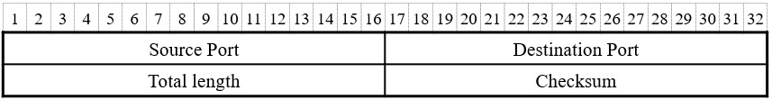
1>UDP
2>udp
3>ГВЗ
Чему равен максимально возможный размер UDP-дейтаграммы (в байтах)?
1>65515
Чему равна максимально возможная длина поля данных в UDP-дейтаграмме (в байтах)?
1>65507
Установите соответствие названий DHCP-сообщений с их назначением.
1>DISCOVER ::: найти DHCP-сервер
2>REQUEST ::: запрос IP-адреса
3>OFFER ::: предложение IP-адреса
4>ACK ::: подтверждение IP-адреса
5>NACK ::: запрет использования IP-адреса
6>RELEASE ::: освобождение IP-адреса
7>DECLINE ::: отказ от IP-адреса
Какая последовательность обмена DHCP-сообщениями используется для получения клиентом IP-адреса?
1>DISCOVER - OFFER - REQUEST - ACK
2>DISCOVER - REQUEST - OFFER - ACK
3>DISCOVER - REQUEST - ACK
4>DISCOVER - OFFER - ACK
5>DISCOVER - OFFER - RELEASE - ACK
6>DISCOVER - REQUEST - DECLINE - ACK
7>DISCOVER - REQUEST - NACK- ACK
Назначение DHCP-сообщения DISCOVER.
1>Найти DHCP-сервер
2>Запрос IP-адреса
3>Предложение IP-адреса
4>Подтверждение IP-адреса
5>Освобождение IP-адреса
6>Отказ от IP-адреса
Назначение DHCP-сообщения REQUEST.
1>Запрос IP-адреса
2>Предложение IP-адреса
3>Подтверждение IP-адреса
4>Освобождение IP-адреса
5>Отказ от IP-адреса
6>Запрет использование IP-адреса
7>Запрос дополнительных параметров
Назначение DHCP-сообщения OFFER.
1>Предложение IP-адреса
2>Подтверждение IP-адреса
3>Запрос IP-адреса
4>Запрет использования IP-адреса
5>Освобождение IP-адреса
6>Отказ от IP-адреса
7>Запрос дополнительных параметров
8>Найти DHCP-сервер
Назначение DHCP-сообщения RELEASE.
1>Освобождение IP-адреса
2>Отказ от IP-адреса
3>Запрос дополнительных параметров
4>Запрос IP-адреса
5>Подтверждение IP-адреса
6>Запрет использования IP-адреса
7>Предложение IP-адреса
Назначение DHCP-сообщения DECLINE.
1>Отказ от IP-адреса
2>Запрос дополнительных параметров
3>Запрос IP-адреса
4>Предложение IP-адреса
5>Подтверждение IP-адреса
6>Запрет использования IP-адреса
7>Освобождение IP-адреса
8>Найти DHCP-сервер
Какие утверждения не справедливы для протокола TCP?
1>ТСР ориентирован на полудуплексную передачу
2>контрольная сумма вычисляется только для заголовка сегмента
3>минимальный размер поля данных в сегменте 20 байт
4>положительная квитанция подтверждает номер правильно принятого сегмента
5>посылаются отрицательные и положительные квитанции
6>контрольная сумма вычисляется для заголовка сегмента с учетом псевдозаголовка
7>контрольная сумма вычисляется для всего сегмента с учетом псевдозаголовка
8>используется механизм скользящего окна
9>положительная квитанция содержит номер ожидаемого байта
10>отрицательная квитанция не используется
11>размер окна может меняться в процессе передачи данных
PDU какого протокола (аббревиатура) имеет заголовок, показанный на рисунке?

1>TCP
2>tcp
3>ЕСЗ
ACK=1 означает, что сегмент является ...
1>положительной квитанцией и поле "Подтвержденный номер" содержит номер ожидаемого байта
2>положительной квитанцией и поле "Подтвержденный номер" содержит номер ожидаемого сегмента
3>отрицательной квитанцией и поле "Подтвержденный номер" содержит номер ошибочного сегмента
4>отрицательной квитанцией и поле "Подтвержденный номер" содержит номер ошибочного байта
5>положтельной квитанцией и поле "Порядковый номер" содержит номер ожидаемого байта
6>положительной квитанцией и поле "Порядковый номер" содержит номер очередного сегмента
7>отрицательной квитанцией и поле "Порядковый номер" содержит номер ошибочного байта
8>положительной квитанцией и поле "Подтвержденный номер" содержит номер последнего полученного байта
SIN=1 означает, что сегмент является запросом на ...
1>установку соединения
2>разрыв соединения
3>завершение передачи данных
4>приостановку передачи данных
5>срочную передачу данных
6>приоритетную передачу данных
7>поддержку соединения
8>проверку соединения
RST=1 означает ...
1>сброс соединения из-за нестандартной ситуации
2>отказ от неверного сегмента
3>отказ на запрос о создании соединения
4>продолжение соединения
5>отказ от неверного байта
6>создание соединения
7>предложение соединения
8>запрос на отправку данных
9>завершение соединения (передачи данных)
FIN=1 означает, что ...
1>завершение соединения передающей стороной
2>сброс соединения
3>отказ от неверного сегмента
4>отказ на запрос о создании соединения
5>используются срочные данные
6>данные должны быть отправлены без ожидания заполнения буфера
7>установка соединения
8>соединение установлено
Чему равно время жизни пакета IPv4, устанавливаемое по умолчанию в Linux?
1>64
Какой протоколо канального уровня является стандартом ISO для выделенных каналов передачи данных?
1>HDLC
2>hdlc
3>РВДС
Выберите правильные утверждения по отношению к протоколу HDLC.
1>Это протокол канального уровня для выделенных каналов
2>При синхронной реализации протокола используется механизм битстаффинга
3>Комбинированные терминалы связаны каналами по принципу "точка-точка"
4>Режим нормального ответа может быть реализован по принципу "точка-точка" или "точка-многоточка"
5>Это протокол сетевого уровня для выделенных каналов
6>Комбинированные терминалы могут быть связаны каналами по принципу "точка-точка" или "точка-многоточка"
7>При синхронной реализации протокола используется механизм байтстаффинга
8>Режим нормального ответа используется комбинированными станциями
Выберите правильные утверждения по отношению к протоколу HDLC.
1>Это стандарт ISO канального уровня для выделенных каналов
2>Могут использоваться станции (узлы) трех типов
3>При асинхронной реализации протокола используется механизм байтстаффинга
4>Первичная станция передает команды, в вторичная - ответы
5>Первичные и вторичные терминалы могут быть связаны каналами по принципу "точка-точка" или "точка-многоточка"
6>Первичные и вторичные терминалы могут быть связаны каналами только по принципу "точка-многоточка"
7>При синхронной реализации протокола используется механизм байтстаффинга
8>При асинхронной реализации протокола используется механизм битстаффинга
9>Межкадровый флаг имеет вид 11000000
Какие типы кадров используются в протоколе HDLC?
1>информационный
2>управляющий
3>ненумерованый
4>нумерованный
5>двухточечный
6>многоточечный
7>нормальный
8>специальный
9>канальный
В кадре какого типа протокола HDLC указывается порядковый номер передаваемого кадра?
1>информационный
2>управляющий
3>супервизорный
4>ненумерованный
5>служебный
6>нумерованный
7>стандартный
8>специальный
9>нестандартный
В кадрах какого типа протокола HDLC указывается номер ожидаемого кадра?
1>информационный
2>управляющий
3>ненумерованный
4>служебный
5>специальный
6>нормальный
7>типовой
8>нумерованный
Какие особенности присущи протоколу HDLC?
1>в HDLC-кадре отсутствует поле длины кадра
2>в поле данных могут находиться пакеты разных технологий
3>квитанции положительные и отрицательные
4>ширина окна может быть 7 или 127 кадров
5>ширина окна может быть 7 или 127 байтов
6>квитанции только положительные
7>в HDLC-кадре отсутствует поле адреса
8>первый бит поля "управление" информационного кадра равен 1
9>квитанции только отрицательные
10>ширина окна может изменяться от 7 до 127 байтов
Какой протокол канального уровня (аббревиатура) используется для создания защищённого соединения в незащищённой сети?
1>PPTP
2>pptp
3>ЗЗЕЗ
Какой метод кодирования используется в ЛВС Ethernet 100Base-T4?
1>8B/6T
2>Манчестер 2
3>RZ
4>NRZ
5>PAM-5
Какая архитектура ЛВС является альтернативой клиент-серверной архитектуре?
1>одноранговая
2>Одноранговая
3>децентрализованная
4>пиринговая
5>peer-to-peer
6>P2P
Какая называется топология ЛВС - альтернатива физической топологии?
1>логическая
2>Логическая
3>логическая топология
Какая топология ЛВС является альтернативой активной топологии?
1>пассивная
2>Пассивная
3>пассивная топология
ЛВС с равноправными компьютерами, которые могут использовать общие ресурсы, называется ...?
1>одноранговой
2>одноранговая
3>peеr-to-peеr
4>пиринговая
5>P2P
Основной недостаток клиент-серверной архитектуры.
1>необходимость администрирования
2>невозможность организации эффективной защиты данных
3>невысокая производительность за счет разделения ресурсов сети
4>невозможность организации резервного копирования данных
5>небольшое количество пользователей (компьютеров)
6>невозможность наращивания сети
7>низкая надежность из-за наличия узкого места - сервера
Как называется максимальное расстояние между двумя наиболее удаленными рабочими станциями ЛВС?
1>диаметр
2>диаметром
3>диаметром сети
4>диаметр ЛВС
Простейшие способы увеличения диаметра ЛВС?
1>использование нескольких сетевых адаптеров в сервере
2>объединение сегментов с помощью повторителей
3>использование концентраторов
4>применение методов мультиплексирования
5>организация односегментных ЛВС
6>увеличение длины общей шины
7>объединение сегментов с помощью маршрутизаторов
8>увеличение пропускной способности каналов передачи данных
Как называется устройство для увеличения диаметра сети, функцией которого является увеличение мощности сигнала?
1>повторитель
2>повторителем
3>repeater
Многопортовый повторитель - это ...?
1>концентратор
2>Концентратор
3>hub
Адрес отправителя в кадре 802.3 в шестнадцатеричном выражении равен FF-FF-FF-FF-FF-FF. Что это означает?
1>Не может быть адресом отправителя
2>Адрес отправителя неизвестен
3>Адрес является уникальным
4>Это адрес обратной связи (loopback)
5>Отправитель находится за пределами сети
6>Локальный адрес
7>Групповой адрес
Что не может быть адресом отправителя в ЛВС Fast Ethernet?
1>01-00-0A-C0-31-01
2>A5-02-23-FF-16-7D
3>0D-12-5C-08-1B-00
4>1F-66-55-AA-BB-CC
5>5A-F0-DC-00-00-01
6>00-00-01-02-03-40
7>28-34-0D-D0-77-FF
8>7E-FF-FF-FF-FF-E7
9>0C-00-62-79-F4-08
Какие адреса ЛВС Ethernet являются уникальными (unicast)?
1>30-00-23-A5-0C-00
2>AE-50-DD-A4-00-01
3>18-02-CC-05-00-FF
4>9C-70-03-00-0B-99
5>D6-0B-55-00-11-00
6>5B-FF-DD-22-88-99
7>45-00-10-33-44-50
8>CD-77-D3-00-00-04
9>EF-00-11-22-C1-D1
10>35-01-00-A1-64-B2
Чему равна длина поля "контрольная сумма" в кадре Ethernet 802.3? Ответ укажите в битах.
1>32
Какие утверждения по отношению к сети Token Ring справедливы?
1>физическая топология - звезда или кольцо
2>логическая топология - кольцо
3>используются 3 типа кадров
4>в сети реализуется приоритетный доступ
5>физическая топология - произвольная
6>используются 2 типа кадров - кадр данных и маркер
7>нет приоритетного доступа
8>логическая топология - звезда
9>MSAU - это коммутатор
Какие типы кадров используются в сети Token Ring?
1>маркер
2>кадр данных
3>последовательность завершения
4>начальный разделитель
5>концевой разделитель
6>управление досьупом
7>управление кадром
8>статус кадра
Как называется устройство (англоязычная аббревиатура) сети Token Ring, изображенное на рисунке?
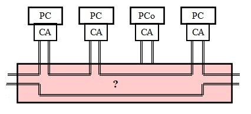
1>MSAU
2>msau
3>ЬЫФГ
Сколько уровней приоритета в ЛВС Token Ring?
1>8
Какие функции в ЛВС Token Ring возложены на монитор?
1>временной контроль для выявления потери маркера
2>формирование нового маркера в случае потери маркера
3>формирование диагностических кадров
4>контроль работоспособности MSAU
5>контроль подключений и отключений рабочих станций
6>подсчет контрольной суммы
7>формирование новых маркеров при наличии кадров для передачи
8>уничтожение диагностических кадров для снижения накладных расходов
9>выбор направления передачи кадра данных
Что изображено на рисунке?
1>маркер сети Token Ring
2>маркер сети FDDI
3>кадр данных сети Token Ring
4>последовательность завершения сети Token Ring
5>кадр данных сети FDDI
6>кадр данных сети Bluetooth
7>кадр сети Bluetooth для передачи голоса
8>кадр данных сети ZigBee
Что относится к достоинствам сети Token Ring?
1>гарантированное время доступа
2>функционирование при больших нагрузках (до 100%)
3>эффективное функционирование сети при передаче больших объемов данных
4>реальная скорость передачи данных в Token Ring выше, чем в Ethernet 10 Мбит/с
5>реальная скорость передачи данных в Token Ring выше, чем в Ethernet 100 Мбит/с
6>малая вероятность появления ошибок при передаче кадров
7>нулевая вероятность потери кадров
8>невысокая стоимость реализации
9>максимальное количество рабочих станций больше, чем в сети Ethernet
10>функционирование при малых нагрузках (менее 30%)
Что относится к недостаткам сети Token Ring?
1>более высокая стоимость Token Ring по сравнению с Ethernet
2>большая стоимость MSAU
3>меньше максимальное число рабочих станций по сравнению с Ethernet
4>необходимость контроля за целостностью маркера
5>не гарантированное время доступа
6>функционирование при больших нагрузках (до 100%)
7>реальная скорость передачи данных в Token Ring много ниже, чем в обычном Ethernet
8>необходимость наличия монитора
Какую топологию имеет сеть FDDI?
1>двойное кольцо
2>звезда
3>общая шина
4>полносвязная
5>дерево
6>радиальная
7>радиально-узловая
8>распределенная
9>многосвязная
10>расширенное кольцо
Основные отличия FDDI от Token Ring.
1>множественная передача маркера
2>нет приоритетов как в Token Ring
3>каждая рабочая станция может быть асинхронной и синхронной
4>среда передачи - волоконно-оптический кабель
5>кадры могут иметь 8 уровней приоритетов
6>все рабочие станции могут быть только синхронными
7>гарантированное время доступа
8>среда передачи - любая
Рассчитать максимально допустимый диаметр (в метрах) сети Fast Ethernet при условии, что минимальный размер кадра равен 512 байт, а скорость распространения сигнала в 3 раза меньше скорости света.
1>2048
Рассчитать минимальный размер кадра (в байтах), при котором диаметр сети Fast Ethernet может быть увеличен до 4 километров, полагая, что скорость распространения сигнала втрое меньше скорости света.
1>1000
Рассчитать минимальный размер кадра (в байтах), при котором диаметр сети 100Base-FX может быть увеличен до 4 километров, полагая, что скорость распространения сигнала по оптоволокну составляет 2/3 от скорости света.
1>500
Рассчитать эффективную пропускную способность канала связи (Мбит/с) сети Fast Ethernet при передаче кадров длиной 80 байт.
1>62
Рассчитать эффективную пропускную способность канала связи (Мбит/с) сети Ethernet 10Base-5 при передаче кадров с полем данных длиной 162 байта.
1>8,1
2>8.1
Рассчитать пропускную способность среды передачи (кадров/с) сети Ethernet 10Base-5 при передаче кадров длиной 180 байт.
1>6250
Рассчитать пропускную способность среды передачи (кадров/с) сети Fast Ethernet при передаче кадров длиной 480 байт.
1>25000
Рассчитать пропускную способность среды передачи (кадров/с) сети Ethernet 10Base-2 при передаче кадров длиной 380 байт.
1>3125
Отметьте правильные утверждения для ЛВС Fast Ethernet.
1>метод доступа – CSMA/CD
2>диаметр сети – 200 м
3>структура сети – иерархическая древовидная
4>может использоваться витая пара категории 3
5>диаметр сети – 2000 м
6>физическая топология сети – общая шина
7>может использоваться коаксиальный кабель
8>метод доступа – CSMA/CА
9>не используется витая пара категории 3
Чему равен диаметр ЛВС Fast Ethetnet (в метрах)?
1>200
2>
Какой метод кодирования используется в ЛВС Fast Ethetnet 100Base-Т4?
1>8В/6Т
2>4В/5В
3>5В/6В
4>Манчестерское кодирование
5>8В/10В
6>РАМ-5
Отметьте правильные утверждения для ЛВС 100VG-AnyLAN.
1>Метод доступа – приоритетный
2>Физическая топология - звезда
3>Концентраторы работают на 2 уровне OSI-модели
4>Логическая топология – общая шина или кольцо
5>В сети могут передаваться кадры Ethernet или кадры Token Ring
6>Концентраторы работают на 1 уровне OSI-модели
7>Метод доступа – CSMA/CD
8>Логическая топология – звезда
9>Метод доступа – маркерный
10>Физическая топология – общая шина или кольцо
11>В сети могут одновременно передаваться кадры Ethernet и Token Ring
Особенности технологии Gigabit Ethernet.
1>сохранены все виды кадров Ethernet
2>метод кодирования – 8В/10В
3>полудуплексная передача данных с методом доступа CSMA/CD
4>дуплексная передача данных с использованием коммутаторов
5>увеличин минимальный размер кадра до 512 байт
6>полудуплексная передача данных с методом доступа CSMA/CА
7>дуплексная передача данных с использованием концентраторов
8>увеличин минимальный размер кадра до 512 бит
9>метод кодирования – манчестерский
10>увеличин минимальный размер кадра до 8192 байт
Особенности технологии 10Gigabit Ethernet.
1>дуплексный режим
2>передающая среда – только волоконно-оптический кабель
3>на основе коммутаторов
4>на основе концентраторов
5>передающая среда – волоконно-оптический кабель или 4 витые пары категории 5
6>полудуплексный режим
7>метод доступа - CSMA/CD
Какую максимальную пропускную способность (Гбит/с) имеют сети Ethernet?
1>100
За счет чего в ЛВС достигаются более высокие значения пропускной способности среды передачи по сравнению с глобальными сетями?
1>вся полоса пропускания среды передачи предоставляется для передачи только одного цифрового сигнала
2>используются специальные методы кодирования
3>используются специальные методы модуляции
4>используются высокочастотные несущие
5>за счет применения импульсно-кодовой модуляции
6>применяются фильтры, ограничивающие полосу пропускания
7>за счет дуплексной передачи данных
8>полоса пропускания среды передачи предоставляется для одновременной передачи нескольких цифровых сигналов
9>за счет применения методов мультиплексирования
За счет каких решений в ЛВС Ethernet 100Base-T4 удалось реализовать передачу данных по витой паре категории 3?
1>используются 4 витые пары, причем передача осуществляется только по 3-м со скоростью 33,3 Мбит/с в каждой паре
2>метод кодирования 8B/6T
3>применяется широкополосная передача
4>используется высокочастотная модуляция
5>передача осуществляется по 4-м витым парам со скоростью 25 Мбит/с в каждой паре
6>применяются методы мультиплексирования
7>метод кодирования 64В/66В
8>метод кодирования 8В/10В
9>передача осуществляется по одной витой паре со скоростью 100 Мбит/с, поскольку ее полоса пропускания 100 МГц
Какую топологию имеет сеть Ethernet в соответствии со спецификацией 10Base-Т?
1>звезда
2>Звезда
Выберите верные утверждения.
1>Маршрутизатор имеет МАС-адрес.
2>Каждый порт маршрутизатора имеет IP-адрес.
3>Каждый порт маршрутизатора имеет МАС-адрес.
4>Маршрутизатор имеет один IP-адрес.
5>Маршрутизатор не имеет МАС-адреса.
6>Маршрутизатор имеет один транспортный адрес.
7>Каждый порт маршрутизатора имеет свой уникальный номер порта.
8>Маршрутизатор является прозрачным и не имеет адреса.
Какие способы коммутации используются в коммутаторах?
1>коммутация на лету или сквозная
2>коммутация с полной буферизацией кадра
3>бесфрагментная коммутация
4>адаптивная коммутация
5>без буферизации кадра
6>бесфрактальная коммутация
7>коммутация с инкапсуляцией
8>транслирующая коммутация
9>коммутация прозрачная
Назначение технологии адаптивной коммутации.
1>Автоматическая настройка режима коммутации для порта коммутатора в зависимости от качества канала связи
2>Автоматическая настройка режима коммутации для порта коммутатора в зависимости от пропускной способности канала связи
3>Автоматическая настройка режима коммутации для порта коммутатора в зависимости от длины канала связи
4>Повышение надежности коммутации.
5>Автоматическое исправление ошибок в передаваемом кадре.
6>Повышение скорости передачи данных.
7>Увеличение производительности коммутатора.
8>Автоматическая реконфигурация коммутатора.
Основные способы технической реализации коммутаторов.
1>на общей шине
2>с коммутационной матрицей
3>с многовходовой памятью
4>с многосвязной структурой
5>с полновсязной структурой
6>с многовходовыми портами
7>с кольцевой топологией
8>на многовходовой шине
Основное назначение алгоритма «Spanning Tree».
1>предотвращение зацикливания кадров
2>построение виртуальных путей
3>предотвращение широковещательного шторма
4>построение однонаправленной топологии
5>построение одноранговой сети
6>достижение высокой пропускной способности
7>обеспечение надежной передачи данных
8>предотвращение коллизий
Какие сетевые устройства не имеют адреса?
1>повторители
2>концентраторы
3>прозрачные мосты
4>коммутаторы 2-го уровня
5>коммутаторы 3-го уровня
6>маршрутизаторы
7>шлюзы
8>трансиверы
Какие сетевые устройства имеют МАС-адрес?
1>коммутаторы 2-го уровня
2>коммутаторы 3-го уровня
3>маршрутизаторы
4>концентраторы
5>прозрачные мосты
6>повторители
7>трансиверы
8>терминаторы
Основная особенность стека протоколов TCP/IP.
1>независимость от среды передачи данных
2>надежная доставка пакетов
3>обеспечение целостности пакетов
4>зависимость от среды передачи данных
5>надежная доставка пакетов
6>сохранение порядка потока пакетов
7>ненадежная доставка пакетов
Протокол управления передачей данных - это ... (АББРЕВИАТУРА)?
1>TCP
2>tcp
3>ЕСЗ
Дейтаграммный протокол передачи данных - это ... (АББРЕВИАТУРА)?
1>UDP
2>udp
3>ГВЗ
В каких устройствах реализуется протокол IP?
1>в компьютерах
2>в маршрутизаторах
3>в концентраторах
4>в коммутаторах
5>в мультиплексорах
6>в демультиплексорах
7>в мостах
8>в повторителях
9>в усилителях
Протокол IP обеспечивает ...
1>дейтаграммную доставку без установления соединения
2>негарантированную доставку
3>максимально возможную доставку пакетов
4>дейтаграммную доставку с установлением соединения
5>надежную доставку пакетов
6>гарантированную доставку
7>быструю доставку
Виды трафика в компьютерных сетях
1>индивидуальный
2>групповой
3>широковещательный
4>любой
5>простой
6>однородный
7>персональный
8>ограниченный
Виды трафика в компьютерных сетях
1>Unicast
2>Multicast
3>Broadcast
4>Anycast
5>Fastcast
6>Bigcast
7>Simplycast
8>Smallcast
9>Smartcast
Какими могут быть МАС-адреса?
1>Unicast
2>Multicast
3>Global
4>Local
5>Fastcast
6>Smallcast
7>Bigcast
8>Simplycast
9>Smartcast
10>Slowlycast
11>Anycast
Какие МАС-адреса являются групповыми?
1>01-30-5e-01-02-f1
2>0d-00-38-a5-11-3c
3>af-00-fb-18-16-01
4>2c-00-f3-16-cd-01
5>а0-5a-02-ab-f4-08
6>аa-46-c2-00-40-bc
7>f4-01-23-45-67-89
Какие признаки (подполя) содержит поле "Тип сервиса (DS-байт)" в заголовке пакета IPv4 ?
1>PR
2>D
3>T
4>R
5>ECN
6>DF
7>MF
8>TTL
9>U
10>S
11>ESN
Основное назначение технологии NAT.
1>решение проблемы ограниченного диапазона IP-адресов в IPv4
2>увеличение количества IP-адресов
3>повышение надежности передачи данных во внешнюю сеть
4>сокрытие внешних хостов и сервисов
5>ограничения доступа к ресурсам внешней сети
6>повышение достоверности передаваемых данных
Укажите известные вам типы NAT.
1>Static
2>Dynamic
3>Port Address Translation
4>Analytic
5>Adaptive
6>Statistical
7>Utopian
8>Logical
9>Physical
10>Port Address Transfer
Какой протокол (аббревиатура) предназначен для динамического конфигурирования компьютеров сети?
1>DHCP
2>dhcp
3>ВРСЗ
Какие протоколы относятся к почтовым?
1>SMTP
2>POP3
3>IMAP
4>ICMP
5>PPP
6>DHCP
7>FTP
8>PPTP
9>RTP
10>MAIL
11>EMAIL
Поле "Sequence Number" содержит ...
1>номер первого байта в передаваемом сегменте
2>номер первого байта в принимаемом сегменте
3>номер ожидаемого байта
4>номер ожидаемого сегмента
5>порядковый номер передаваемого сегмента
6>порядковый номер ожидаемого сегмента
Как называется PDU, заголовок которого показан на рисунке?
1>сегмент
2>сегментом
3>Сегмент
4>Сегментом
Укажите англоязычную аббревиатуру, соответствующую понятию "протокольный блок данных".
1>PDU
2>pdu
3>ЗВГ
Какие утверждения справедливы для протокола TCP?
1>начальный порядковый номер байта в первом сегменте формируется случайным образом
2>ТСР-сегмент может состоять только из одного заголовка (без поля данных)
3>размер заголовка должен быть кратным четырем байтам
4>размер заголовка ТСР-сегмента в интервале от 20 до 60 байт
5>начальный порядковый номер байта в первом сегменте всегда равен нулю
6>в ТСР-сегменте не может отсутствовать поле данных
7>размер заголовка не может превышать 60-и 32-х разрядных слов
8>в ТСР-сегменте не может отсутствовать поле параметров (опций)
9>длина заголовка ТСР-сегмента задается в байтах
Какие утверждения справедливы для протокола TCP?
1>ТСР-соединение устанавливается на основе процедуры "трехкратного рукопожатия"
2>начальный размер скользящего окна согласовывается на этапе установления соединения
3>начальный порядковый номер (ISN) байта согласовывается на этапе установления соединения
4>при одностороннем разрыве соединения дуплексная передача сегментов сохраняется
5>при расчете контрольной суммы ТСР-сегмент рассматривается как совокупность 16-разрядных двоичных чисел
6>ТСР-соединение устанавливается на основе процедуры "четырехкратного рукопожатия"
7>начальный размер скользящего окна всегда принимается равным 1460 байтам
8>начальный порядковый номер (ISN) байта всегда равен нулю
9>при одностороннем разрыве соединения сохраняется полудуплексная передача сегментов
10>при расчете контрольной суммы ТСР-сегмент рассматривается как совокупность 32-х разрядных двоичных чисел
11>конрольная сумма ТСР-сегмента пересчитывается в каждом маршрутизаторе
Укажите правильные утверждения для протокола IPv6.
1>маршрутизация осуществляется быстрее по сравнению с IPv4
2>не нужен протокол ARP
3>не нужно маскирование адресов
4>в адресном поле можно указать физический адрес устройства
5>фрагментация выполняется только в конечных узлах
6>не нужен протокол ICMP
7>маскирование адресов проще, чем в IPv4
8>в адресном поле можно указать адреса любого уровня OSIмодели - канального, сетевого и транспортного
9>в адресном поле можно указать транспортный адрес
10>в адресном поле можно указать адреса портов
11>маршрутизация осуществляется медленнее по сравнению с IPv4, поскольку используются более длинные адреса
Сколько IP-адресов имеет маршрутизатор?
1>по количеству используемых портов маршрутизатора
2>по количеству портов маршрутизатора
3>0
4>1
5>любое
Сколько IP-адресов может иметь маршрутизатор в компьютерной сети?
1>два
2>не более, чем количество портов маршрутизатора
3>равное количеству портов маршрутизатора
4>больше количества портов маршрутизатора
5>один
6>ни одного
Сколько IP-адресов имеет коммутатор?
1>0
Сколько IP-адресов имеет хаб?
1>0
Сколько MAC-адресов имеет маршрутизатор?
1>по количеству портов маршрутизатора
2>по количеству используемых портов маршрутизатора
3>ни одного
4>один
5>не известно
6>любое
Сколько MAC-адресов имеет коммутатор?
1>1
Сколько MAC-адресов имеет концентратор?
1>0
Из какого диапазона должен быть выбран IP-адрес порта 1 маршрутизатора 2?

1>210.1.1.3 - 210.1.1.30
2>210.1.1.1 - 210.1.1.254
3>210.1.1.3 - 210.1.1.255
4>230.3.3.3 - 230.3.3.254
5>230.3.3.3 - 230.3.3.255
6>230.3.3.3 - 230.3.3.30
7>220.2.2.3 - 220.2.2.255
8>220.2.2.30 - 220.2.2.250
9>220.2.2.1 - 220.2.2.30
Какие из перечисленных ниже IP-адресов могут быть назначены порту 2 маршрутизатора 3?
1>230.3.3.10
2>230.3.3.156
3>230.3.3.254
4>230.3.3.0
5>230.3.3.255
6>220.2.2.3
7>220.2.2.10
8>220.2.2.254
9>220.2.2.3
10>220.2.2.1
11>210.1.1.3
12>210.1.1.156
Какой IP-адрес должен быть назначен порту 3 маршрутизатора 1, если IP-адрес порта 3 маршрутизатора 2 равен 240.4.4.1/30 и IP-адрес порта 3 маршрутизатора 3 равен 240.4.4.5/30?

1>240.4.4.2
2>240.4.4.2/30
Какой IP-адрес должен быть назначен порту 4 маршрутизатора 1, если IP-адрес порта 3 маршрутизатора 2 равен 240.4.4.1/30 и IP-адрес порта 3 маршрутизатора 3 равен 240.4.4.5/30?
1>240.4.4.6
2>240.4.4.6/30
Какой IP-адрес должен быть назначен порту 3 маршрутизатора 1, если IP-адрес порта 3 маршрутизатора 2 равен 240.4.4.2/30 и IP-адрес порта 3 маршрутизатора 3 равен 240.4.4.6/30?
1>240.4.4.1/30
2>240.4.4.1
Какой IP-адрес должен быть назначен порту 4 маршрутизатора 1, если IP-адрес порта 3 маршрутизатора 2 равен 240.4.4.2/30 и IP-адрес порта 3 маршрутизатора 3 равен 240.4.4.6/30?
1>240.4.4.5/30
2>240.4.4.5
Что может быть адресом отправителя в ЛВС Fast Ethernet?
1>00-11-22-АА-0F-12
2>44-00-45-DA-1F-00
3>3C-98-B5-00-01-56
4>0E-00-22-0C-77-02
5>03-A3-44-0B-12-10
6>0B-09-90-12-AA-B3
7>28-01-53-AD-FF
8>AA-00-11-23-BB-C7-0D
9>1D-2A-30-41-52-FF
В каком диапазоне находится длина поля данных кадра Ethernet II?
1>46-1500 байт
2>64-1518 байт
3>0-1500 байт
4>0-1518 байт
5>64-1518 бит
6>64-1518 32-х битовых слов
7>0-65535 байт
8>64-65535 байт
9>46-1500 32-х битовых слов
Выберите правильные утверждения для ЛВС 100Base-TX.
1>кабельная система - витая пара категории 5
2>диаметр сети 200 м
3>реализована функция автопереговоров
4>метод кодирования - Манчестер II
5>кабельная система - многомодовое оптоволокно
6>реализована функция циклического опроса
7>реализована дуплексная передача
8>метод кодирования - 8В/6Т
Выберите правильные утверждения для ЛВС 100Base-T4.
1>кабельная система - UTP категории 3, 4 и 5
2>метод кодирования 8В/6Т
3>передача данных осуществляется по 3-м витым парам
4>кабельная система - любая
5>метод кодирования - Манчестер II
6>передача данных осуществляется по 4-м витым парам категории 3
7>передача данных осуществляется по 2-м витым парам категории 5
8>метод кодирования - РАМ-5
Кадр какой локальной сети показан на рисунке?

1>Gigabit Ethernet
2>100VG-AnyLAN
3>Fast Ethernet
4>10 Base-T
5>100Base-FL
6>10Gigabit Ethernet
7>40Gigabit Ethernet
8>100Gigabit Ethernet
9>Token Ring
10>FDDI
Какая локальная сеть показана на рисунке?
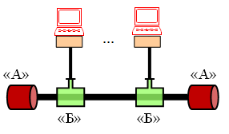
1>10 Base-5
2>10 Base-2
3>10 Base-Т
4>10Base-FL
5>Fast Ethernet
6>100VG-AnyLAN
7>Gigabit Ethernet
8>Token Ring
9>FDDI
Как называется элемент "А" на рисунке?
1>терминатор
2>трансивер
3>трансформатор
4>транслятор
5>отражатель
6>держатель
7>концевик
8>фиксатор
9>ресивер
Как называется элемент "Б" на рисунке?
1>трансивер
2>терминатор
3>транслятор
4>генератор
5>приемник
6>сигнализатор
7>соединитель
8>разветвитель
Чему равен максимальный диаметр (в метрах) локальной сети, показанной на рисунке?
1>500
Чему равно максимальное количество рабочих станций в локальной сети, показанной на рисунке?
1>100
Как называется элемент ЛВС, предотвращающий появление отраженного сигнала на концах коаксиального кабеля?
1>терминатор
2>Терминатор
3>терминатором
4>терминаторы
Какая локальная сеть показана на рисунке?
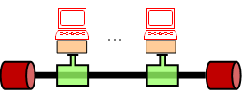
1>10Base-2
2>10Base-5
3>10Base-Т
4>10Base-F
5>10Base-2
6>Fast Ethernet
7>100VG-AnyLAN
8>Gigabit Ethernet
9>Token Ring
10>FDDI
Чему равен максимальный диаметр локальной сети, показанной на рисунке?
1>185 метров
2>550 метров
3>200 метров
4>100 метров
5>2 км
6>3-4 км
7>0,5 км
8>5 км
Чему равно максимальное количество рабочих станций в локальной сети, показанной на рисунке?
1>30
Чему равно максимальное количество рабочих станций в локальной сети, показанной на рисунке?
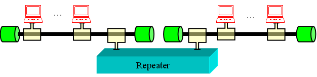
1>58
Чему равен максимальный диаметр локальной сети, показанной на рисунке?
1>370 метров
2>500 метров
3>185 метров
4>1250 метров
5>100 метров
6>1 км
7>3-4 км
8>400 метров
9>550 метров
10>250 метров
Какая локальная сеть показана на рисунке?
1>10Base-T
2>10Base-2
3>10Base-5
4>10Base-F
5>FDDI
6>10Base-FB
Чему равно максимальное расстояние (в км) между компьютером и портом концентратора в ЛВС 10Base-T?
1>0,1
2>0.1
3>,1
4>.1
Что означает правило "4-х хабов" для ЛВС 10Base-T?
1>Между любыми двумя компьютерами ЛВС должно быть не более 4-х хабов
2>В ЛВС должно быть не более 4-х хабов
3>Между двумя наиболее удаленными компьютерами должно быть не более 4-х хабов
4>В каждом сегменте ЛВС должно быть не более 4-х хабов
5>В многосегментной ЛВС может быть не более 4-х последовательно связанных хабов
6>В многосегментной ЛВС с топологией "звезда" должно быть не более 4-х хабов
7>В многосегментной ЛВС должно быть не менее 4-х хабов
Может ли быть в ЛВС 10Base-T между компюьютерами 5 и более хабов?
1>нет, так как сигнал может быть не опознан из-за искажений
2>нет, так как сигнал может быть не опознан из-за затухания
3>нет, так как сигнал может быть не опознан из-за перегрузки
4>нет, так как сигнал может быть инвертирован
5>может, так как каждый хаб увеличивает мощность сигнала
6>может, так как в локальной сети не бывает перегрузок
7>может быть любое количество хабов
8>не знаю
Что означает правило "5-4-3" для ЛВС Ethernet 10 Мбит/с?
1>В сети максимально может быть 5 сегментов, 4 концентратора и 3 сегмента с компьютерами
2>В сети максимально может быть 5 концентраторов, 4 сегмента, из которых 3 сегмента нагружены
3>В сети максимально может быть по 5 компьютеров в каждом сегменте, 4 концентратора, объединяющих 3 сегмента
4>В каждом сегменте должно быть по 5 компьютеров, максимально может быть 4 сегмента, связанных с помощью 3-х концентраторов
5>В сети максимально может быть 5 сегментов, в каждом сегменте по 4 компьютера и 3 концентратора
Сколько хабов может ли быть в ЛВС 10Base-T 5?
1>Может быть 10 и более
2>Не может быть более 10
3>Не более 4-х, так как сигнал может быть не опознан из-за затухания
4>Не менее 4-х, но не более 10, так как каждый хаб увеличивает мощность сигнала
5>Не более 5-и, так как сигнал может быть не опознан из-за искажений
Какие достоинства присущи VLAN?
1>группировка устройств по функционалу
2>уменьшение количества широковещательного трафика в сети
3>увеличение безопасности и управляемости сети
4>группировка устройств по назначению
5>увеличение широковещательного трафика в сети
6>простота организации группового трафика
7>уменьшение служебного трафика
8>уменьшение накладных расходов
Какой стандарт описывает процедуру использования меток (тегов) для указания о принадлежности кадров Ethernet к конкретной VLAN
1>IEEE 802.1q
2>IEEE 802.1p
3>IEEE 802.1
4>IEEE 802.2
5>IEEE 802.3
6>IEEE 802.3u
7>IEEE 802.3z
8>IEEE 802.3ab
Что произойдет в ЛВС Ethernet, если межкадровый интервал сделать равным нулю?
1>среда передачи данных может быть монополизирована какой-либо станцией
2>станции не успеют вернуться в начальное состояние
3>среда передачи данных может быть монополизирована станциями, попавшими в коллизию
4>станции не успеют распознать коллизию
5>станции не смогут синхронизироваться
6>в среде передачи данных может возникнуть поздняя коллизия
7>в ЛВС произойдет перегрузка
8>передаваемые кадры будут потеряны
Какие утверждения соответствуют алгоритму отступления в ЛВС Ethernet, реализуемому после возникновения коллизии?
1>каждая станция, попавшая в коллизию, пытается осуществить повторную передачу кадра через промежуток времени, кратный 512 битовым интервалам
2>количество интервалов, через которое может быть повторно передан кадр, величина случайная, зависящая от числа попаданий кадра в коллизию
3>максимальное время отсрочки передачи кадра в ЛВС Fast Ethernet равно 5,24 мс
4>минимальное количество интервалов, через которое может быть повторно передан кадр, равно 0
5>количество интервалов, через которое может быть повторно передан кадр, величина постоянная, не зависящая от числа попаданий кадра в коллизию
6>максимальное время отсрочки передачи кадра в ЛВС Fast Ethernet равно 52,4 мс
7>максимальное время отсрочки передачи кадра в ЛВС Fast Ethernet равно 5,12 мс
8>количество интервалов, через которое может быть повторно передан кадр, равно 16
9>количество интервалов, через которое может быть повторно передан кадр, равно 10
10>максимальное время отсрочки передачи кадра в ЛВС Fast Ethernet равно 6,4 мс
11>каждая станция, попавшая в коллизию, пытается осуществить повторную передачу кадра через промежуток времени, кратный 64 битовым интервалам
12>минимальное количество интервалов, через которое может быть повторно передан кадр, равно 1
Множество узлов ЛВС с коммутаторами, в которой трафик (в том числе широковещательный) полностью изолирован от трафика других узлов этой локальной сети, называется ...(англоязычная аббревиатура)
1>VLAN
Достоинства виртуальных локальных сетей.
1>группировка устройств по функционалу
2>уменьшение количества широковещательного трафика в ЛВС
3>увеличение безопасности и управляемости сети
4>группировка устройств по назначению
5>отсутствие широковещательного трафика в ЛВС
6>увеличение пропускной способности сети
7>увеличение производительности сети
8>группировка устройств по надежности
9>отсутствие группового трафика
Как называется процесс добавления метки виртуальной сети в передаваемые кадры.
1>тегирование
2>тестирование
3>троирование
4>терминирование
5>отметка
6>назначение
7>виртуализация
8>базирование
9>верификация
Тегирование - это функция ...?
1>коммутаторов
2>концентраторов
3>хостов
4>маршрутизаторов
5>повторителей
6>коммутаторов и хостов
7>концентраторов и коммутаторов
8>коммутаторов и маршрутизаторов
9>концентраторов, коммутаторов и хостов
10>всех сетевых устройств и хостов
Формат блока данных какой сети (аббревиатура) показан на рисунке?

1>ВЛВС
2>VLAN
Как называется поле Х формата блока данных, показаного на рисунке?
1>тег
2>метка
Как называется поле TPId формата блока данных, показаного на рисунке?
1>идентификатор протокола тегирования
2>тег идентификатора протокола
3>протокол идентификатора тегирования
4>протокол передачи тега
5>транспортный протокол идентификатра
6>идентификатр транспортного протокола
7>протокол идентификации тега
8>идеальный протокол передачи
9>тег протокола идентификатора
10>идентификатор ВЛВС
Как называется поле PСР формата блока данных, показаного на рисунке?
1>приоритет трафика
2>протокол приоритетного управления
3>признак наличия приоритета
4>точка управления протоколом
5>управление "точка-точка"
6>протокол сигнализации передачи данных
7>приоритетный путь передачи
8>приоритетный поток управления
9>протокол контроля приоритетов
10>индикатор допустимости удаления при перегрузке
Как называется поле DEI формата блока данных, показаного на рисунке?
1>индикатор допустимости удаления при перегрузке
2>индикатор недопустимости удаления при перегрузке
3>приоритет передаваемого трафика при перегрузке
4>идентификатор виртуальной сети
5>метка тегирования
6>идентификатор протокола тегирования
7>идентификатор удаления тега
8>признак удаленного интерфейса при перегрузке
Как называется поле VID формата блока данных, показаного на рисунке?
1>идентификатор виртуальной сети
2>идентификатор протокола тегирования
3>приоритет передаваемого трафика
4>индикатор допустимости удаления при перегрузке
5>идентификатор виртуального пути
6>индикатор перегрузки
7>идентификатор валидности сети
Рассчитать пропускную способность среды передачи (кадров/с) локальной сети Ethernet 10Base-T при передаче кадров с длиной поля данных 462 байт.
1>2500
Рассчитать пропускную способность среды передачи (кадров/с) сети Fast Ethernet при передаче кадров с длиной поля данных 362 байт.
1>31250
Рассчитать пропускную способность среды передачи (кадров/с) сети Fast Ethernet при передаче кадров длиной 140 байт.
1>78125
Рассчитать пропускную способность среды передачи (кадров/с) сети Fast Ethernet при передаче кадров длиной 780 байт.
1>15625
Рассчитать пропускную способность среды передачи (кадров/с) сети Ethernet 10Base-Т при передаче кадров длиной 1230 байт.
1>1000
Рассчитать пропускную способность среды передачи (кадров/с) сети Fast Ethernet при передаче кадров длиной 980 байт.
1>12500
Рассчитать эффективную пропускную способность канала связи (Мбит/с) сети Fast Ethernet при передаче кадров длиной 380 байт.
1>90.5
2>90,5
Рассчитать эффективную пропускную способность канала связи (Мбит/с) сети Ethernet 10Base-5 при передаче кадров с полем данных длиной 762 байта.
1>95,25
2>95.25
Какие сети используют технологию "виртуального канала"?
1>Х.25
2>Frame Relay
3>ATM
4>Ethernet
5>100 VG-AnyLAN
6>FDDI
7>Token Ring
8>Fast Ethernet
9>10 Gigabit Ethernet
10>100 Gigabit Ethernet
Какими достоинствами обладает технология коммутации пакетов на основе виртуального канала по сравнению с маршрутизацией?
1>решение о продвижении пакета принимается быстрее из-за меньшего размера таблиц коммутации
2>возрастает эффективная (полезная) скорость передачи данных за счет уменьшения доли служебной информации в пакетах
3>решение о продвижении пакета принимается быстрее из-за совместного применения этапов маршрутизации и коммутации
4>возрастает пропускная способность каналов за счет уменьшения доли служебной информации в пакетах
5>возрастает реальная (фактическая) скорость передачи данных за счет уменьшения коллизий
6>уменьшается время задержки в коммутаторах из-за увеличения емкости буферной памяти
7>увеличивается надежность передачи данных
8>уменьшаются потери пакетов из-за увеличения емкости буферной памяти коммутаторов
9>увеличивается безопасность передачи данных
Выберите правильные утверждения по технологии коммутируемых сетей.
1>В основе технологии коммутируемых сетей лежит понятие «виртуальное соединение»
2>Виртуальные соединения бывают коммутируемые и выделенные
3>Передача данных реализуется в два этапа: 1) маршрутизация (формирование таблиц коммутации); 2) коммутация пакетов (передача данных)
4>Коммутация пакетов осуществляется по номеру виртуального канала
5>Коммутация пакетов осуществляется по адресу назначения
6>В основе технологии коммутируемых сетей лежит понятие «виртуальная ЛВС»
7>Виртуальные соединения делятся на постоянные и выделенные
8>Виртуальные соединения делятся на коммутируемые и временные
9>Передача данных реализуется в два этапа: 1) коммутация (формирование таблиц коммутации); 2) маршрутизация пакетов
10>Коммутация пакетов осуществляется по адресу назначения
11>Коммутация пакетов осуществляется по МАС-адресу
12>Коммутация пакетов осуществляется по IP-адресу
13>Передача данных реализуется в два этапа: 1) маршрутизация (формирование таблиц маршрутизации); 2) коммутация пакетов (формирование таблиц коммутации)
Какая сеть изображена на рисунке?
1>Х.25
2>Frame Relay
3>ATM
4>HDLC
5>MPLS
6>X.75
7>Bluetooth
8>TCP/IP
9>IPX/SPX
10>SNA
11>SLIP
Что такое ПАД в сети, изображенной на рисунке?
1>сборщик-разборщик пакетов
2>пакетный адаптер данных
3>простой адаптер данных
4>предварительный коммутатор
5>пакетный ассемблерный датчик
6>пакетный аппаратный датчик
7>сборщик данных
8>символьный сборщик-разборщик
9>сигнальный пакетный адаптер
10>терминальный коммутатор
11>предварительный коммутатор
Что такое ЦКП в сети, изображенной на рисунке?
1>центр коммутации пакетов
2>центр коммутируемой передачи
3>пакетный концентратор
4>сборщик-разборщик пакетов
5>центральный коммутационный пункт
6>центр концентрации пакетов
7>пакетный адаптер
8>центральный пакетный адаптер
Как называется PDU, изображенный на рисунке?
1>Ячейка
2>ячейка
3>ячуйкрй
PDU какой сетевой технологии (аббревиатура) показан на рисунке?
1>ATM
2>atm
3>ФЕЬ
Выберите правильные утверждения по сетевой технологии, PDU которой показан на рисунке?
1>это PDU сетевой технологии АТМ
2>назначение технологии - передача компьютерного и мультимедийного трафика в рамках одной транспортной системы
3>технология использует общие транспортные протоколы для локальных и глобальных сетей
4>это PDU сетевой технологии Х.25
5>это PDU сетевой технологии Frame Relay
6>это PDU сетевой технологии MPLS
7>назначение технологии - передача только компьютерного трафика
8>назначение технологии - передача только мультимедийного трафика
9>технология использует разные транспортные протоколы для локальных и глобальных сетей
10>технология использует общие транспортные протоколы только для глобальных сетей
11>технология использует общие транспортные протоколы только для локальных сетей
12>технология не использует общие транспортные протоколы для локальных и глобальных сетей
Какие недостатки присущи беспроводным ЛВС по сравнению с проводными?
1>низкая помехоустойчивость
2>возможность несанкционированного доступа
3>неопределенность зоны покрытия
4>проблема "скрытого терминала"
5>сложно разворачивать и модифицировать
6>высокая стоимость
7>мобильность пользователей
Какие частотные диапазоны используютс в беспроводных ЛВС?
1>900 МГц
2>2,4 ГГц
3>5 ГГц
4>900 ГГц
5>2,4 МГц
6>5 МГц
7>90 МГц
8>500 МГц
9>500 ГГц
10>5 ТГц
11>2,4 ТГц
Какое принято ограничение по максимальной мощности (Ватт) в беспроводных ЛВС?
1>1
Перечислите особенности технологии Zig Bee (IEEE 802.15.4)
1>энергопотребление – около 0,1 Вт
2>невысокие скорости передачи - до 250 кбит/с
3>расстояния передачи – до 100 м и до 300 м вне помещения
4>диапазон частот 2,4 ГГц
5>до 65 000 устройств в сети
6>диапазон частот 2,4 МГц
7>энергопотребление – около 1 Вт
8>скорости передачи - от 1 до 10 Мбит/с
9>расстояния передачи – до 10 м
10>до 255 устройств в сети
11>расстояния передачи – менее 1 м
Какую беспроводную технологию иллюстрирует рисунок?
1>Zig Bee
2>ZigBee
3>Zig bee
4>zig bee
5>zigbee
6>Яшп Иуу
7>ЯшпИуу
Какую беспроводную технологию иллюстрирует рисунок?
1>Bluetooth
2>bluetooth
3>Идгуещщер
На основе какой технологии передачи данных чаще всего строятся сенсорные сети?
1>Zig Bee
2>Bluetooth
3>WiFi
4>WiMAX
5>Ethernet
6>Token Ring
7>FDDI
8>X.25
9>Frame Relay
10>ATM
11>MPLS
Как называется поле "B" MPLS-заголовка, показанного на рисунке?
1>СoS
2>TTL
3>Метка
4>Признак удаления
5>Признак дна стека
6>LDP
7>Приоритет
8>Действие
9>Признак стека MPLS
10>QoS
Как называется поле "С" MPLS-заголовка, показанного на рисунке?
1>Признак дна стека меток
2>Признак удаления
3>Притритет метки
4>QoS
5>Синхронизация
6>Признак переполнения
7>TTL
8>Бит обнаруженной ошибки
9>Признак конца стека
10>Признак начала стека
11>CoS
Как называется поле "D" MPLS-заголовка, показанного на рисунке?
1>TTL
2>Признак дна стека
3>Метка
4>Признак удаления
5>Приоритет метки
6>Признак конца метки
7>TLL
8>Контрольная сумма MPLS-заголовка
9>CoS
10>Размер стека
11>QoS